DRAFT — UE26CY151A · Unit_01 — Molecular spectroscopy, phase equilibria, and computational chemistry · Complete Unit Master
·How to use this pack
Search this single unit master by lesson, timestamp, slide text or source page. Read the transcript in timestamp order, then compare extracted slide text with its page-faithful source figure. Formula candidates and archive question mappings are explicitly flagged for review. Topics include the applicable parts: overview, key terms, formulas, figures, flowcharts, important points, worked examples, past-paper questions and a recap. IDs are shared with the separate documents: E = formula, G = graph, F = flowchart, W = worked example. Each ID is numbered by topic, so E4.2 is the second formula of topic 4.
1UE26CY151A · Unit_01: Molecular spectroscopy, phase equilibria, and computational chemistry
This unit master organizes source material for Engineering Chemistry, Unit_01, officially titled Molecular spectroscopy, phase equilibria, and computational chemistry. It includes 14 video transcripts and 12 source slide decks, with page-level text and rendered images where available. This draft preserves source wording and page order; it does not claim a complete human subject review or full audiovisual review. EV0000001
2Interaction of radiation with matter
This lesson is indexed from the source video titled Interaction of radiation with matter. Its complete timestamped transcript is preserved below in segment order. The original video path and content hash are recorded in datasets/lecture-corpus.json. Transcript text is source wording; it has not been silently corrected or rewritten. A candidate slide deck is grouped here according to the current matching score; the exact path and page locators are listed in the source evidence. EV0000002 · EV0000003
Graphs and diagrams

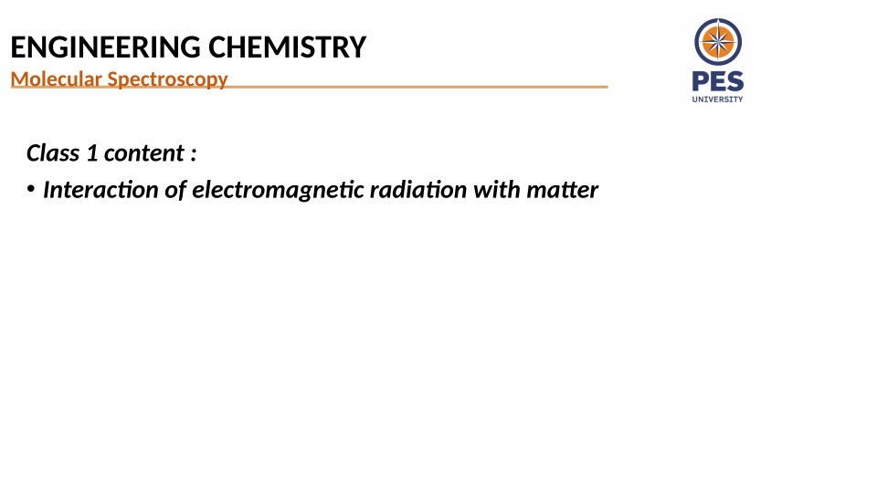
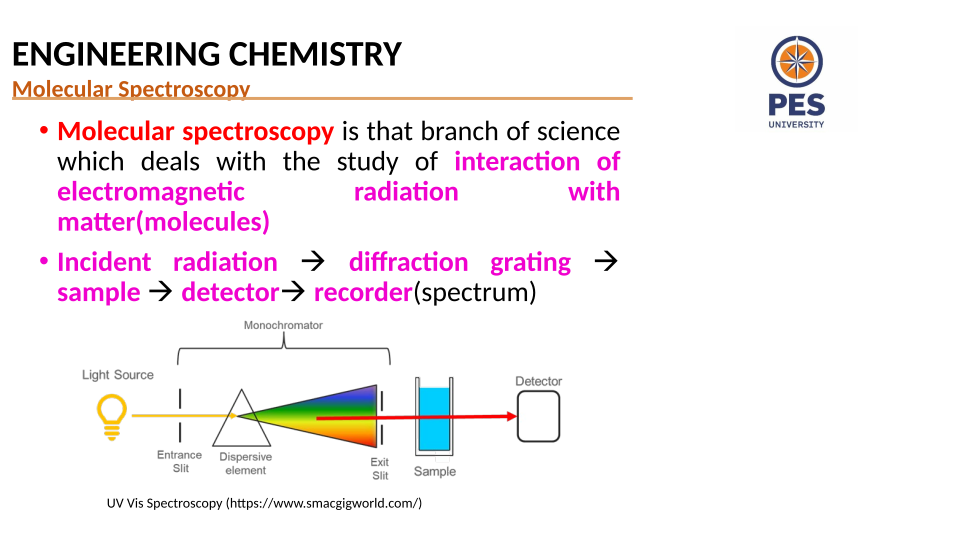
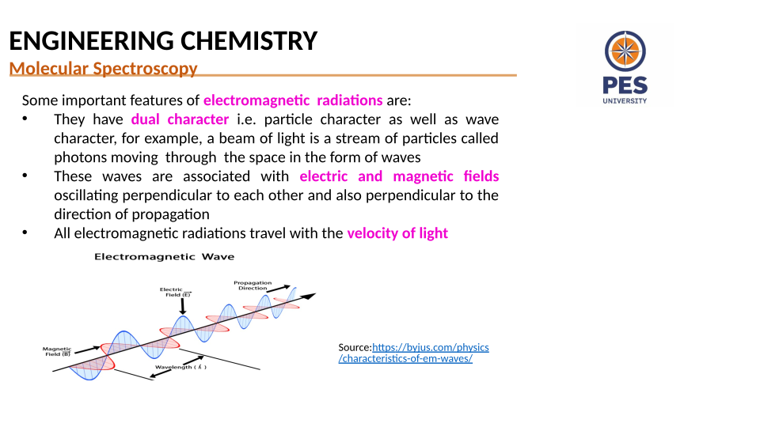
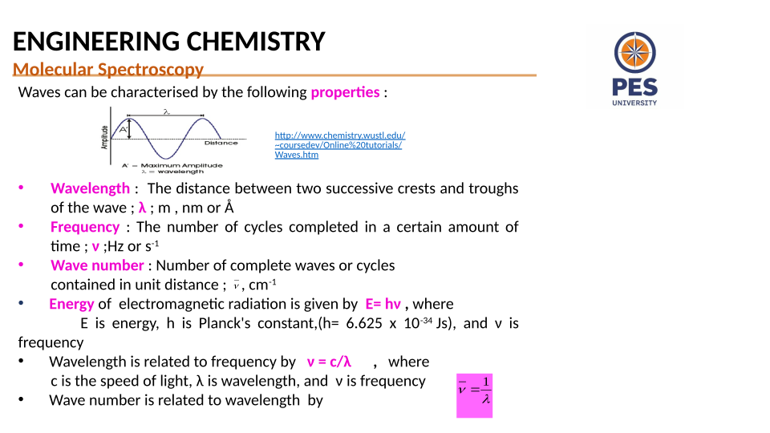
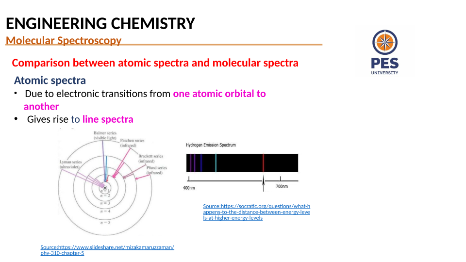
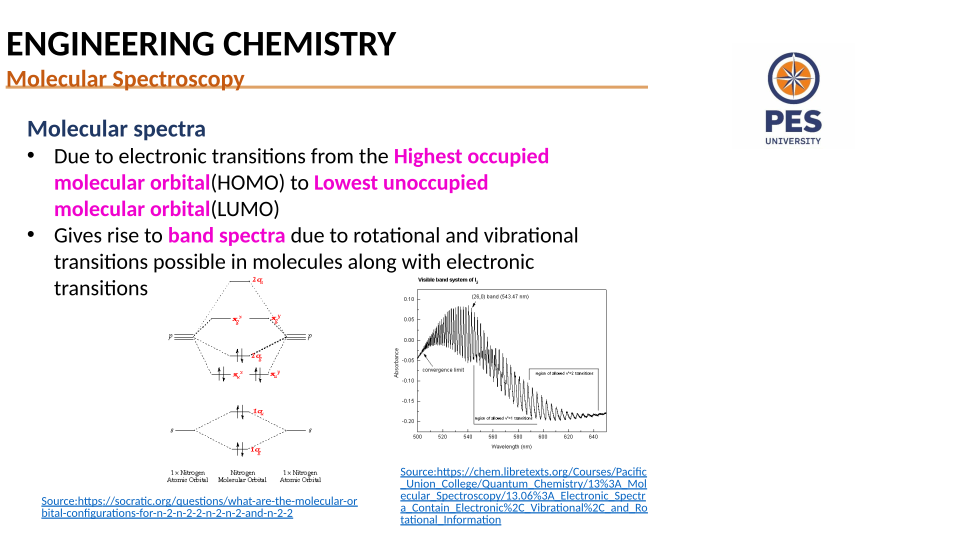
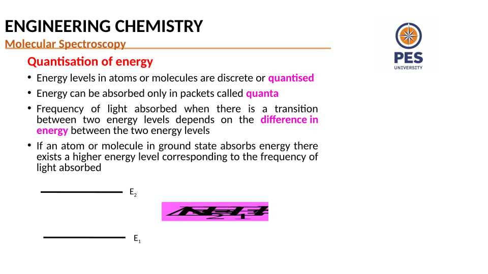
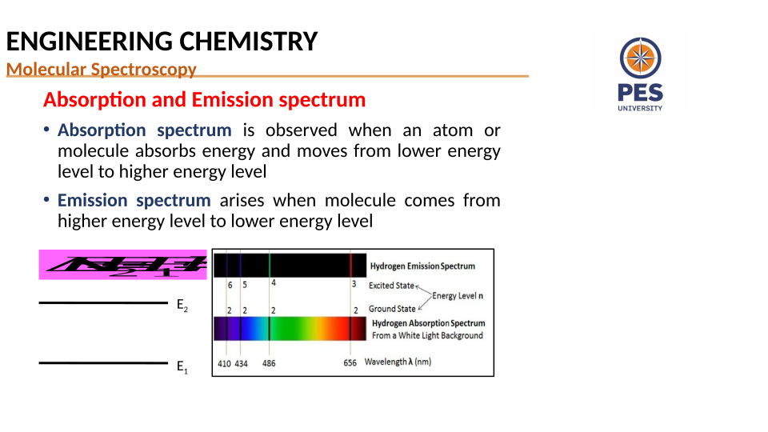
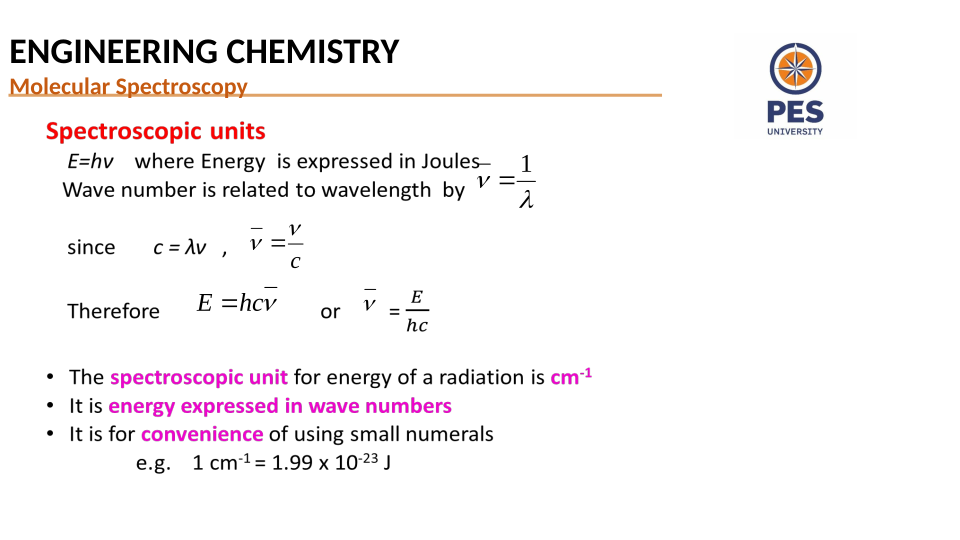

Important points and why
- Source slide page 1 (extracted text): ENGINEERING CHEMISTRY (UE26CY151 A,B) Department of Science and Humanities EV0000258 · EV0000259 · EV0000260
- Source slide page 2 (extracted text): ENGINEERING CHEMISTRY Molecular Spectroscopy Class 1 content : Interaction of electromagnetic radiation with matter EV0000261 · EV0000262 · EV0000263
- Source slide page 3 (extracted text): ENGINEERING CHEMISTRY Molecular Spectroscopy Molecular spectroscopy is that branch of science which deals with the study of interaction of electromagnetic radiation with matter(molecules) Incident radiation diffraction grating sample detector recorder(spectrum) [Image text, OCR] Monochromator Light Source Detector Entrance Dispersive Exit Slit element Slit Sample UV Vis Spectroscopy (https://www.smacgigworld.com/) EV0000264 · EV0000265 · EV0000266
- Source slide page 4 (extracted text): ENGINEERING CHEMISTRY Molecular Spectroscopy Some important features of electromagnetic radiations are: They have dual character i.e. particle character as well as wave character, for example, a beam of light is a stream of particles called photons moving through the space in the form of waves These waves are associated with electric and magnetic fields oscillating perpendicular to each other and also perpendicular to the direction of propagation All electromagnetic radiations travel with the velocity of light [Image text, OCR] Electromagnetic Wave Propagation Electric Direction Field (E) Magnetic Field (B) Wavelength（K) Source:https://byjus.com/physics/characteristics-of-em-waves/ EV0000267 · EV0000268 · EV0000269
- Source slide page 5 (extracted text): ENGINEERING CHEMISTRY Molecular Spectroscopy Waves can be characterised by the following properties : Wavelength : The distance between two successive crests and troughs of the wave ; λ ; m , nm or Å Frequency : The number of cycles completed in a certain amount of time ; ν ;Hz or s-1 Wave number : Number of complete waves or cycles contained in unit distance ; , cm-1 Energy of electromagnetic radiation is given by E= hν , where E is energy, h is Planck's constant,(h= 6.625 x 10-34 Js), and ν is frequency Wavelength is related to frequency by ν = c/λ , where c is the speed of light, λ is wavelength, and ν is frequency Wave number is related to wavelength by http://www.chemistry.wustl.edu/~coursedev/Online%20tutorials/Waves.htm EV0000270 · EV0000271 · EV0000272
- Source slide page 6 (extracted text): ENGINEERING CHEMISTRY Molecular Spectroscopy Comparison between atomic spectra and molecular spectra Atomic spectra Due to electronic transitions from one atomic orbital to another Gives rise to line spectra [Image text, OCR] Figure7shows“permitted”orbitsofanelectron intheBohr modelofahydrogenatom. Balmer series (visible light) Paschen series (infrared) Brackett series Lyman series (infrared) (ultraviolet) Pfund series (infrared) n=5 n=6 Figure7:nottoscale DR.ATAR @ UTM.NS PHY310 Spectral Lines of Hydrogen 34 Source:https://socratic.org/questions/what-happens-to-the-distance-between-energy-levels-at-higher-energy-levels Source:https://www.slideshare.net/mizakamaruzzaman/phy-310-chapter-5 EV0000273 · EV0000274 · EV0000275
- Source slide page 7 (extracted text): ENGINEERING CHEMISTRY Molecular Spectroscopy Molecular spectra Due to electronic transitions from the Highest occupied molecular orbital(HOMO) to Lowest unoccupied molecular orbital(LUMO) Gives rise to band spectra due to rotational and vibrational transitions possible in molecules along with electronic transitions [Image text, OCR] 24 1 x Nitrogen Nitrogen 1 × Nitrogen Atorric Orbital Molecular Orbital Atorric Orbital [Image text, OCR] Visible band system of L 0.10 (26.0) band (543.47 nm) 0.05 0.00 0.05 convergence limit regicn of allowed v=2 transitions -0.10 -0.15 -0.20 regicn of allowed v=1 transitions 500 520 540 560 580 600 620 640 Wavelength (nm) Source:https://chem.libretexts.org/Courses/Pacific_Union_College/Quantum_Chemistry/13%3A_Molecular_Spectroscopy/13.06%3A_Electronic_Spectra_Contain_Electronic%2C_Vibrational%2C_and_Rotational_Information Source:https://socratic.org/questions/what-are-the-molecular-orbital-configurations-for-n-2-n-2-2-n-2-n-2-and-n-2-2 EV0000276 · EV0000277 · EV0000278
- Source slide page 8 (extracted text): ENGINEERING CHEMISTRY Molecular Spectroscopy Quantisation of energy Energy levels in atoms or molecules are discrete or quantised Energy can be absorbed only in packets called quanta Frequency of light absorbed when there is a transition between two energy levels depends on the difference in energy between the two energy levels If an atom or molecule in ground state absorbs energy there exists a higher energy level corresponding to the frequency of light absorbed E2 E1 EV0000279 · EV0000280 · EV0000281
- Source slide page 9 (extracted text): ENGINEERING CHEMISTRY Molecular Spectroscopy Absorption and Emission spectrum Absorption spectrum is observed when an atom or molecule absorbs energy and moves from lower energy level to higher energy level Emission spectrum arises when molecule comes from higher energy level to lower energy level [Image text, OCR] AtomicSpectralLines WhiteLightEmissionSpectrum ContinuousBlackBodyRadiation HydrogenEmissionSpectrum 6 5 4 3 ExcitedState EnergyLeveln 2 2 2 2 GroundState HydrogenAbsorptionSpectrum FromaWhiteLightBackground 410434 486 656 Wavelength入(nm) E2 E1 EV0000282 · EV0000283 · EV0000284
- Source slide page 10 (extracted text): ENGINEERING CHEMISTRY Molecular Spectroscopy EV0000285 · EV0000286 · EV0000287
- Source slide page 11 (extracted text): THANK YOU Department of Science and Humanities EV0000288 · EV0000289 · EV0000290
3Electromagnetic spectrum
This lesson is indexed from the source video titled Electromagnetic spectrum. Its complete timestamped transcript is preserved below in segment order. The original video path and content hash are recorded in datasets/lecture-corpus.json. Transcript text is source wording; it has not been silently corrected or rewritten. A candidate slide deck is grouped here according to the current matching score; the exact path and page locators are listed in the source evidence. EV0000022 · EV0000023
Graphs and diagrams

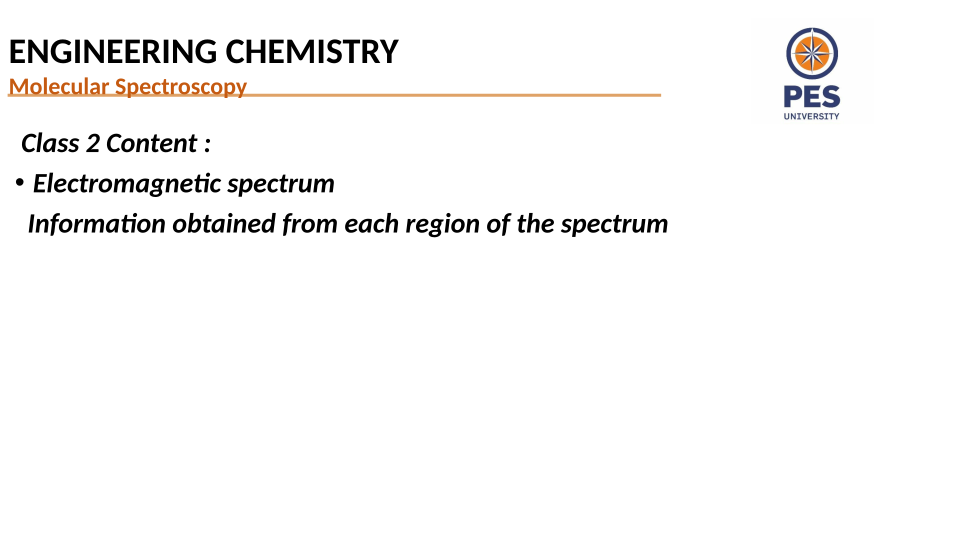
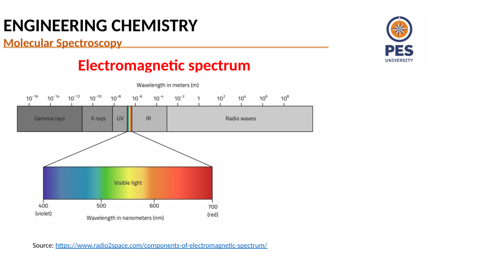
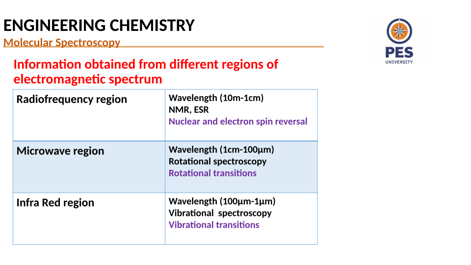
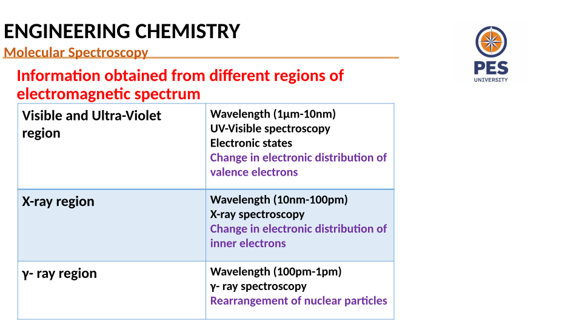
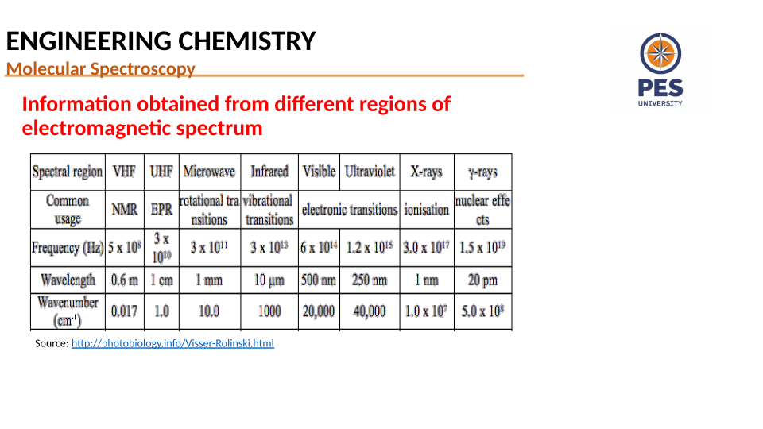

Important points and why
- Source slide page 1 (extracted text): ENGINEERING CHEMISTRY (UE26CY151 A,B) Department of Science and Humanities EV0000291 · EV0000292 · EV0000293
- Source slide page 2 (extracted text): ENGINEERING CHEMISTRY Molecular Spectroscopy Class 2 Content : Electromagnetic spectrum Information obtained from each region of the spectrum EV0000294 · EV0000295 · EV0000296
- Source slide page 3 (extracted text): ENGINEERING CHEMISTRY Molecular Spectroscopy Electromagnetic spectrum [Image text, OCR] Wavelengthinmeters(m) 10-16 10-14 10-12 10-10 10-8 10-6 10-4 10-2 1 10² 104 106 108 Gammarays Xrays UV IR Radiowaves Visiblelight 400 500 600 700 (violet) (red) Wavelengthin nanometers(nm) Source: https://www.radio2space.com/components-of-electromagnetic-spectrum/ EV0000297 · EV0000298 · EV0000299
- Source slide page 4 (extracted text): ENGINEERING CHEMISTRY Molecular Spectroscopy Information obtained from different regions of electromagnetic spectrum Radiofrequency region | Wavelength (10m-1cm) NMR, ESR Nuclear and electron spin reversal Microwave region | Wavelength (1cm-100µm) Rotational spectroscopy Rotational transitions Infra Red region | Wavelength (100µm-1µm) Vibrational spectroscopy Vibrational transitions EV0000300 · EV0000301 · EV0000302
- Source slide page 5 (extracted text): ENGINEERING CHEMISTRY Molecular Spectroscopy Information obtained from different regions of electromagnetic spectrum Visible and Ultra-Violet region | Wavelength (1µm-10nm) UV-Visible spectroscopy Electronic states Change in electronic distribution of valence electrons X-ray region | Wavelength (10nm-100pm) X-ray spectroscopy Change in electronic distribution of inner electrons γ- ray region | Wavelength (100pm-1pm) γ- ray spectroscopy Rearrangement of nuclear particles EV0000303 · EV0000304 · EV0000305
- Source slide page 6 (extracted text): ENGINEERING CHEMISTRY Molecular Spectroscopy Information obtained from different regions of electromagnetic spectrum [Image text, OCR] Spectral region VHF UHF Microwave Infrared Visible Ultraviolet X-rays Y-rays Common NMR EPR rotationaltra vibrational electronictransitions ionisation nucleareffe usage nsitions transitions cts Frequency (Hz)5x 108 3x 1010 3 x 1011 3 x 1013 6 x1014 1.2 x1015 3.0 x 1017 1.5 x 1019 Wavelength 0.6 m 1 cm 1 mm 10 μm 500 nm 250 nm 1 nm 20 pm Wavenumber (cm-') 0.017 1.0 10.0 1000 20,000 40,000 1.0 x 107 5.0 x 108 Singlephoton 2.07 x 1.24 x energy (eV) 106 104 1.24 x 103 1.24 x 10-1 2.5 5.0 1.24 x 103 6.2 x 10 Photonenergy 2.03 x 1.20 x 1.20 x 10-1 12.0 239 479 (kJ mol') 104 10 2 1.2 x 10s 6 x 106 Source: http://photobiology.info/Visser-Rolinski.html EV0000306 · EV0000307 · EV0000308
- Source slide page 7 (extracted text): THANK YOU Department of Science and Humanities EV0000309 · EV0000310 · EV0000311
4Rotational spectroscopy
This lesson is indexed from the source video titled Rotational spectroscopy. Its complete timestamped transcript is preserved below in segment order. The original video path and content hash are recorded in datasets/lecture-corpus.json. Transcript text is source wording; it has not been silently corrected or rewritten. A candidate slide deck is grouped here according to the current matching score; the exact path and page locators are listed in the source evidence. EV0000046 · EV0000047
Graphs and diagrams

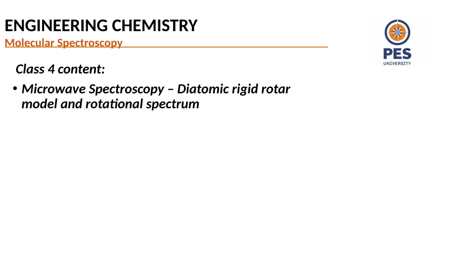
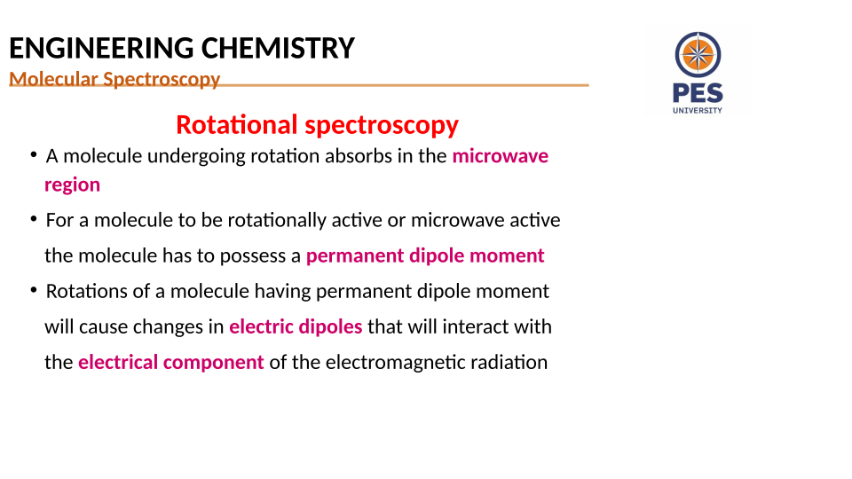
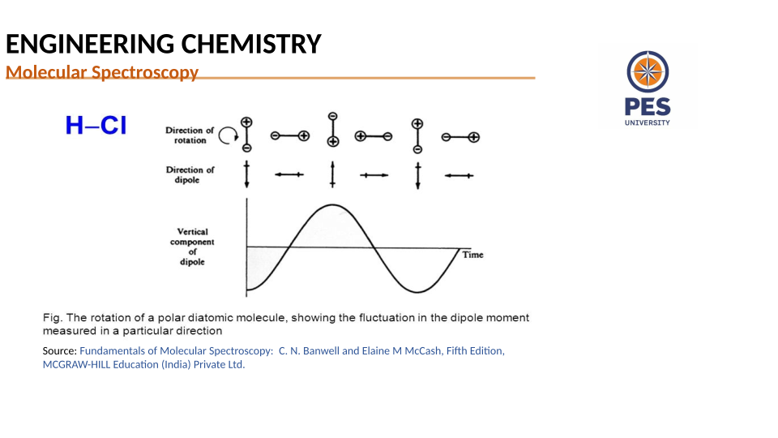
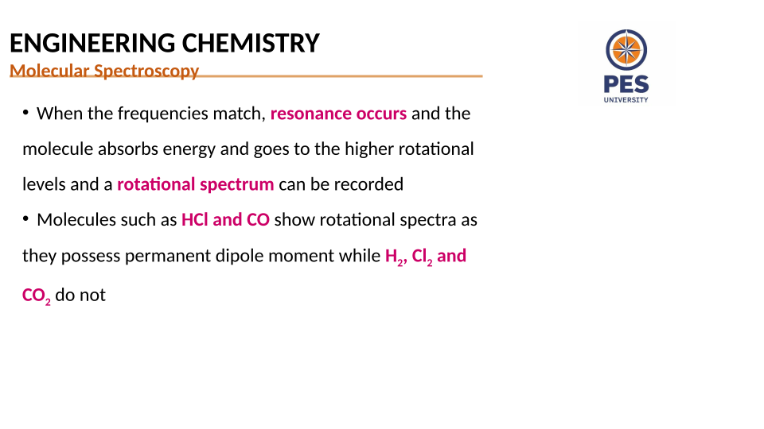
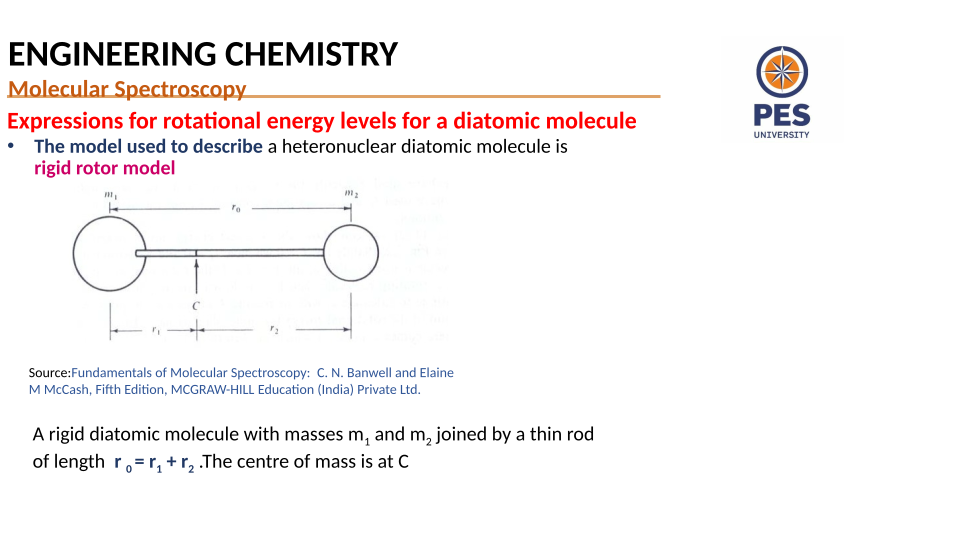
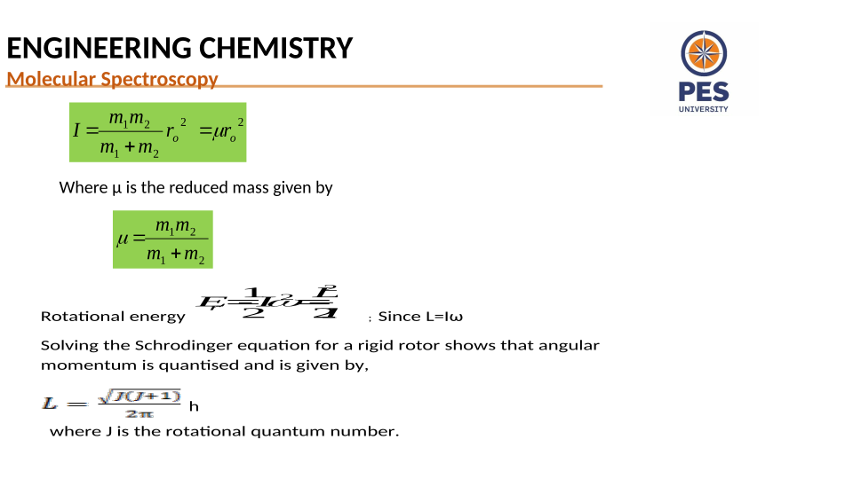
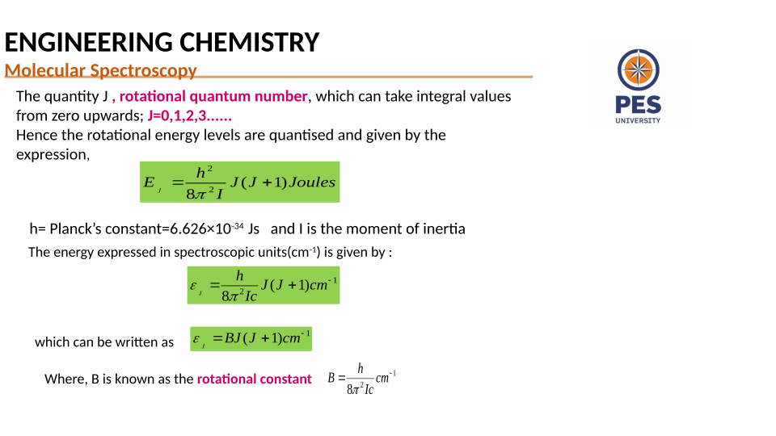
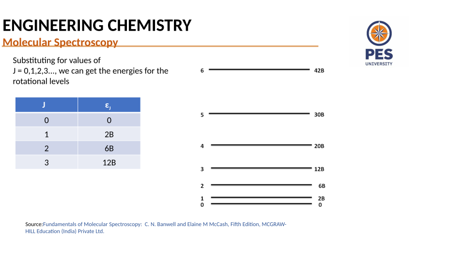
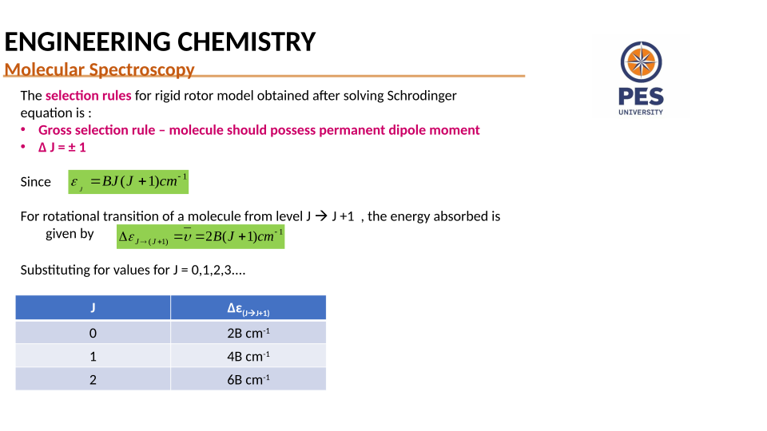
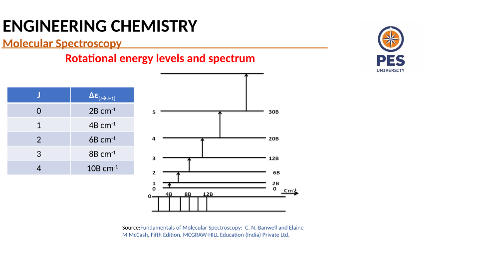
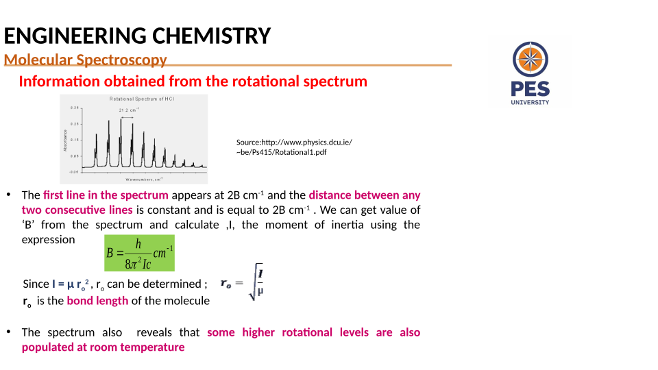

Important points and why
- Source slide page 1 (extracted text): ENGINEERING CHEMISTRY (UE26CY151 A,B) Department of Science and Humanities EV0000330 · EV0000331 · EV0000332
- Source slide page 2 (extracted text): ENGINEERING CHEMISTRY Molecular Spectroscopy Class 4 content: Microwave Spectroscopy – Diatomic rigid rotar model and rotational spectrum EV0000333 · EV0000334 · EV0000335
- Source slide page 3 (extracted text): ENGINEERING CHEMISTRY Molecular Spectroscopy Rotational spectroscopy A molecule undergoing rotation absorbs in the microwave region For a molecule to be rotationally active or microwave active the molecule has to possess a permanent dipole moment Rotations of a molecule having permanent dipole moment will cause changes in electric dipoles that will interact with the electrical component of the electromagnetic radiation EV0000336 · EV0000337 · EV0000338
- Source slide page 4 (extracted text): ENGINEERING CHEMISTRY Molecular Spectroscopy [Image text, OCR] Absorption of ElectromagneticRadiation-The Coupling Mechanism Anelectromagneticwaveis anoscillating electricalfield and interactsonlywithmolecules that can undergoa change in dipole moment The oscillating dipole can beprovided by the rotationof apermanent dipole like for example HCl.Thistypeofinteractionleadstomicrowavespectra H-CI Directionof rotation Directionof dipole Vertical component of Time dipole Fig.Therotationofapolardiatomicmolecule,showing thefluctuationinthedipolemoment measuredinaparticulardirection Source: Fundamentals of Molecular Spectroscopy: C. N. Banwell and Elaine M McCash, Fifth Edition, MCGRAW-HILL Education (India) Private Ltd. EV0000339 · EV0000340 · EV0000341
- Source slide page 5 (extracted text): ENGINEERING CHEMISTRY Molecular Spectroscopy When the frequencies match, resonance occurs and the molecule absorbs energy and goes to the higher rotational levels and a rotational spectrum can be recorded Molecules such as HCl and CO show rotational spectra as they possess permanent dipole moment while H2, Cl2 and CO2 do not EV0000342 · EV0000343 · EV0000344
- Source slide page 6 (extracted text): ENGINEERING CHEMISTRY Molecular Spectroscopy Expressions for rotational energy levels for a diatomic molecule The model used to describe a heteronuclear diatomic molecule is rigid rotor model [Image text, OCR] /111 12 ro Source:Fundamentals of Molecular Spectroscopy: C. N. Banwell and Elaine M McCash, Fifth Edition, MCGRAW-HILL Education (India) Private Ltd. A rigid diatomic molecule with masses m1 and m2 joined by a thin rod of length r 0 = r1 + r2 .The centre of mass is at C EV0000345 · EV0000346 · EV0000347
- Source slide page 7 (extracted text): ENGINEERING CHEMISTRY Molecular Spectroscopy Where μ is the reduced mass given by EV0000348 · EV0000349 · EV0000350
- Source slide page 8 (extracted text): ENGINEERING CHEMISTRY Molecular Spectroscopy The quantity J , rotational quantum number, which can take integral values from zero upwards; J=0,1,2,3...... Hence the rotational energy levels are quantised and given by the expression, h= Planck’s constant=6.626×10-34 Js and I is the moment of inertia The energy expressed in spectroscopic units(cm-1) is given by : which can be written as Where, B is known as the rotational constant EV0000351 · EV0000352 · EV0000353
- Source slide page 9 (extracted text): ENGINEERING CHEMISTRY Molecular Spectroscopy Substituting for values of J = 0,1,2,3..., we can get the energies for the rotational levels J | εJ 0 | 0 1 | 2B 2 | 6B 3 | 12B Source:Fundamentals of Molecular Spectroscopy: C. N. Banwell and Elaine M McCash, Fifth Edition, MCGRAW-HILL Education (India) Private Ltd. EV0000354 · EV0000355 · EV0000356
- Source slide page 10 (extracted text): ENGINEERING CHEMISTRY Molecular Spectroscopy The selection rules for rigid rotor model obtained after solving Schrodinger equation is : Gross selection rule – molecule should possess permanent dipole moment Δ J = ± 1 Since For rotational transition of a molecule from level J J +1 , the energy absorbed is given by Substituting for values for J = 0,1,2,3.... J | Δε(JJ+1) 0 | 2B cm-1 1 | 4B cm-1 2 | 6B cm-1 EV0000357 · EV0000358 · EV0000359
- Source slide page 11 (extracted text): ENGINEERING CHEMISTRY Molecular Spectroscopy Rotational energy levels and spectrum J | Δε(JJ+1) 0 | 2B cm-1 1 | 4B cm-1 2 | 6B cm-1 3 | 8B cm-1 4 | 10B cm-1 Source:Fundamentals of Molecular Spectroscopy: C. N. Banwell and Elaine M McCash, Fifth Edition, MCGRAW-HILL Education (India) Private Ltd. EV0000360 · EV0000361 · EV0000362
- Source slide page 12 (extracted text): ENGINEERING CHEMISTRY Molecular Spectroscopy Information obtained from the rotational spectrum Source:http://www.physics.dcu.ie/~be/Ps415/Rotational1.pdf The first line in the spectrum appears at 2B cm-1 and the distance between any two consecutive lines is constant and is equal to 2B cm-1 . We can get value of ‘B’ from the spectrum and calculate ,I, the moment of inertia using the expression Since I = µ ro2 , ro can be determined ; ro is the bond length of the molecule The spectrum also reveals that some higher rotational levels are also populated at room temperature EV0000363 · EV0000364 · EV0000365
- Source slide page 13 (extracted text): THANK YOU Department of Science and Humanities EV0000366 · EV0000367 · EV0000368
5Vibrational spectroscopy(harmonic oscillator)
This lesson is indexed from the source video titled Vibrational spectroscopy(harmonic oscillator). Its complete timestamped transcript is preserved below in segment order. The original video path and content hash are recorded in datasets/lecture-corpus.json. Transcript text is source wording; it has not been silently corrected or rewritten. A candidate slide deck is grouped here according to the current matching score; the exact path and page locators are listed in the source evidence. EV0000066 · EV0000067
Graphs and diagrams

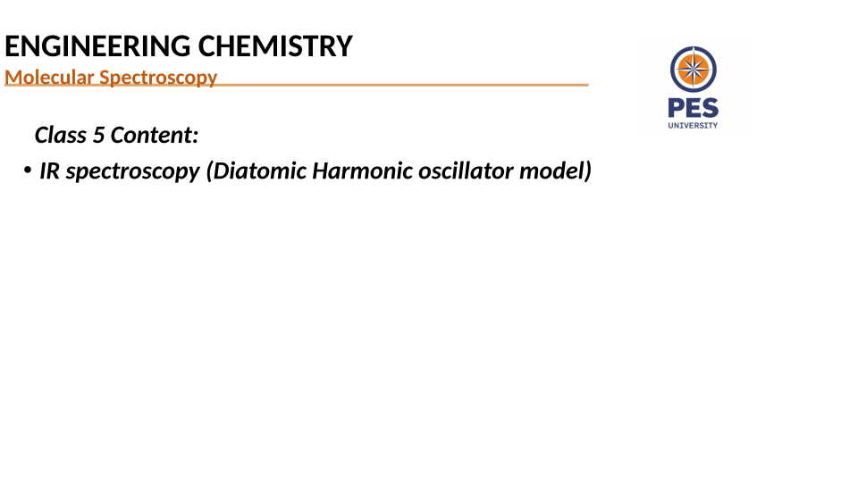
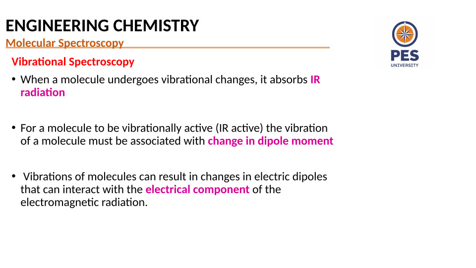
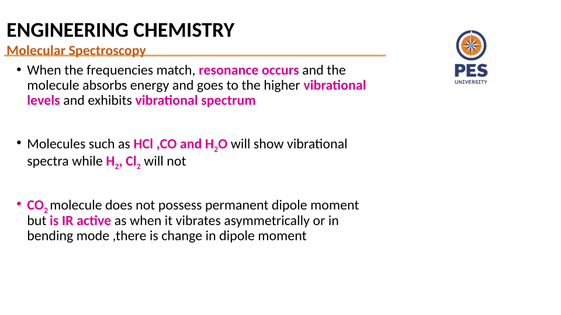
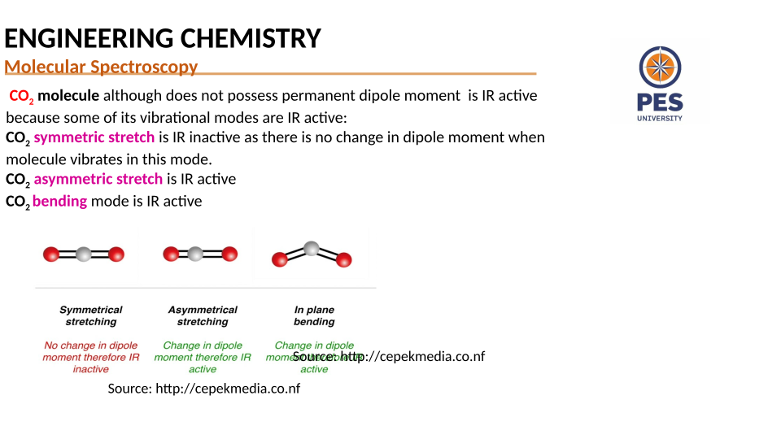
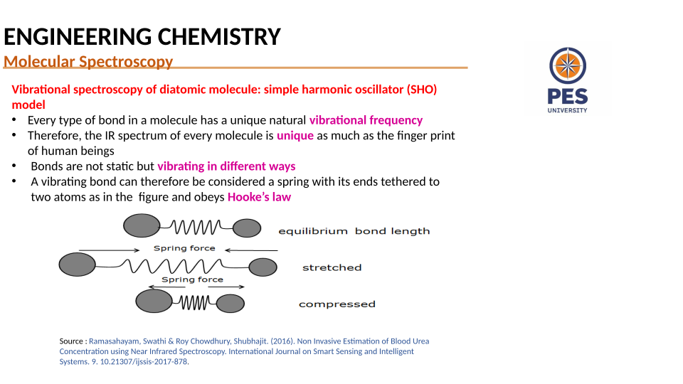
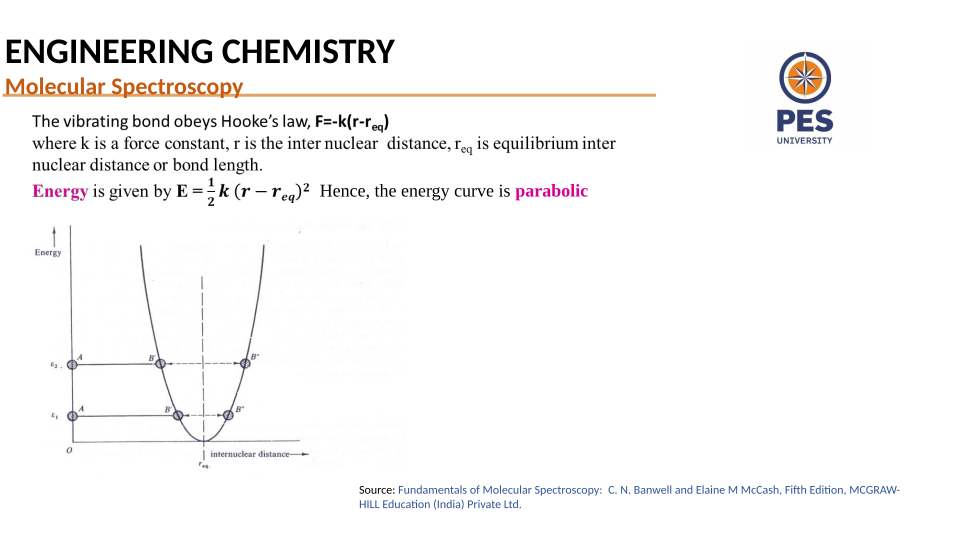
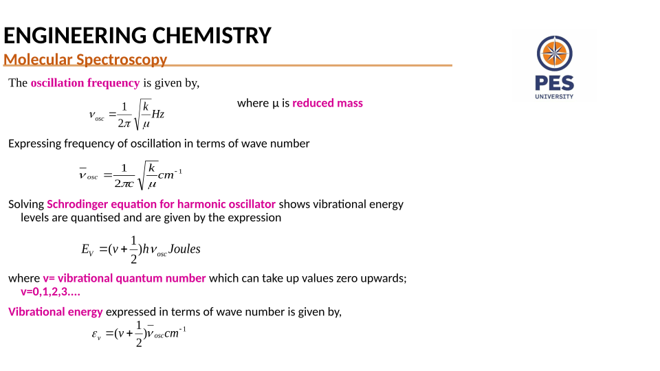
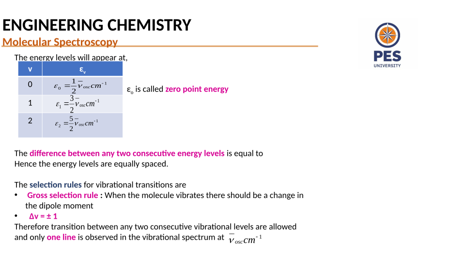
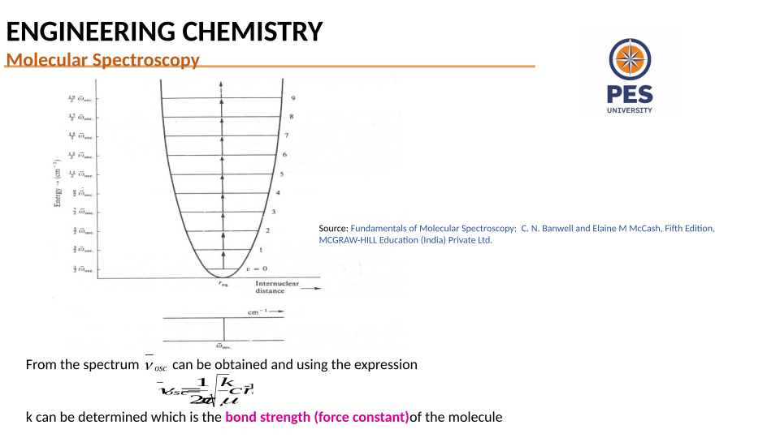
Important points and why
- Source slide page 1 (extracted text): ENGINEERING CHEMISTRY (UE26CY151 A,B) Department of Science and Humanities EV0000369 · EV0000370 · EV0000371
- Source slide page 2 (extracted text): ENGINEERING CHEMISTRY Molecular Spectroscopy Class 5 Content: IR spectroscopy (Diatomic Harmonic oscillator model) EV0000372 · EV0000373 · EV0000374
- Source slide page 3 (extracted text): ENGINEERING CHEMISTRY Molecular Spectroscopy Vibrational Spectroscopy When a molecule undergoes vibrational changes, it absorbs IR radiation For a molecule to be vibrationally active (IR active) the vibration of a molecule must be associated with change in dipole moment Vibrations of molecules can result in changes in electric dipoles that can interact with the electrical component of the electromagnetic radiation. EV0000375 · EV0000376 · EV0000377
- Source slide page 4 (extracted text): ENGINEERING CHEMISTRY Molecular Spectroscopy When the frequencies match, resonance occurs and the molecule absorbs energy and goes to the higher vibrational levels and exhibits vibrational spectrum Molecules such as HCl ,CO and H2O will show vibrational spectra while H2, Cl2 will not CO2 molecule does not possess permanent dipole moment but is IR active as when it vibrates asymmetrically or in bending mode ,there is change in dipole moment EV0000378 · EV0000379 · EV0000380
- Source slide page 5 (extracted text): ENGINEERING CHEMISTRY Molecular Spectroscopy CO2 molecule although does not possess permanent dipole moment is IR active because some of its vibrational modes are IR active: CO2 symmetric stretch is IR inactive as there is no change in dipole moment when molecule vibrates in this mode. CO2 asymmetric stretch is IR active CO2 bending mode is IR active [Image text, OCR] Spectroscopy Symmetrical Asymmetrical In plane Out of plane stretching stretching bending bending Nochangeindipole Changeindipole Changeindipole Change in dipole momentthereforeIR momentthereforeIR momentthereforeIR momentth inactive active active Change in No changein No change in polarisabilitythereforepolarisabilitythereforepolarisabilitytherefore Ramanactive. Ramaninactive. Ramaninactive. Source: http://cepekmedia.co.nf Source: http://cepekmedia.co.nf EV0000381 · EV0000382 · EV0000383
- Source slide page 6 (extracted text): ENGINEERING CHEMISTRY Molecular Spectroscopy Vibrational spectroscopy of diatomic molecule: simple harmonic oscillator (SHO) model Every type of bond in a molecule has a unique natural vibrational frequency Therefore, the IR spectrum of every molecule is unique as much as the finger print of human beings Bonds are not static but vibrating in different ways A vibrating bond can therefore be considered a spring with its ends tethered to two atoms as in the figure and obeys Hooke’s law [Image text, OCR] WWO equilibrium bond length Spring force stretched Spring force WW compressed Source : Ramasahayam, Swathi & Roy Chowdhury, Shubhajit. (2016). Non Invasive Estimation of Blood Urea Concentration using Near Infrared Spectroscopy. International Journal on Smart Sensing and Intelligent Systems. 9. 10.21307/ijssis-2017-878. EV0000384 · EV0000385 · EV0000386
- Source slide page 7 (extracted text): ENGINEERING CHEMISTRY Molecular Spectroscopy Hence, the energy curve is parabolic [Image text, OCR] Energy internucleardistance- Figure3.1Parabolic curve ofenergyplotted against the extension or compression of a spring obeyingHooke'slaw. Source: Fundamentals of Molecular Spectroscopy: C. N. Banwell and Elaine M McCash, Fifth Edition, MCGRAW-HILL Education (India) Private Ltd. EV0000387 · EV0000388 · EV0000389
- Source slide page 8 (extracted text): ENGINEERING CHEMISTRY Molecular Spectroscopy The oscillation frequency is given by, where μ is reduced mass Expressing frequency of oscillation in terms of wave number Solving Schrodinger equation for harmonic oscillator shows vibrational energy levels are quantised and are given by the expression where v= vibrational quantum number which can take up values zero upwards; v=0,1,2,3.... Vibrational energy expressed in terms of wave number is given by, EV0000390 · EV0000391 · EV0000392
- Source slide page 9 (extracted text): ENGINEERING CHEMISTRY Molecular Spectroscopy The energy levels will appear at, εo is called zero point energy The difference between any two consecutive energy levels is equal to Hence the energy levels are equally spaced. The selection rules for vibrational transitions are Gross selection rule : When the molecule vibrates there should be a change in the dipole moment Δv = ± 1 Therefore transition between any two consecutive vibrational levels are allowed and only one line is observed in the vibrational spectrum at v | εv 0 | 1 | 2 | EV0000393 · EV0000394 · EV0000395
- Source slide page 10 (extracted text): ENGINEERING CHEMISTRY Molecular Spectroscopy [Image text, OCR] 8 6 osc. ↑ @ose. ose. oe ose. Internuclear distance cm @ose. Source: Fundamentals of Molecular Spectroscopy: C. N. Banwell and Elaine M McCash, Fifth Edition, MCGRAW-HILL Education (India) Private Ltd. From the spectrum can be obtained and using the expression k can be determined which is the bond strength (force constant)of the molecule EV0000396 · EV0000397 · EV0000398
- Source slide page 11 (extracted text): THANK YOU Department of Science and Humanities EV0000399 · EV0000400 · EV0000401
6Vibrational spectroscopy(anharmonic oscillator)
This lesson is indexed from the source video titled Vibrational spectroscopy(anharmonic oscillator). Its complete timestamped transcript is preserved below in segment order. The original video path and content hash are recorded in datasets/lecture-corpus.json. Transcript text is source wording; it has not been silently corrected or rewritten. A candidate slide deck is grouped here according to the current matching score; the exact path and page locators are listed in the source evidence. EV0000090 · EV0000091
Graphs and diagrams

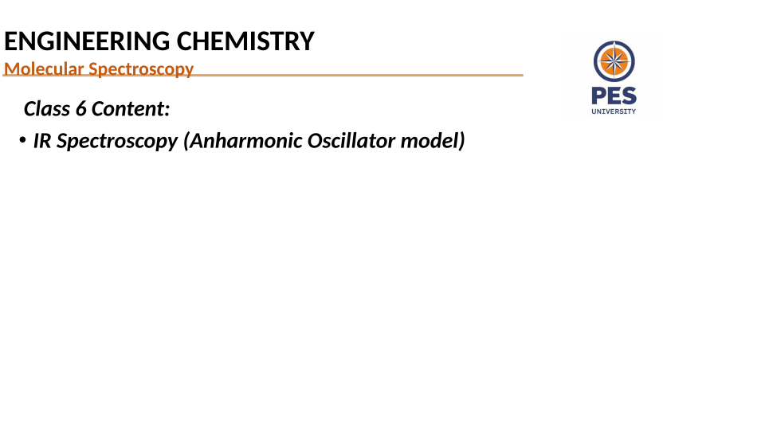
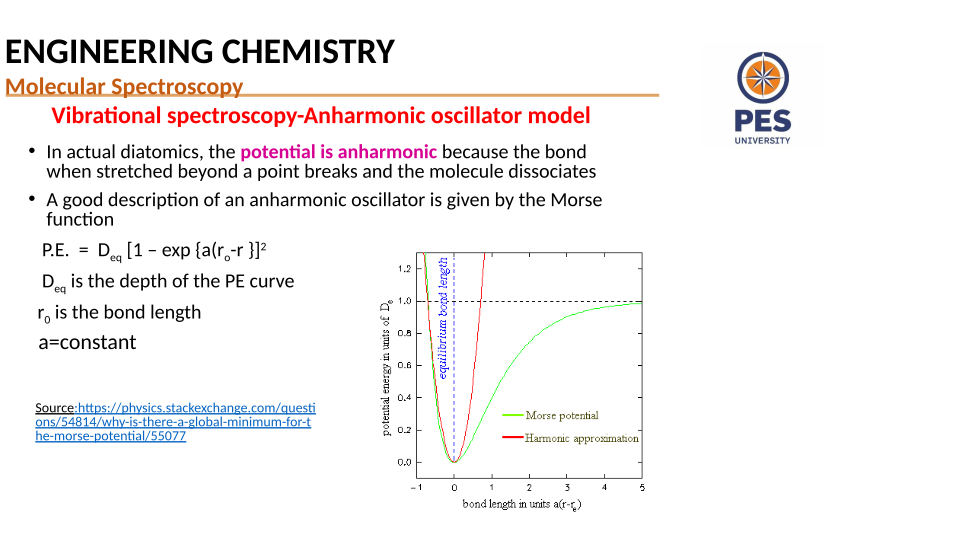
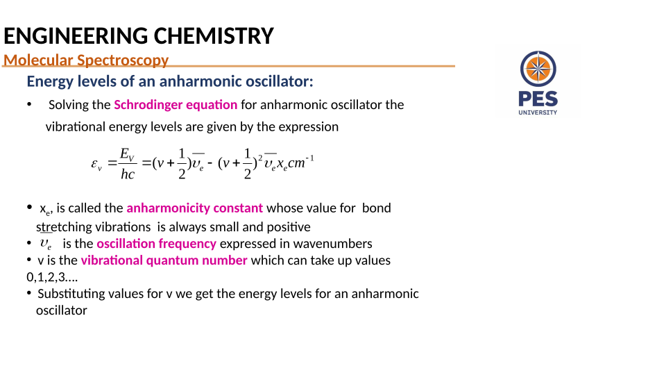
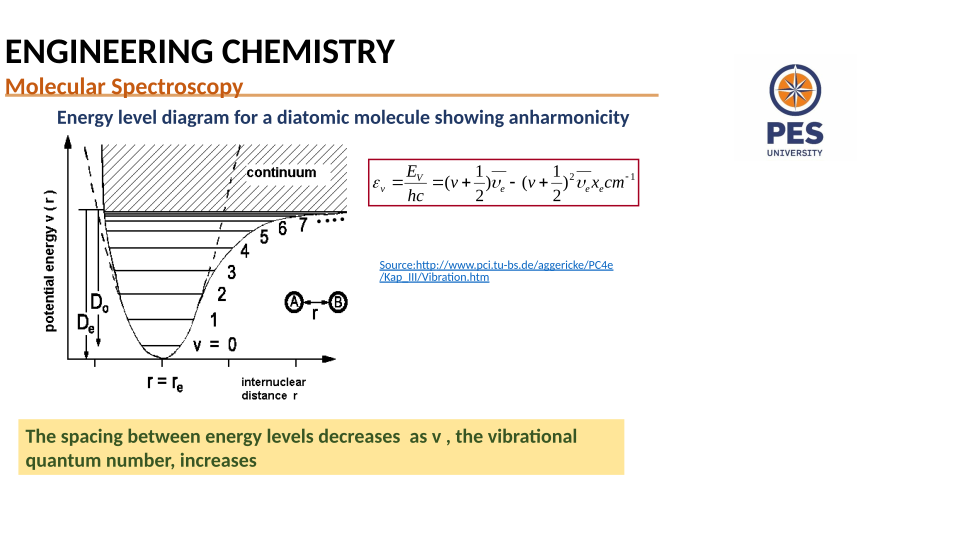
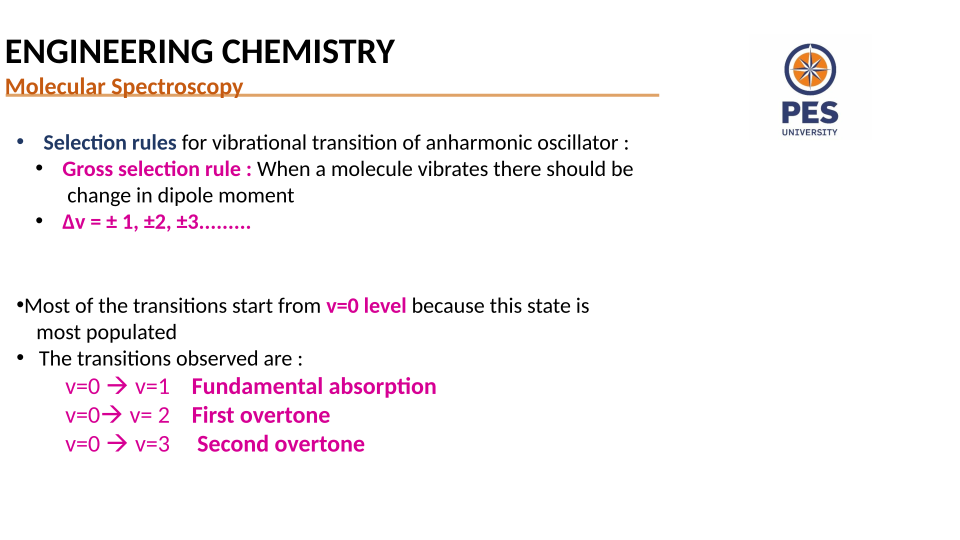
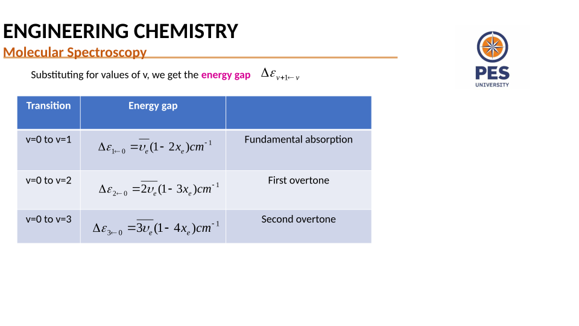
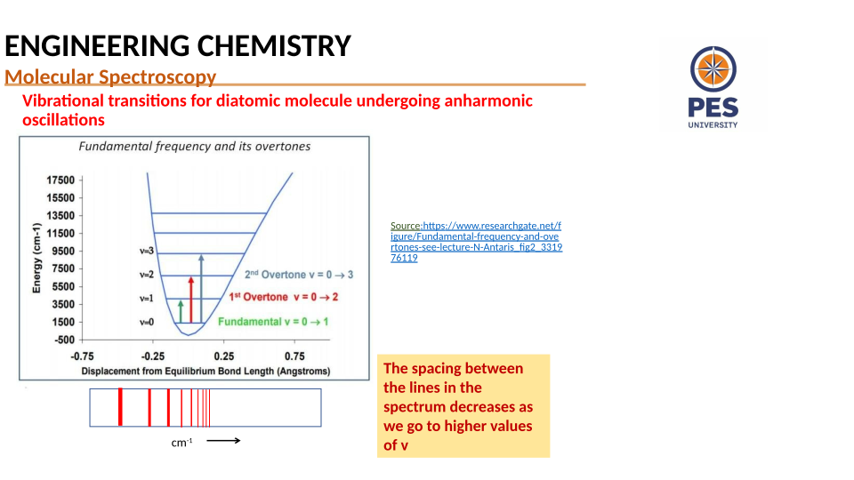
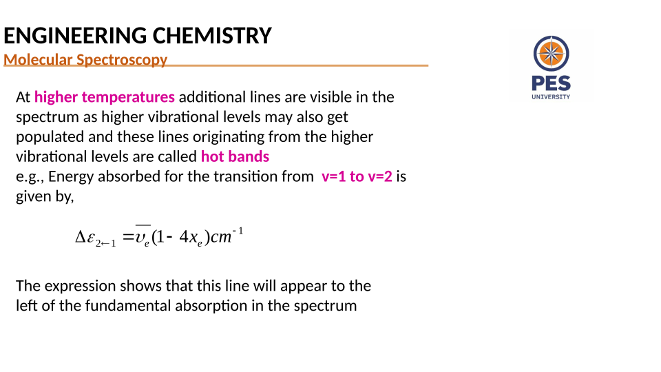

Important points and why
- Source slide page 1 (extracted text): ENGINEERING CHEMISTRY (UE26CY151 A,B) Department of Science and Humanities EV0000402 · EV0000403 · EV0000404
- Source slide page 2 (extracted text): ENGINEERING CHEMISTRY Molecular Spectroscopy Class 6 Content: IR Spectroscopy (Anharmonic Oscillator model) EV0000405 · EV0000406 · EV0000407
- Source slide page 3 (extracted text): ENGINEERING CHEMISTRY Molecular Spectroscopy In actual diatomics, the potential is anharmonic because the bond when stretched beyond a point breaks and the molecule dissociates A good description of an anharmonic oscillator is given by the Morse function P.E. = Deq [1 – exp {a(ro-r }]2 Deq is the depth of the PE curve r0 is the bond length a=constant Vibrational spectroscopy-Anharmonic oscillator model [Image text, OCR] 1.2 日 1.0 s 0.8 0.6 0.4 Morse potential 0.2 Harmonic approximation 0.0 0 1 2 M1 4 5 bond length in units a(r-r) @O.S.Smart, 1995 Source:https://physics.stackexchange.com/questions/54814/why-is-there-a-global-minimum-for-the-morse-potential/55077 EV0000408 · EV0000409 · EV0000410
- Source slide page 4 (extracted text): ENGINEERING CHEMISTRY Molecular Spectroscopy Energy levels of an anharmonic oscillator: Solving the Schrodinger equation for anharmonic oscillator the vibrational energy levels are given by the expression xe, is called the anharmonicity constant whose value for bond stretching vibrations is always small and positive is the oscillation frequency expressed in wavenumbers v is the vibrational quantum number which can take up values 0,1,2,3…. Substituting values for v we get the energy levels for an anharmonic oscillator EV0000411 · EV0000412 · EV0000413
- Source slide page 5 (extracted text): ENGINEERING CHEMISTRY Molecular Spectroscopy Energy level diagram for a diatomic molecule showing anharmonicity [Image text, OCR] continuum ( ) a Abaua eualod 5 4 3 2 D 1 V 0 [=le internuclear distancer Source:http://www.pci.tu-bs.de/aggericke/PC4e/Kap_III/Vibration.htm The spacing between energy levels decreases as v , the vibrational quantum number, increases EV0000414 · EV0000415 · EV0000416
- Source slide page 6 (extracted text): ENGINEERING CHEMISTRY Molecular Spectroscopy Selection rules for vibrational transition of anharmonic oscillator : Gross selection rule : When a molecule vibrates there should be change in dipole moment Δv = ± 1, ±2, ±3......... Most of the transitions start from v=0 level because this state is most populated The transitions observed are : v=0 v=1 Fundamental absorption v=0 v= 2 First overtone v=0 v=3 Second overtone EV0000417 · EV0000418 · EV0000419
- Source slide page 7 (extracted text): ENGINEERING CHEMISTRY Molecular Spectroscopy Substituting for values of v, we get the energy gap Transition | Energy gap | v=0 to v=1 | | Fundamental absorption v=0 to v=2 | | First overtone v=0 to v=3 | | Second overtone EV0000420 · EV0000421 · EV0000422
- Source slide page 8 (extracted text): ENGINEERING CHEMISTRY Molecular Spectroscopy Vibrational transitions for diatomic molecule undergoing anharmonic oscillations [Image text, OCR] Fundamentalfrequencyanditsovertones 17500 15500 13500 11500 9500 v=3 7500 v=2 2ndOvertonev=0→3 5500 V=1 1stOvertonev=0→2 3500 1500 v=0 Fundamentalv=0→1 -500 -0.75 -0.25 0.25 0.75 DisplacementfromEquilibrium BondLength(Angstroms) Source:https://www.researchgate.net/figure/Fundamental-frequency-and-overtones-see-lecture-N-Antaris_fig2_331976119 The spacing between the lines in the spectrum decreases as we go to higher values of v cm-1 EV0000423 · EV0000424 · EV0000425
- Source slide page 9 (extracted text): ENGINEERING CHEMISTRY Molecular Spectroscopy At higher temperatures additional lines are visible in the spectrum as higher vibrational levels may also get populated and these lines originating from the higher vibrational levels are called hot bands e.g., Energy absorbed for the transition from v=1 to v=2 is given by, The expression shows that this line will appear to the left of the fundamental absorption in the spectrum EV0000426 · EV0000427 · EV0000428
- Source slide page 10 (extracted text): THANK YOU Department of Science and Humanities EV0000429 · EV0000430 · EV0000431
7Electronic spectroscopy - Franck-Condon principle (Part II)
This lesson is indexed from the source video titled Electronic spectroscopy - Franck-Condon principle (Part II). Its complete timestamped transcript is preserved below in segment order. The original video path and content hash are recorded in datasets/lecture-corpus.json. Transcript text is source wording; it has not been silently corrected or rewritten. A candidate slide deck is grouped here according to the current matching score; the exact path and page locators are listed in the source evidence. EV0000110 · EV0000111
Graphs and diagrams

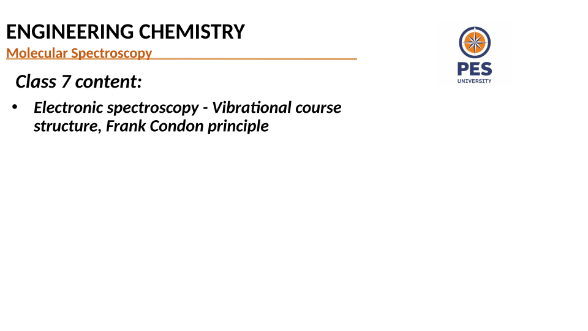
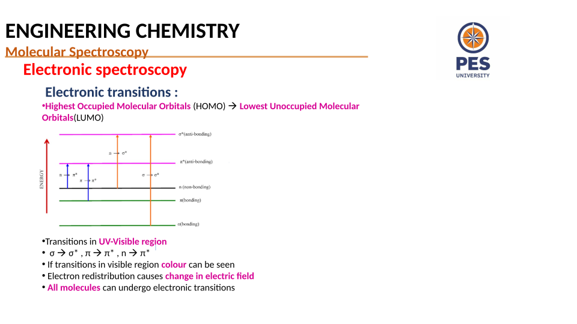
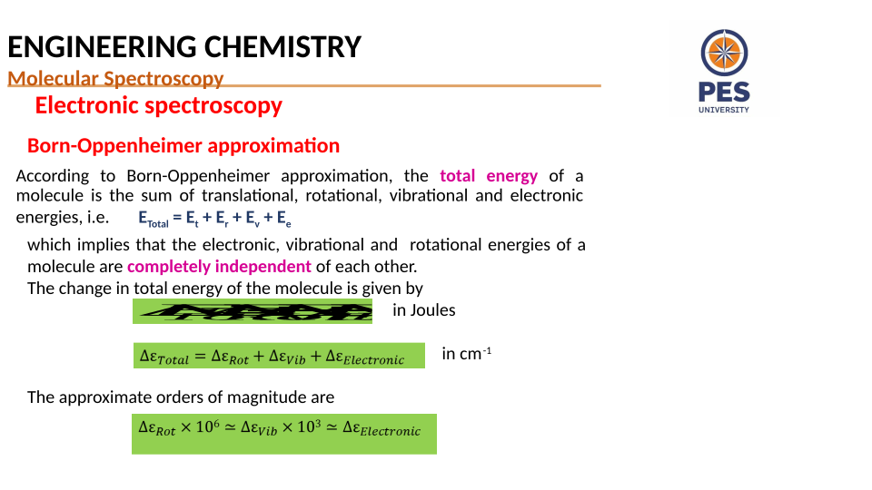
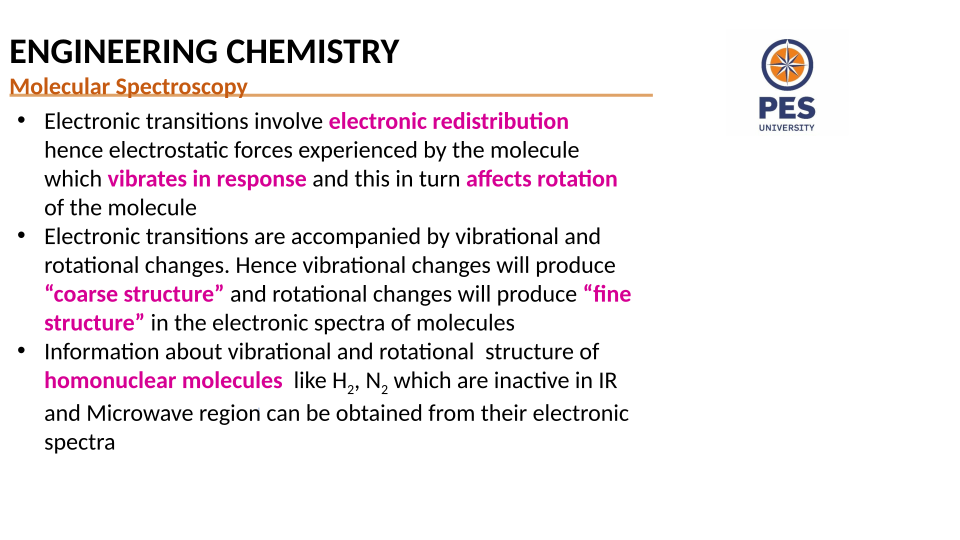
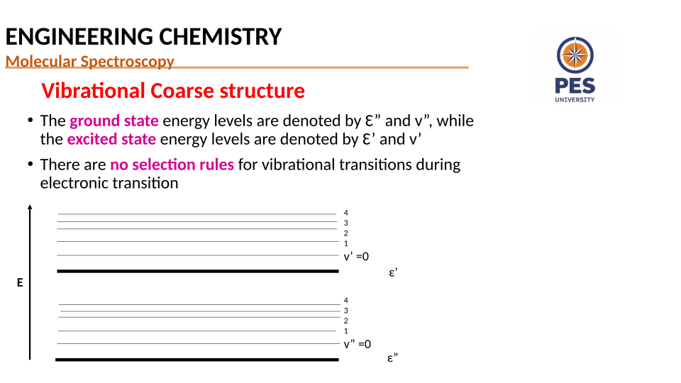
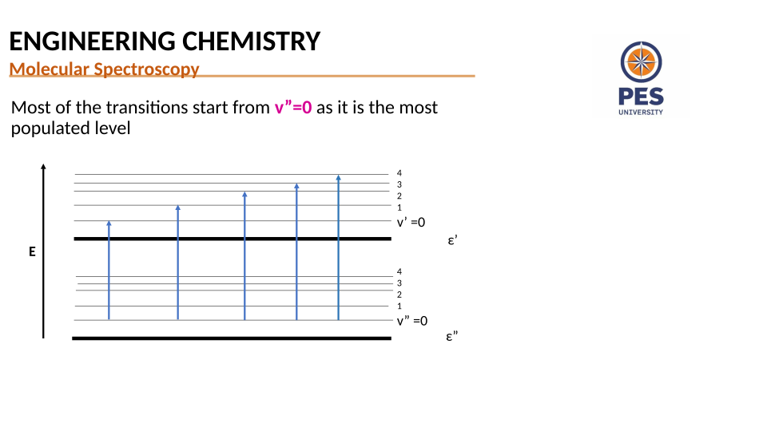
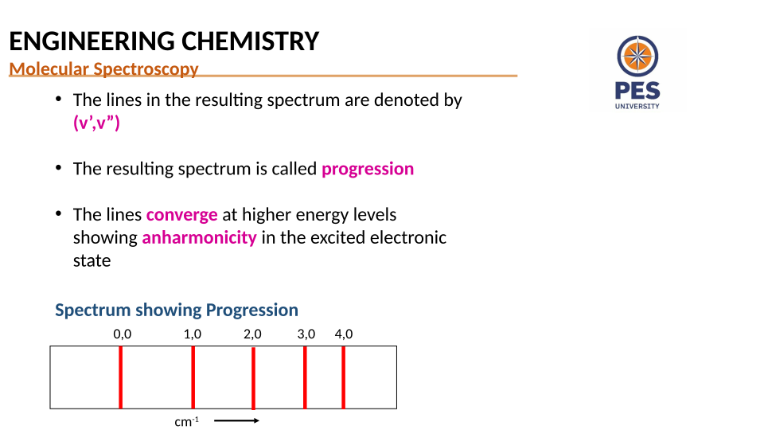
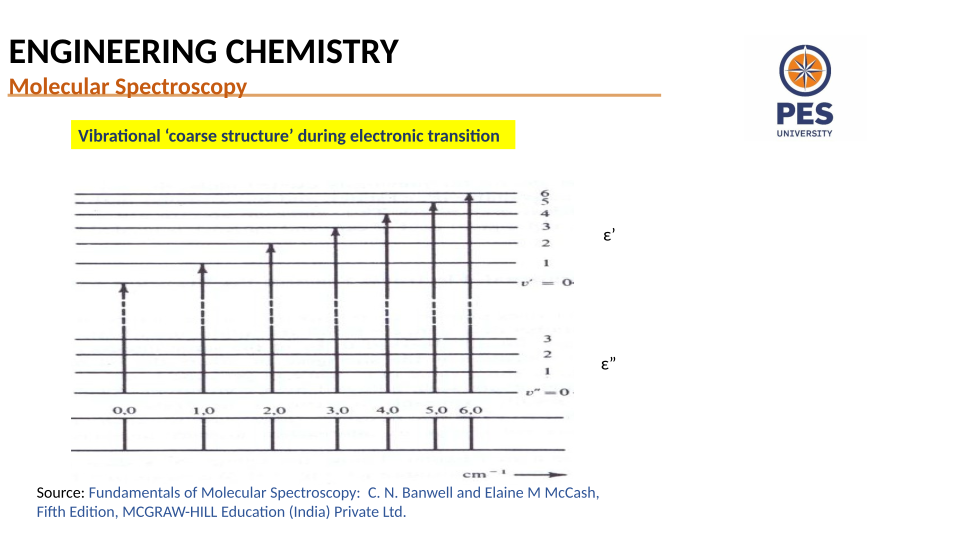

Important points and why
- Source slide page 1 (extracted text): ENGINEERING CHEMISTRY (UE26CY151 A,B) Department of Science and Humanities EV0000432 · EV0000433 · EV0000434
- Source slide page 2 (extracted text): ENGINEERING CHEMISTRY Molecular Spectroscopy Class 7 content: Electronic spectroscopy - Vibrational course structure, Frank Condon principle EV0000435 · EV0000436 · EV0000437
- Source slide page 3 (extracted text): ENGINEERING CHEMISTRY Molecular Spectroscopy Electronic spectroscopy Electronic transitions : Highest Occupied Molecular Orbitals (HOMO) Lowest Unoccupied Molecular Orbitals(LUMO) Transitions in UV-Visible region σ σ* , π π* , n π* If transitions in visible region colour can be seen Electron redistribution causes change in electric field All molecules can undergo electronic transitions [Image text, OCR] *(anti-bonding) π*(anti-bonding) π* ππ* n(non-bonding) π(bonding) o(bonding) EV0000438 · EV0000439 · EV0000440
- Source slide page 4 (extracted text): ENGINEERING CHEMISTRY Molecular Spectroscopy Electronic spectroscopy Born-Oppenheimer approximation According to Born-Oppenheimer approximation, the total energy of a molecule is the sum of translational, rotational, vibrational and electronic energies, i.e. ETotal = Et + Er + Ev + Ee which implies that the electronic, vibrational and rotational energies of a molecule are completely independent of each other. The change in total energy of the molecule is given by in Joules in cm-1 The approximate orders of magnitude are EV0000441 · EV0000442 · EV0000443
- Source slide page 5 (extracted text): ENGINEERING CHEMISTRY Molecular Spectroscopy Electronic transitions involve electronic redistribution hence electrostatic forces experienced by the molecule which vibrates in response and this in turn affects rotation of the molecule Electronic transitions are accompanied by vibrational and rotational changes. Hence vibrational changes will produce “coarse structure” and rotational changes will produce “fine structure” in the electronic spectra of molecules Information about vibrational and rotational structure of homonuclear molecules like H2, N2 which are inactive in IR and Microwave region can be obtained from their electronic spectra EV0000444 · EV0000445 · EV0000446
- Source slide page 6 (extracted text): ENGINEERING CHEMISTRY Molecular Spectroscopy Vibrational Coarse structure The ground state energy levels are denoted by Ɛ” and v”, while the excited state energy levels are denoted by Ɛ’ and v’ There are no selection rules for vibrational transitions during electronic transition ε” ε’ 4 3 2 1 v” =0 4 3 2 1 v’ =0 E EV0000447 · EV0000448 · EV0000449
- Source slide page 7 (extracted text): ENGINEERING CHEMISTRY Molecular Spectroscopy Most of the transitions start from v”=0 as it is the most populated level ε” ε’ 4 3 2 1 v” =0 4 3 2 1 v’ =0 E EV0000450 · EV0000451 · EV0000452
- Source slide page 8 (extracted text): ENGINEERING CHEMISTRY Molecular Spectroscopy The lines in the resulting spectrum are denoted by (v’,v”) The resulting spectrum is called progression The lines converge at higher energy levels showing anharmonicity in the excited electronic state Spectrum showing Progression 0,0 1,0 2,0 3,0 4,0 cm-1 EV0000453 · EV0000454 · EV0000455
- Source slide page 9 (extracted text): ENGINEERING CHEMISTRY Molecular Spectroscopy Vibrational ‘coarse structure’ during electronic transition [Image text, OCR] 65 4 2 u"=0 0.0 1,0 2,0 3,0 4,0 5,06.0 cm-1 Figure 6.1Thevibrational‘coarse'structureof theband formed duringelectronicabsorption from theground(u"=O)statetoahigherstate. ε’ ε” Source: Fundamentals of Molecular Spectroscopy: C. N. Banwell and Elaine M McCash, Fifth Edition, MCGRAW-HILL Education (India) Private Ltd. EV0000456 · EV0000457 · EV0000458
- Source slide page 10 (extracted text): ENGINEERING CHEMISTRY Molecular Spectroscopy Electronic spectroscopy Intensity of spectral lines There are no selection rules for vibrational changes during an electronic transition Most of the transitions start from v”=0 as it is most populated level The excited state usually has longer internuclear distance because of antibonding character E r ε” ε’ v”=0 v’=0 1 2 3 4 1 2 3 EV0000459 · EV0000460 · EV0000461
- Source slide page 11 (extracted text): ENGINEERING CHEMISTRY Molecular Spectroscopy The transitions arise from the centre of v”=0 because the maximum probability of finding the nuclei is at the centre of v”=0 [Image text, OCR] Energy Internucleardistance Figure 6.2Theprobability distributionfor a diatomicmolecule accordingto thequantum theory.The nuclei are most likely to be found at distances apart given by the maxima of the curveforeachvibrationalstate. Source:Fundamentals of Molecular Spectroscopy: C. N. Banwell and Elaine M McCash, Fifth Edition, MCGRAW-HILL Education (India) Private Ltd. Probability distribution for a diatomic molecule according to quantum theory EV0000462 · EV0000463 · EV0000464
- Source slide page 12 (extracted text): ENGINEERING CHEMISTRY Molecular Spectroscopy Energy level diagram for a diatomic molecule [Image text, OCR] Electronic transition Excitedelectronic (in optical state. or uv) dissoclation energy Groundstate Vibrational Rotational transition transition (in infrared) (inmicrowave) Internuclearseparation Source: http://hyperphysics.phy-astr.gsu.edu/hbase/molecule/molec.html EV0000465 · EV0000466 · EV0000467
- Source slide page 13 (extracted text): ENGINEERING CHEMISTRY Molecular Spectroscopy Franck-Condon principle All lines in the spectra are not of the same intensity though no selection rule for vibrational transitions exist Statement of Franck Condon principle: “An electronic transition takes place so rapidly that a vibrating molecule does not change its internuclear distance appreciably during the transition” This implies that the electronic transitions are always vertical transitions E r ε” ε’ v”=0 v’=0 1 2 3 4 1 2 3 EV0000468 · EV0000469 · EV0000470
- Source slide page 14 (extracted text): ENGINEERING CHEMISTRY Molecular Spectroscopy [Image text, OCR] Energy 0.01.02.03.0 0.01,02,03.0 tinuum cm cm cm (a) (b) (c) Figure 6.3 The operation of theFranck-Condon principle for(a) internuclear distances equal inupper and lower states,(b)upper-state internuclear distance a littlegreater than thatin the lower state,and(c)upper-state distance considerably greater. re” and re’ are the internuclear distances of the ground and excited states respectively Three possibilities of vibrational - electronic transitions exist Internuclear distance of excited state is more than than that of ground state re” < re’ The spectrum shows maximum intensity for (v’,0) line where v’ is the vibrational level in the excited state to which electronic transition takes place Source:Fundamentals of Molecular Spectroscopy: C. N. Banwell and Elaine M McCash, Fifth Edition, MCGRAW-HILL Education (India) Private Ltd. EV0000471 · EV0000472 · EV0000473
- Source slide page 15 (extracted text): ENGINEERING CHEMISTRY Molecular Spectroscopy No change in internuclear distance re”= re’ The spectrum shows maximum intensity for (0,0) line and intensity falls for the remaining lines [Image text, OCR] Energy 0.01.02.03.0 0.01,02,03.0 tinuum cm cm cm (a) (b) (c) Figure 6.3 The operation of theFranck-Condon principle for(a) internuclear distances equal inupper and lower states,(b)upper-state internuclear distance a littlegreater than thatin the lower state,and(c)upper-state distance considerably greater. Source:Fundamentals of Molecular Spectroscopy: C. N. Banwell and Elaine M McCash, Fifth Edition, MCGRAW-HILL Education (India) Private Ltd. EV0000474 · EV0000475 · EV0000476
- Source slide page 16 (extracted text): ENGINEERING CHEMISTRY Molecular Spectroscopy Internuclear distance of excited state is considerably greater than than that of ground state re” << re’ The spectrum shows continuum since the transition results in the molecule going beyond dissociation energy. The molecule dissociates into atoms which gain kinetic energy. Since this energy is not quantised a continuum is seen in the spectrum Source:Fundamentals of Molecular Spectroscopy: C. N. Banwell and Elaine M McCash, Fifth Edition, MCGRAW-HILL Education (India) Private Ltd. EV0000477 · EV0000478 · EV0000479
- Source slide page 17 (extracted text): THANK YOU Department of Science and Humanities EV0000480 · EV0000481 · EV0000482
8Electronic spectroscopy(Progression)
This lesson is indexed from the source video titled Electronic spectroscopy(Progression). Its complete timestamped transcript is preserved below in segment order. The original video path and content hash are recorded in datasets/lecture-corpus.json. Transcript text is source wording; it has not been silently corrected or rewritten. A candidate slide deck is grouped here according to the current matching score; the exact path and page locators are listed in the source evidence. EV0000126 · EV0000127
9Phase, Component, Degrees of freedom, Statement of Gibb’s phase rule, chemical potential
This lesson is indexed from the source video titled Phase, Component, Degrees of freedom, Statement of Gibb’s phase rule, chemical potential. Its complete timestamped transcript is preserved below in segment order. The original video path and content hash are recorded in datasets/lecture-corpus.json. Transcript text is source wording; it has not been silently corrected or rewritten. A candidate slide deck is grouped here according to the current matching score; the exact path and page locators are listed in the source evidence. EV0000146 · EV0000147
Graphs and diagrams
Important points and why
- Source slide page 1 (extracted text): ENGINEERING CHEMISTRY (UE26CY151 A,B) Department of Science and Humanities EV0000483 · EV0000484 · EV0000485
- Source slide page 2 (extracted text): ENGINEERING CHEMISTRY Phase equilibria Class 8 content: Phase, Component, Degrees of freedom, Statement of Gibb’s phase rule, chemical potential EV0000486 · EV0000487 · EV0000488
- Source slide page 3 (extracted text): ENGINEERING CHEMISTRY Phase equilibria Free energy in Phase equilibria All substances have tendency to minimize their Gibbs energy at constant temperature and pressure to attain stable state At phase equilibrium, the Gibbs free energy of the coexisting phases is the same; therefore, no net phase transformation occurs. A system is in stable equilibrium when its Gibbs free energy is at a minimum under the given conditions of temperature and pressure. Phase transformations from one phase to another occur to reduce free energy of the system Changes in temperature or pressure alter the Gibbs free energy of each phase, which may shift the equilibrium and induce a phase transformation Gibb’s energy is an extensive property EV0000489 · EV0000490 · EV0000491
- Source slide page 4 (extracted text): ENGINEERING CHEMISTRY Phase equilibria Phase A phase is defined as any homogeneous and physically distinct part of a system bounded by a surface and is mechanically separable from other parts of the system. It is denoted by P • Gaseous state : P =1 gases are completely miscible • Liquid state : P = No. of layers when liquids are immiscible P = 1 when liquids are completely miscible • Solid state : Each solid constitutes a separate phase Each polymorphic form constitutes a separate phase P = 1 for solid solution EV0000492 · EV0000493 · EV0000494
- Source slide page 5 (extracted text): ENGINEERING CHEMISTRY Phase equilibria Counting the number of phases 1) Solid ⇌ liquid ⇌ vapour ; P = 3 Ice in the system is a single phase even if it is present as a number of pieces. 2) Calcium carbonate undergoes thermal decomposition CaCO3(s) ⇌ CaO(s) + CO2 (g) P= 3; 2 solid phases, CaCO3 and CaO and one gaseous phase, that of CO2 3) Ammonium chloride undergoes thermal decomposition NH4Cl(s) ⇌ NH3 (g) + HCl (g) P = 2; one solid, NH4Cl and one gaseous, a mixture of NH3 and HCl EV0000495 · EV0000496 · EV0000497
- Source slide page 6 (extracted text): ENGINEERING CHEMISTRY Phase equilibria Components A component is defined as the smallest number of independently varying chemical constituents using which the composition of each and every phase in the system can be expressed When no reaction is taking place in a system, the number of components is the same as the number of constituents While expressing in terms of constituents zero and negative values are allowed EV0000498 · EV0000499 · EV0000500
- Source slide page 7 (extracted text): ENGINEERING CHEMISTRY Phase equilibria Counting the number of components: 1-component system e.g. Pure water ; C = 1 solid water ⇌ liquid water 2-component system Salt hydrate system e.g. Na2SO4.10H2O ; C=2 Na2SO4.10H2O = Na2SO4 + 10H2O Na2SO4.7H2O = Na2SO4 + 7H2O Na2SO4 = Na2SO4 + 0H2O H2O = 0 Na2SO4 + H2O All the different phases can be expressed in terms of the single constituent water The composition of all the phases can be expressed in terms of 2 components EV0000501 · EV0000502 · EV0000503
- Source slide page 8 (extracted text): ENGINEERING CHEMISTRY Phase equilibria Thermal decomposition of solid CaCO3 in a closed container ; C = 2 CaCO3 (s) ⇌ CaO(s) + CO2(g) Though there are 3 species present, the number of components is only two Phases are : CaCO3(s), CaO(s) and CO2(g) Any two of the three constituents may be chosen as the components If CaO and CO2 are chosen, CaCO3(s) = CaO + CO2 CaO(s) = CaO + 0 CO2 CO2(g) = 0 CaO + CO2 If CaCO3 and CO2 are chosen, CaCO3(s) = CaCO3 + 0 CO2 CaO(s) = CaCO3 - CO2 CO2(g) = 0 CaCO3 + CO2 EV0000504 · EV0000505 · EV0000506
- Source slide page 9 (extracted text): ENGINEERING CHEMISTRY Phase equilibria Thermal decomposition of ammonium chloride in a closed system ;C = 1 NH4Cl (s) ⇌ NH3(g) + HCl(g) Phases are : solid phase of NH4Cl(s)and gaseous phase of NH3(g) and HCl(g) solid : NH4Cl (s) = NH4Cl gas : NH3(g) +HCl(g) = NH4Cl The composition of both the solid and gaseous phase can be expressed in terms of NH4Cl. Hence the number of components is one; C=1 If additional HCl (or NH3) were added to the system, then C = 2 The decomposition of NH4Cl would not give the correct composition of the gas phase A second component, HCl (or NH3) would be needed to describe the gas phase, therefore C=2 EV0000507 · EV0000508 · EV0000509
- Source slide page 10 (extracted text): ENGINEERING CHEMISTRY Phase equilibria Degrees of freedom (or variance) The degrees of freedom or variance of a system is defined as the minimum number of intensive variables such as temperature, pressure, concentration, which must be fixed in order to define the system completely; it is denoted by F OR The degree of freedom of a system may also be defined as the number of variables, such as temperature, pressure and concentration that can be varied independently without altering the number of phases. Example : water system Only 1 phase (solid , liquid or gas) Both temperature and pressure need to be mentioned in order to define the system; F = 2 EV0000510 · EV0000511 · EV0000512
- Source slide page 11 (extracted text): ENGINEERING CHEMISTRY Phase equilibria 2 phases in equilibrium, Only one variable, either temperature or pressure need to be specified in order to define the system; F =1 solid water ⇌ liquid water If the pressure on the system is maintained at 1 atm, then the temperature of the system gets automatically fixed at 0oC, the normal melting point of ice 3 phases in equilibrium, No variable can be changed temperature and pressure are fixed, F = 0 solid water ⇌ liquid water ⇌ water vapour Three phases, ice, water, vapour can coexist in equilibrium at triple point of water at 0.0098oC and 4.58mm of Hg pressure only EV0000513 · EV0000514 · EV0000515
- Source slide page 12 (extracted text): ENGINEERING CHEMISTRY Phase equilibria Phase rule It was given by Williams Gibbs in 1874 Statement of Gibb’s phase rule Provided the equilibrium in a heterogeneous system is not influenced by external forces (gravity, electrical or magnetic forces ) , the number of degrees of freedom (F) of the system is related to number of components (C) and number of phases (P) existing at equilibrium to one another by the equation F = C – P + 2 EV0000516 · EV0000517 · EV0000518
- Source slide page 13 (extracted text): THANK YOU Department of Science and Humanities EV0000519 · EV0000520 · EV0000521
10Derivation of Gibb’s phase rule, Phase diagram of one-component system - water - Part II
This lesson is indexed from the source video titled Derivation of Gibb’s phase rule, Phase diagram of one-component system - water - Part II. Its complete timestamped transcript is preserved below in segment order. The original video path and content hash are recorded in datasets/lecture-corpus.json. Transcript text is source wording; it has not been silently corrected or rewritten. A candidate slide deck is grouped here according to the current matching score; the exact path and page locators are listed in the source evidence. EV0000166 · EV0000167
Graphs and diagrams

Important points and why
- Source slide page 1 (extracted text): ENGINEERING CHEMISTRY (UE26CY151 A,B) Department of Science and Humanities EV0000522 · EV0000523 · EV0000524
- Source slide page 2 (extracted text): ENGINEERING CHEMISTRY Phase equilibria Class 9 content: Derivation of Gibb’s Phase rule EV0000525 · EV0000526 · EV0000527
- Source slide page 3 (extracted text): ENGINEERING CHEMISTRY Phase equilibria Phase equilibria Phase equilibria between phases exist when chemical potential of a component is equal in all the phases in equilibrium e.g. for water at triple point Solid ⇌ liquid ⇌ vapour The chemical potential of water will be equal in all the three phases For systems not at equilibrium, the chemical potential will point to the direction in which the system can move in order to achieve equilibrium viz. , the system moves from higher chemical potential to lower chemical potential EV0000528 · EV0000529 · EV0000530
- Source slide page 4 (extracted text): ENGINEERING CHEMISTRY Phase equilibria When various phases are in equilibrium with one another in a heterogeneous system, there can be no transfer of energy or mass from one phase to another. For a system at equilibrium, the various phases must have the same temperature and pressure and their respective compositions must remain constant all along EV0000531 · EV0000532 · EV0000533
- Source slide page 5 (extracted text): ENGINEERING CHEMISTRY Phase equilibria EV0000534 · EV0000535 · EV0000536
- Source slide page 6 (extracted text): ENGINEERING CHEMISTRY Phase equilibria EV0000537 · EV0000538 · EV0000539
- Source slide page 7 (extracted text): ENGINEERING CHEMISTRY Phase equilibria Total number of equations(constraints) : At equilibrium the chemical potential of particular component is same in every phase in a system µ1α = µ1β = µ1γ = .... (P-1) µ2α = µ2β = µ2γ = .... (P-1) µ3α = µ3β = µ3γ = .... (P-1) µcα = µcβ = µcγ = .... (P-1) For C components C(P-1) Total number of equations or constraints =C(P-1) F = Total number of variables – total number of equations F = P(C-1) + 2 – {C(P-1)} F=C-P+2 which is the Gibb’s phase rule . . . EV0000540 · EV0000541 · EV0000542
- Source slide page 8 (extracted text): ENGINEERING CHEMISTRY Phase equilibria Phase diagram A diagram which represents the conditions under which a substance exists in different phases in a system Phase diagram of a 1-component system F = C- P + 2 For a 1-component system F = 3 – P Single phase : F = 2 ; Area in a diagram Two phases in equilibrium : F = 1 ; line in a diagram Three phases in equilibrium : F = 0 ; point in a diagram EV0000543 · EV0000544 · EV0000545
- Source slide page 9 (extracted text): ENGINEERING CHEMISTRY Phase equilibria High pressure, low temperature: solid phase High temperature, low pressure : vapour phase In between : liquid phase solid ⇌ liquid liquid ⇌ vapour vapour ⇌ solid Solid ⇌ liquid ⇌ vapour Source:http://abyss.uoregon.edu/~js/glossary/triple_point.html EV0000546 · EV0000547 · EV0000548
- Source slide page 10 (extracted text): ENGINEERING CHEMISTRY Phase equilibria Application of Gibb’s phase rule F = C-P+ 2 to 1-component system: Water system When only 1 phase is present : C = 1, P = 1; F = 2 ;Temperature and Pressure can be varied independently Bivariant system When 2 phases are in equilibrium: C = 1, P = 2; F = 1 ; Temperature or Pressure can be varied independently Univariant system When all 3 phases are in equilibrium: C = 1, P = 3; F = 0 ; Neither Temperature nor Pressure can be varied Invariant system EV0000549 · EV0000550 · EV0000551
- Source slide page 11 (extracted text): ENGINEERING CHEMISTRY Phase equilibria Phase diagram of water [Image text, OCR] 218atm Ice Water atm 4.58mm Q Water vapour B 0.0099C 100°C 374°℃ Temperature Fig.Phasediagramforthewatersystem OC : Melting point curve OA : Vaporisation curve OB : Sublimation curve O: Triple Point A: Critical point OA’: Metastable equilibrium Source: https://imbooz.com/engineering-chemistry/phase-diagram-for-water-system/ EV0000552 · EV0000553 · EV0000554
- Source slide page 12 (extracted text): ENGINEERING CHEMISTRY Phase equilibria Equilibrium between solid and liquid (fusion curve OC) ice ⇌ water F=1, monovariant system variation of melting point of ice with pressure slope is negative; as ice melts its volume decreases or density increases Clausius-Clapeyron equation EV0000555 · EV0000556 · EV0000557
- Source slide page 13 (extracted text): ENGINEERING CHEMISTRY Phase equilibria Equilibrium between solid and vapour (sublimation curve OB) ice ⇌ water vapour F=1, monovariant system variation of sublimation temperature of ice with pressure slope is positive Clausius Clapeyron equation Where , EV0000558 · EV0000559 · EV0000560
- Source slide page 14 (extracted text): ENGINEERING CHEMISTRY Phase equilibria Equilibrium between liquid and vapour (vaporization curve OA) liquid water ⇌ vapour F=1, monovariant system variation of boiling temperature of water with pressure slope is positive Clausius - Clapeyron equation EV0000561 · EV0000562 · EV0000563
- Source slide page 15 (extracted text): ENGINEERING CHEMISTRY Phase equilibria Triple point “O”: Represents equilibrium between liquid, vapour and solid water (ice) All three phases are present together F = 0, invariant system Triple point for water lies at 0.0098 0C and 4.58 mmHg Critical point “A”: the interface between liquid water and water vapour vanishes a point above which water does not exist in liquid state Critical point lies at 3740C and 218 atm pressure EV0000564 · EV0000565 · EV0000566
- Source slide page 16 (extracted text): ENGINEERING CHEMISTRY Phase equilibria Metastable equilibrium (OA’): Ice fails to form at the triple point and water continues to exist in liquid phase The vapour pressure of the liquid continues along OA’ This is called super cooled water and represents metastable equilibrium involving liquid and vapour phases. Any disturbance will cause the system to go back to stable equlilibrium (OB) The vapour pressure of the system in the metastable region is more than that of the stable system ice at the same temperature EV0000567 · EV0000568 · EV0000569
- Source slide page 17 (extracted text): THANK YOU Department of Science and Humanities EV0000570 · EV0000571 · EV0000572
11Derivation of Gibb’s phase rule, Phase diagram of one-component system - water - Part I
This lesson is indexed from the source video titled Derivation of Gibb’s phase rule, Phase diagram of one-component system - water - Part I. Its complete timestamped transcript is preserved below in segment order. The original video path and content hash are recorded in datasets/lecture-corpus.json. Transcript text is source wording; it has not been silently corrected or rewritten. A candidate slide deck is grouped here according to the current matching score; the exact path and page locators are listed in the source evidence. EV0000182 · EV0000183
12Reduced phase rule, phase diagram of two-component system - Pb-Ag system
This lesson is indexed from the source video titled Reduced phase rule, phase diagram of two-component system - Pb-Ag system. Its complete timestamped transcript is preserved below in segment order. The original video path and content hash are recorded in datasets/lecture-corpus.json. Transcript text is source wording; it has not been silently corrected or rewritten. A candidate slide deck is grouped here according to the current matching score; the exact path and page locators are listed in the source evidence. EV0000202 · EV0000203
Graphs and diagrams
Important points and why
- Source slide page 1 (extracted text): ENGINEERING CHEMISTRY Phase equilibria Class 10 content: Reduced phase rule for a 2-component system Phase diagram of a 2-component Pb-Ag system EV0000573 · EV0000574 · EV0000575
- Source slide page 2 (extracted text): ENGINEERING CHEMISTRY Phase equilibria Phase diagram of a two component system The phase rule equation is F = C – P + 2 For a 2 component system the ordinary phase rule cannot be used For a two component system, C = 2 then F = 2 – P + 2 = 4 – P The minimum number of phase is 1; F = 4 – 1 = 3 This requires 3 dimensional space which cannot be explained on the plane of paper One of the three variables is kept constant Measurements in these systems are generally carried out at atmospheric pressure Pressure may be considered constant ; degrees of freedom is reduced by 1, F = C – P + 2 -1 EV0000576 · EV0000577 · EV0000578
- Source slide page 3 (extracted text): ENGINEERING CHEMISTRY Phase equilibria The phase rule takes the form F = C – P + 1 and is known as the reduced phase rule Equilibria such as solid-liquid equilibria are such systems in which the gas phase is absent and hence are hardly affected by small changes in pressure Systems in which the gas phase is absent are called condensed systems F = C – P + 1 is also known as condensed phase rule EV0000579 · EV0000580 · EV0000581
- Source slide page 4 (extracted text): ENGINEERING CHEMISTRY Phase equilibria Phase diagram of a 2-component system Phase rule for a 2- component system : F = C-P+1 Pressure is constant Plot is between Temperature and Composition A and B are miscible in all proportions in the liquid (molten) state In solid state they are completely immiscible EV0000582 · EV0000583 · EV0000584
- Source slide page 5 (extracted text): ENGINEERING CHEMISTRY Phase equilibria Pb – Ag eutectic system When a mixture of the Pb –Ag is heated till the mixture melts and then cooled: First crystal of Pb if formed when f.pt. of Pb in the mixture is reached On further cooling more solid Pb precipitates and liquid melt becomes richer in Ag With decrease in temperature more and more solid Pb separates and the liquid melt moves along curve BO Finally when temperature reaches to that corresponding to point O, solid Ag also starts precipitating Three phases are present at O: solid Ag, solid Pb and the liquid melt Further cooling will just result in cooling of solid Ag & Pb [Image text, OCR] A 9610 LiquidMelt 3270 B Liquid+SolidSilver Liquid SolidLead 3030 3030 C D solidPb+solidAg 100%Ag 100%Pb 2.6%Ag Composition 0%Ag 0%Pb Phase diagram ofLead-Silver system Pb - Ag system - Google Search EV0000585 · EV0000586 · EV0000587
- Source slide page 6 (extracted text): ENGINEERING CHEMISTRY Phase equilibria [Image text, OCR] A 9610 LiquidMelt B 3270 Liquid+SolidSilver Liquid + SolidLead 3030 3030 C D solidPb+solidAg 100%Ag 100%Pb 2.6%Ag Composition 0%Ag 0%Pb Phase diagram ofLead-Silver system Pb-Ag system A : 100% Pb B : 100% Ag Area above BOA: Liquid melt Area AOD : Solid Ag + Liquid melt Area BOC : Solid Pb + Liquid melt Below COD : Solid Ag + Solid Pb Eutectic point – “O” Curves : BO and AO For Pb-Ag system: Melting point – Ag : 961oC , Pb : 327oC Eutectic temperature: 303oC Eutectic composition: 97.4 % Pb and 2.6 % Ag EV0000588 · EV0000589 · EV0000590
- Source slide page 7 (extracted text): ENGINEERING CHEMISTRY Phase equilibria CURVE BO : freezing point curve of Pb It shows decrease in freezing point / melting point of Pb due to the addition of Ag to Pb Solid Pb is in equilibrium with liquid melt of Ag in Pb Here C = 2 and P = 2, then the reduced phase rule is F = C – P + 1 = 2 – 2 +1 = 1 Hence the system is univariant CURVE AO: freezing point curve of Ag It shows decrease in freezing point of Ag due to the addition of Pb to Ag Solid Ag is in equilibrium with liquid melt of Pb in Ag Here C = 2 and P = 2, then the reduced phase rule is F = C – P + 1 = 2 – 2 +1 = 1 Hence the system is univariant [Image text, OCR] A 9610 LiquidMelt B 3270 Liquid+SolidSilver Liquid + SolidLead 3030 3030 C D solidPb+solidAg 100%Ag 100%Pb 2.6%Ag Composition 0%Ag 0%Pb Phase diagram ofLead-Silver system EV0000591 · EV0000592 · EV0000593
- Source slide page 8 (extracted text): ENGINEERING CHEMISTRY Phase equilibria Eutectic point Eutectic mixture: A mixture of two components which has the lowest freezing point of all the possible mixtures of the components Number of phases at eutectic point O = 3 F = C-P+1; C =2, P = 3,so F = 0; invariant point It has a definite composition and a sharp melting point [Image text, OCR] A 9610 LiquidMelt B 3270 Liquid+SolidSilver Liquid + SolidLead 3030 3030 C D solidPb+solidAg 100%Ag 100%Pb 2.6%Ag Composition 0%Ag 0%Pb Phase diagram ofLead-Silver system EV0000594 · EV0000595 · EV0000596
- Source slide page 9 (extracted text): THANK YOU Department of Science and Humanities EV0000597 · EV0000598 · EV0000599
13Computational chemistry: Scope, computational methods, electronic structure determination, AI-enhanced computational chemistry - Part I
This lesson is indexed from the source video titled Computational chemistry: Scope, computational methods, electronic structure determination, AI-enhanced computational chemistry - Part I. Its complete timestamped transcript is preserved below in segment order. The original video path and content hash are recorded in datasets/lecture-corpus.json. Transcript text is source wording; it has not been silently corrected or rewritten. A candidate slide deck is grouped here according to the current matching score; the exact path and page locators are listed in the source evidence. EV0000230 · EV0000231
Graphs and diagrams


Important points and why
- Source slide page 1 (extracted text): ENGINEERING CHEMISTRY (UE26CY151 A,B) Department of Science and Humanities EV0000600 · EV0000601 · EV0000602
- Source slide page 2 (extracted text): ENGINEERING CHEMISTRY Computational Chemistry Class 11 content : Computational Chemistry - Scope, computational methods, electronic structure determination, and AI-enhanced computational chemistry EV0000603 · EV0000604 · EV0000605
- Source slide page 3 (extracted text): ENGINEERING CHEMISTRY Computational Chemistry Introduction Computational chemistry is a set of techniques to solve chemistry problems by simulating chemical systems (molecular, biological, materials) to provide reliable, accurate and comprehensive information at an atomic level. It uses the results of theoretical chemistry incorporated into efficient computer programs to calculate the properties of a molecule. The first theoretical investigation was done by Walter Heitler and Fritz London in 1927 [Image text, OCR] Physics Math Computational Science lecture_notes.dvi EV0000606 · EV0000607 · EV0000608
- Source slide page 4 (extracted text): ENGINEERING CHEMISTRY Computational Chemistry [Image text, OCR] Walter Kohn John A. Pople 1998 Walter Kohn : For the development of density functional theory. John A. Pople : For the development of computational methods in quantum chemistry. EV0000609 · EV0000610 · EV0000611
- Source slide page 5 (extracted text): ENGINEERING CHEMISTRY Computational Chemistry [Image text, OCR] Martin Karplus, Michael Levitt AriehWarshel 2013 For the development of computer-based methods to model complex systems. EV0000612 · EV0000613 · EV0000614
- Source slide page 6 (extracted text): ENGINEERING CHEMISTRY Computational Chemistry Scope of computational modeling: Molecular Properties: It can be used to accurately predict the physical and chemical properties of molecules, such as HOMO/LUMO and predicting the spectra of UV-Vis, IR and NMR Reaction mechanism: To know the underlying reaction mechanism and the kinetics of a reaction mechanism computational chemistry plays a vital role. Material design: It enables the rational design of new materials with desired properties such as high electrical conductivity, thermal stability etc. Drug discovery: Computational chemistry plays a pivotal role in design and screening of potential drug candidates by simulating the interactions between the drug molecules and biological targets. EV0000615 · EV0000616 · EV0000617
- Source slide page 7 (extracted text): ENGINEERING CHEMISTRY Computational Chemistry Computational methods: There are two main methods depending on the starting point theory: Classical method: | Quantum chemistry method : These use Newton mechanics to model molecular system. Atom – Sphere, Bonds – Springs and Electrons are ignored. Total potential energy of a molecule is given by sum of all the energies of attractive and repulsive forces between atom in structure. | These use quantum mechanics to model the molecular system. It is based on arrangement of electrons in molecules and interaction of these electrons with electron and nuclei of another molecule. We consider that electron and all other particle exhibits both particle and wave nature. Molecular mechanics Molecular dynamics | Semi empirical methods. Ab initio methods Density functional theory Ref. Book: Introduction to computational chemistry by Frank Jensen, Wiley publications EV0000618 · EV0000619 · EV0000620
- Source slide page 8 (extracted text): ENGINEERING CHEMISTRY Computational Chemistry Molecular mechanics: Molecular mechanics programs use equations based on classical physics to calculate force fields. It is based on the model of a molecule as a collection of balls ( atoms) held together by springs(bonds). Its too fast like a very large molecules like steroids can be optimized in seconds and allows geometry optimization . [Image text, OCR] H H 一 H H H H H H EV0000621 · EV0000622 · EV0000623
- Source slide page 9 (extracted text): ENGINEERING CHEMISTRY Computational Chemistry Molecular dynamics: Molecular dynamics is a molecular mechanics program designed to mimic the movement of atoms within a molecule. The laws of motion to molecule is the base for it. Molecular dynamics can be carried out on a molecule to generate different conformation which on energy minimization. [Image text, OCR] Graphing the rotational barrier in ethane (C2Hs) as a function of dihedral angle Thebarriertorotationinethaneisabout3.0kcal/mol. (o/o)) eclipsed eclipsed eclipsed eclipsed E 3.0kcal/mol 60° 120° 180° 240° 300° 360° H H staggered staggered staggered Staggered vs Eclipsed Conformations of Ethane - Master Organic Chem EV0000624 · EV0000625 · EV0000626
- Source slide page 10 (extracted text): ENGINEERING CHEMISTRY Computational Chemistry Semi empirical methods: Semi empirical calculations are based on Schrödinger equation. It represents a middle road between the mostly qualitative results available from molecular mechanics and the high computationally demanding quantitative results from Ab initio methods. Capable of calculating transition states and excited states. EV0000627 · EV0000628 · EV0000629
- Source slide page 11 (extracted text): ENGINEERING CHEMISTRY Computational Chemistry Ab initio calculations: Ab initio calculations are based on Schrödinger equation and it describes, among other things, how the electrons in a molecule behave. The wave function is a mathematical function that can be used to calculate the electrons distribution. EV0000630 · EV0000631 · EV0000632
- Source slide page 12 (extracted text): ENGINEERING CHEMISTRY Computational Chemistry Density functional theory DFT are like Ab initio and semi empirical calculations, based on Schrödinger equation. However, unlike the other two methods, DFT does not calculate a conventional wave function, but rather derives the electron distribution directly. Density functional calculations are usually faster than Ab initio, but slower than semi empirical method. EV0000633 · EV0000634 · EV0000635
- Source slide page 13 (extracted text): ENGINEERING CHEMISTRY Computational Chemistry Advantages of computational chemistry: Calculations are easy to perform than carrying experiments. Calculations are less costly, whereas experiments are becoming more expensive Calculations are safe than performing experiments. Computational chemistry is not a replacement for experimental studies, but plays an important role in enabling chemists to design and develop the desired chemicals/ products. lecture_notes.dvi Ref. Book: Introduction to computational chemistry by Frank Jensen, Wiley publications EV0000636 · EV0000637 · EV0000638
- Source slide page 14 (extracted text): ENGINEERING CHEMISTRY Computational Chemistry Electronic Structure Determination – Example: Ethylene (C₂H₄) Ethylene (C₂H₄) is the simplest alkene with a C=C double bond. Electronic structure explains bonding, reactivity, and spectroscopy. Combines experimental (spectroscopy) and theoretical (MO theory, computation) approaches. EV0000639 · EV0000640 · EV0000641
- Source slide page 15 (extracted text): ENGINEERING CHEMISTRY Computational Chemistry Hybridization and Bonding Each carbon atom is sp² hybridized. 3 sp² orbitals → 2 C–H σ bonds + 1 C–C σ bond. 1 unhybridized p orbital per C → forms π bond. Double bond (C=C) = 1 σ bond + 1 π bond. EV0000642 · EV0000643 · EV0000644
- Source slide page 16 (extracted text): ENGINEERING CHEMISTRY Computational Chemistry Molecular Orbital (MO) Description σ system: strong localized framework bonds. π system: p-orbitals overlap to form π bonding and π* antibonding orbitals. HOMO = π orbital, LUMO = π* orbital. Basis for chemical reactivity of alkenes. EV0000645 · EV0000646 · EV0000647
- Source slide page 17 (extracted text): ENGINEERING CHEMISTRY Computational Chemistry Computational Determination Steps: 1. Define geometry of C₂H₄. 2. Select Basis set (Mathematical functions). 3. Apply Method→ orbital energies & density. 4. Solve Equations → Get wave function/Electron Density 5. Visualize Electronic Structure → Orbital diagrams, density maps, HOMO and LUMO orbitals. EV0000648 · EV0000649 · EV0000650
- Source slide page 18 (extracted text): ENGINEERING CHEMISTRY Computational Chemistry AI-enhanced computational chemistry [Image text, OCR] MACHINE LEARNING Quantum chemical simulations Training Al models (Generate dataset) (Learn patterns within data) Electronic structures Random forest, neural networks Energetics (HOMO, LUMO, etc.) Calculate various statistical Spectral properties parameters Predicted output Melting Point: 75 °C pKa: 1.61 μ: 6.6 D 入pL: 460 nm Traditional quantum chemical simulations are slow. Each calculation can take hours or even days, depending on the method, molecular size, and computational resources. Instead of solving wave equations from scratch every time, AI models learn structural patterns from existing quantum datasets. EV0000651 · EV0000652 · EV0000653
- Source slide page 19 (extracted text): ENGINEERING CHEMISTRY Computational Chemistry Scopes Accelerated molecular discovery: Rapid screening of candidate molecules (for drugs, battery electrolytes, or polymers). Property prediction: Instantly estimating chemical properties like boiling points, toxicity, or reactivity. Reaction pathway mapping: Predicting chemical reaction steps, yields, and potential side-products. Structure generation: Designing new molecules tailored to specific engineering requirements from scratch. EV0000654 · EV0000655 · EV0000656
- Source slide page 20 (extracted text): ENGINEERING CHEMISTRY Computational Chemistry Advantages Massive speedup: Reduces computation times from hours or days to milliseconds once the AI model is trained. Scale & Throughput: Broad screening of vast chemical spaces that are computationally impossible with traditional models alone. Pattern recognition: Uncovers complex, subtle structure-property relationships that humans or traditional formulas might miss. EV0000657 · EV0000658 · EV0000659
- Source slide page 21 (extracted text): THANK YOU Department of Science and Humanities EV0000660 · EV0000661 · EV0000662
14Computational chemistry: Scope, computational methods, electronic structure determination, AI-enhanced computational chemistry - Part III
This lesson is indexed from the source video titled Computational chemistry: Scope, computational methods, electronic structure determination, AI-enhanced computational chemistry - Part III. Its complete timestamped transcript is preserved below in segment order. The original video path and content hash are recorded in datasets/lecture-corpus.json. Transcript text is source wording; it has not been silently corrected or rewritten. A candidate slide deck is grouped here according to the current matching score; the exact path and page locators are listed in the source evidence. EV0000238 · EV0000239
15Computational chemistry: Scope, computational methods, electronic structure determination, AI-enhanced computational chemistry - Part II
This lesson is indexed from the source video titled Computational chemistry: Scope, computational methods, electronic structure determination, AI-enhanced computational chemistry - Part II. Its complete timestamped transcript is preserved below in segment order. The original video path and content hash are recorded in datasets/lecture-corpus.json. Transcript text is source wording; it has not been silently corrected or rewritten. A candidate slide deck is grouped here according to the current matching score; the exact path and page locators are listed in the source evidence. EV0000246 · EV0000247
16Source slide deck: Born Oppenheimer approximation
This entry preserves the complete slide deck titled Born Oppenheimer approximation as searchable extracted page text and page-faithful rendered images. Its association with a particular video is not confirmed; it remains a separate topic under Engineering Chemistry, Unit_01, to avoid an unsupported match. EV0000312 · EV0000313
Graphs and diagrams


Important points and why
- Source slide page 1 (extracted text): ENGINEERING CHEMISTRY (UE26CY151 A,B) Department of Science and Humanities EV0000312 · EV0000313 · EV0000314
- Source slide page 2 (extracted text): ENGINEERING CHEMISTRY Molecular Spectroscopy Class 3 content: Born - Oppenheimer approximation EV0000315 · EV0000316 · EV0000317
- Source slide page 3 (extracted text): ENGINEERING CHEMISTRY Molecular Spectroscopy Different types of energies possessed by a molecule Translational energy (Etrans): by virtue of translatory motion of the molecule Rotational energy (Erot) : by virtue of rotation of a molecule about its centre of gravity Vibrational energy (Evib): by virtue of periodic diaplacement of the atoms of a molecule about its equilibrium position Electronic energy(Eelec) : due to the different electronic arrangements in the molecule EV0000318 · EV0000319 · EV0000320
- Source slide page 4 (extracted text): ENGINEERING CHEMISTRY Molecular Spectroscopy Born-Oppenheimer approximation Total energy of a molecule is the sum of translational, rotational, vibrational and electronic energies, i.e. E = Etrans + Erot + Evib + Eelec Translational energy is negligibly small. Hence Born-Oppenheimer approximation can be written as E = Erot + Evib + Eelec Electronic, vibrational and rotational energies of a molecule are completely independent of each other Because the electronic energy levels are much farther apart than the vibrational energy levels which are again much farther apart than the rotational energy levels Can be written as Erot << Evib << Eelec EV0000321 · EV0000322 · EV0000323
- Source slide page 5 (extracted text): ENGINEERING CHEMISTRY Molecular Spectroscopy Energy level diagram for a diatomic molecule [Image text, OCR] Electronic transition Excitedelectronic (in optical state. or uv) dissoclation energy Groundstate Vibrational Rotational transition transition (in infrared) (inmicrowave) Internuclearseparation Source:http://hyperphysics.phy-astr.gsu.edu/hbase/molecule/molec.html EV0000324 · EV0000325 · EV0000326
- Source slide page 6 (extracted text): THANK YOU Department of Science and Humanities EV0000327 · EV0000328 · EV0000329
17Source slide deck: Experiential learning Based on Phase Diagram
This entry preserves the complete slide deck titled Experiential learning Based on Phase Diagram as searchable extracted page text and page-faithful rendered images. Its association with a particular video is not confirmed; it remains a separate topic under Engineering Chemistry, Unit_01, to avoid an unsupported match. EV0000663 · EV0000664
Graphs and diagrams


Important points and why
- Source slide page 1 (extracted text): ENGINEERING CHEMISTRY (UE26CY151 A,B) Department of Science and Humanities EV0000663 · EV0000664 · EV0000665
- Source slide page 2 (extracted text): ENGINEERING CHEMISTRY Experiential Learning – UNIT 1 (supplementary material) Determination of solid-liquid equilibria For the determination of equilibrium conditions between solid and liquid phases – Thermal Analysis Thermal analysis: The study of the cooling curves of various compositions of a system during solidification Cooling curves: Temperature versus time Freezing point and eutectic point can be determined from the cooling curves EV0000666 · EV0000667 · EV0000668
- Source slide page 3 (extracted text): ENGINEERING CHEMISTRY Experiential Learning – UNIT 1 (supplementary material) Construction of phase diagram using cooling curves [Image text, OCR] θ2 Liquid SolidA θ3 +liquid SolidB θ +liquid Twosolids 1) (2）(3）(4）(5）(6) XB B Figure6.17 Useofthermalanalysis.Demonstrationofhowthermalanalysiscanbeusedto determineaphasediagram.Coolingcurves(1)and(6)representbehaviorforpure AandB,respectively. PhysicalChemistry(e-book);Laidler,Meiser,Sanctuary|www.mchmultimedia.com Source:http://www.mchmultimedia.com/PhysicalChemistry-help/clientstories/study-tips/digging-into-phase-diagrams-cooling-curves.html For a mixture of solids: When crystallisation of one of the components starts ,cooling curve exhibits a break. The temperature decreases continuously until the eutectic point is reached. Now the temperature remains constant, till the completion of solidification. . For pure solid: Initially the rate of cooling is continuous from ‘a’ till the point ‘b’ where solid is begins to appear. Then the temperature remains constant until the liquid is fully solidified and solidification completes at the point ‘c’. EV0000669 · EV0000670 · EV0000671
- Source slide page 4 (extracted text): [Image text, OCR] PES UNIVERSITY THANK YOU Department of Science and Humanities EV0000672 · EV0000673 · EV0000674
18Historical question-source pages · unit mapping candidates
This section preserves historical paper/question-bank pages whose extracted terms matched Engineering Chemistry, Unit_01 (Molecular spectroscopy, phase equilibria, and computational chemistry) above the dataset's candidate threshold. The association has not been manually confirmed, source text/OCR may be incomplete, and the pages are not rewritten or presented as solved questions. EV0000675 · EV0000676
Important points and why
- Archive page 12 from Chem_Extra_Topics__1-HfOeZNwo.pdf; unit match candidate score 0.8333; source text/OCR may be partial. ENGINEERING CHEMISTRY Module I- COMPUTATIONAL CHEMISTRY Computational methods: There are two main methods depending on the starting point theory: Classical method: Quantum chemistry method : • These use Newton mechanics to model molecular system. • Atom – Sphere, Bonds – Springs and Electrons are ignored. • Total potential energy of a molecule is given by sum of all the energies of attractive and repulsive forces between atom in structure. These use quantum mechanics to model the molecular system. It is based on arrangement of electrons in molecules and interaction of these electrons with electron and nuclei of another molecule. We consider that electron and all other particle exhibits both particle and wave nature. i. Molecular mechanics ii. Molecular dynamics i. Semi empirical methods. ii. Ab initio methods iii. Density functional theory Ref. Book: Introduction to computational chemistry by Frank Jensen, Wiley publications Classical Method Quantum Chem Method EV0000675
- Archive page 2 from 10__1vFS6E1bKV.pdf; unit match candidate score 1.0; source text/OCR may be partial. (4.0 Marks) (2.0 Marks) (5.0 Marks) 1.d. For HBr molecule: (4M) (i) The rotational spectrum shows the first line at 17.19 cm . Calculate the bond length of the HBr molecule (use rigid rotor model). (ii) The vibrational spectrum shows fundamental and the first overtone at 2559.08 cm and 5027.54 cm respectively. Calculate the anharmonicity constant for the molecule (use the anharmonic oscillator model). (1 amu = 1.66 x 10 kg, h = 6.627 x 10 J s, c = 3 x 10 cm s , N = 6.023 x 10 mol , gram molar mass of H = 1.0 and Br = 79.9). 1.e. Give the two step synthesis of alpha Aluminium oxide in solution combustion method (2M) 2.a. i.In the given phase diagram of water; in fusion curve OC, identify the number of phase, variance and reason out the negative slop with variation of melting point of ice with pressure. (3M) ii. In the following phase equilibrium, identify the number of phases and components (2M) a. Ammonium chloride undergoes thermal decomposition NH4Cl(s) ⇌ NH3 (g) + HCl (g) (closed system) b. CaCO (s) ↔CaO(s) + CO (g) (Closed System) ‒1 ‒1 ‒1 ‒27 ‒34 10 ‒1 A 23 ‒1 3 2 EV0000676
- Archive page 2 from 11__1zfeA5C-J7.pdf; unit match candidate score 0.6667; source text/OCR may be partial. (2.0 Marks) (6.0 Marks) (6.0 Marks) (6.0 Marks) 1.d. What is the reducing agent used during the' synthesis of α - Al O nano metal oxide by solution combustion method' experiment? Why should the reaction be carried out in open containers with minimum quantity of redox mixtures in the lab? 2.a. (i) What is the maximum % of carbon taken along the composition axis in the phase diagram of two component Fe-C system? Why? (2marks) (ii) Why is reduced/condensed phase rule used for two component Pb-Ag and Fe-C systems? (iii) Which are the three phases in equilibrium at the eutectic point in the two component Pb - Ag system? What is the degree of freedom of the system at this point? 2.b. (i) For the cell represented below, calculate the E . Pt/H (10 atm)/H (0.3M) / H (3atm)/Pt (2 marks) (ii) A glass electrode is coupled with saturated calomel electrode to measure unknown pH. The cell potentials measured are 0.215V and 0.385V in contact with a solution of pH = 7 and with solution of unknown pH respectively. Calculate the pH of unknown solution. Given E = 0.244V 2.c. (i) For the cell represented below- Ag/AgCl/Cl (0.1M) // Fe (0.02M), Fe (0.1)/ Pt (i) Write the overall cell reaction. (2 marks) (ii)Calculate E and E at 298 K (4 marks) (Given: The standard reduction potential of E Fe /Fe = 0.77 V and that of E = 0.222 V, R = 8.314 J/K/mol, F =96500 C/mol) 2 3 cell 2 + 2 SCE -1 2+ 3+ oCell Cell 0 3+ 2+ 0Ag/AgCl EV0000677
- Archive page 1 from 1__1rBrYYqw3s.pdf; unit match candidate score 1.0; source text/OCR may be partial. (6.0 Marks) (6.0 Marks) (4.0 Marks) PES University, Bengaluru (Established under Karnataka Act 16 of 2013) END SEMESTER ASSESSMENT (ESA) - Jan - June 2024 UE23CY151B - Engineering Chemistry Total Marks : 100.0 1.a. For a rigid rotor diatomic molecule: (i) Draw the energy level diagram up to J=5. (ii) Draw the rotational spectrum. (iii) Calculate the moment of inertia and the distance between two spectral line in the spectra if B = 10.56 cm . ( Given : c = 3 x 10 m/s, π =3.14, h = 6.625x10 Js respectively) 1.b. (i) The force constant of HF molecule showing simple harmonic oscillation at 970 N/m. Calculate the oscillation frequency (cm ) and zero point energy. (ii) Why does the spectrum shows only one line in simple harmonic oscillator? (Given: c =3 x 10 m/sec, π=3.14, N = 6.02 x 10 , 1 amu =1.66x10 kg, molar mass of H =1.008 amu, F = 18.99 amu). 1.c. Derive phase rule for a system of C componens and P phases which are in equilibrium with each other. -1 8 -34 -1 8 23 -27 EV0000678
- Archive page 1 from 2__11pj9jsL0V.pdf; unit match candidate score 1.25; source text/OCR may be partial. (6.0 Marks) (6.0 Marks) (4.0 Marks) PES University, Bengaluru (Established under Karnataka Act 16 of 2013) END SEMESTER ASSESSMENT (ESA) - Jan - June 2024 UE23CY151B - Engineering Chemistry Total Marks : 100.0 1.a. For a rigid rotor hetero diatomic molecule (AX), The first line in the pure rotational spectrum corresponds to 21.18 cm . Derive an expression for the moment of inertia and Calculate the moment of inertia and bond length of the AX molecule. (Given: Atomic masses of A = 1.008 amu and X = 35.45 amu, Avagadro’s number = 6.023 x 10 , Speed of light = 3 x 10 cm/s, π = 3.14, Planck’s constant = 6.627 x 10 Js, 1 amu = 1.66 x 10 kg). 1.b. i). The radiation absorbed by CO during a vibrational transition is 2168 cm . Calculate ground state vibrational energy and force constant. (Simple harmonic oscillator model Given c = 3×10 cm/s, Planck’s constant = 6.625×10 Js, N = 6.02×10 ,1 amu = 1.66 ×10 kg, atomic masses: C=12, O=15.999). ii). Write a note on the failure of a simple harmonic oscillator model. 1.c. Justify the Franck-Condon principle by drawing the vibrational-electronic transitions in the following cases and draw the spectra arising from them: 1. When the internuclear distances in the ground and excited states are the same. 2. When the internuclear distance in the excited state is much larger than that in the ground state. -1 23 10 - 34 -27 -1 10 -34 23 -27 EV0000679
- Archive page 1 from 3__1MwY1CTl_j.pdf; unit match candidate score 1.0; source text/OCR may be partial. 3/25/25, 3:51 PM ESA - Dec 2024 - UE23CY151B/UE23CY151A (set- 1) about:blank 1/7 (5.0 Marks) (5.0 Marks) (4.0 Marks) PES University, Bengaluru (Established under Karnataka Act 16 of 2013) END SEMESTER ASSESSMENT (ESA) - Dec 2024 UE23CY151B - Engineering Chemistry Total Marks : 100.0 1.a. Derive the expression for the moment of inertia for a diatomic rigid rotor 1.b. Briefly describe the Born-Oppenheimer aproximation and draw the ground and excited electronic states of a diatomic molecule showing the rotational and vibrational energy levels (using anharmonic oscillator model). 1.c. The force constant of CO is 1840 Nm . Calculate the oscillation frequency and wave number in cm . (1 amu = 1.66 x 10 kg, c = 3 x 10 ms , Gram molar mass of C = 12.000 and O = 15.9994) -1 -1 -27 8 -1 EV0000680
- Archive page 2 from 3__1MwY1CTl_j.pdf; unit match candidate score 0.5833; source text/OCR may be partial. 3/25/25, 3:51 PM ESA - Dec 2024 - UE23CY151B/UE23CY151A (set- 1) about:blank 2/7 (8.0 Marks) (3.0 Marks) (5.0 Marks) 1.d. (i) Draw the phase diagram of water, label the areas and the phase boundaries, and calculate degrees of freedom in the areas, phase boundaries, and the triple point. (4M) (ii) With the help of Clausius-Clapeyron equation, discuss why the melting point curve of the water phase diagram has a negative slope (2M) (iii) What is reduced phase rule and under which situation it is used? (2M) 1.e. State the Beer-Lambert law. Why is ammonia added during colorimetric estimation of copper? (2M + 1M) 2.a. Derive the Nernst equation for a single electrode undergoing the following electrode reaction: M + ne → M n+ EV0000681
- Archive page 1 from 4__1eKMFaJ2lx.pdf; unit match candidate score 1.0; source text/OCR may be partial. 3/27/25, 11:47 AM ESA June 2024 - UE23CY151B/UE23CY151A (set- 1) about:blank 1/7 (6.0 Marks) (6.0 Marks) (4.0 Marks) PES University, Bengaluru (Established under Karnataka Act 16 of 2013) END SEMESTER ASSESSMENT (ESA) - Jan - June 2024 UE23CY151B - Engineering Chemistry Total Marks : 100.0 1.a. For a rigid rotor diatomic molecule: (i) Draw the energy level diagram up to J=5. (ii) Draw the rotational spectrum. (iii) Calculate the moment of inertia and the distance between two spectral line in the spectra if B = 10.56 cm . ( Given : c = 3 x 10 m/s, π =3.14, h = 6.625x10 Js respectively) 1.b. (i) The force constant of HF molecule showing simple harmonic oscillation at 970 N/m. Calculate the oscillation frequency (cm ) and zero point energy. (ii) Why does the spectrum shows only one line in simple harmonic oscillator? (Given: c =3 x 10 m/sec, π=3.14, N = 6.02 x 10 , 1 amu =1.66x10 kg, molar mass of H =1.008 amu, F = 18.99 amu). 1.c. Derive phase rule for a system of C componens and P phases which are in equilibrium with each other. -1 8 -34 -1 8 23 -27 EV0000682
- Archive page 1 from 6__1H6QH_PVNf.pdf; unit match candidate score 1.0; source text/OCR may be partial. 3/27/25, 11:47 AM ESA June 2024 - UE23CY151B/UE23CY151A (set- 1) about:blank 1/7 (6.0 Marks) (6.0 Marks) (4.0 Marks) PES University, Bengaluru (Established under Karnataka Act 16 of 2013) END SEMESTER ASSESSMENT (ESA) - Jan - June 2024 UE23CY151B - Engineering Chemistry Total Marks : 100.0 1.a. For a rigid rotor diatomic molecule: (i) Draw the energy level diagram up to J=5. (ii) Draw the rotational spectrum. (iii) Calculate the moment of inertia and the distance between two spectral line in the spectra if B = 10.56 cm . ( Given : c = 3 x 10 m/s, π =3.14, h = 6.625x10 Js respectively) 1.b. (i) The force constant of HF molecule showing simple harmonic oscillation at 970 N/m. Calculate the oscillation frequency (cm ) and zero point energy. (ii) Why does the spectrum shows only one line in simple harmonic oscillator? (Given: c =3 x 10 m/sec, π=3.14, N = 6.02 x 10 , 1 amu =1.66x10 kg, molar mass of H =1.008 amu, F = 18.99 amu). 1.c. Derive phase rule for a system of C componens and P phases which are in equilibrium with each other. -1 8 -34 -1 8 23 -27 EV0000683
- Archive page 1 from 7__16pEjcSTVO.pdf; unit match candidate score 1.0; source text/OCR may be partial. (6.0 Marks) (6.0 Marks) (6.0 Marks) PES University, Bengaluru (Established under Karnataka Act 16 of 2013) END SEMESTER ASSESSMENT (ESA) - Jan - May 2024 UE22CY151B - Engineering Chemistry Total Marks : 100.0 1.a. (i) State Born Openhemier approximation? (ii) What does an appearance of continnum in an electronic spectra lead us to conclude. 1.b. (i) Derive an expression for the moment of inertia for a diatomic molecule (rigid rotar model). (ii) Why is carbon dioxide infrared active but microwave inactive? 1.c. (I) For a HBr molecule undergoing simple harmonic motion the vibrational spectrum shows a fundamental frequency at 2649 cm . determine force constant of HBr Given the reduced mass of HBr is 1.639x10−27 Kg and c= 3x10 m/s. (ii) What are three dimensional nanomaterials? Give one example. -1 8 EV0000684
- Archive page 2 from 7__16pEjcSTVO.pdf; unit match candidate score 0.5; source text/OCR may be partial. (2.0 Marks) (6.0 Marks) (6.0 Marks) (6.0 Marks) 1.d. Why should the synthesis of α Al O be done in open container with a minimum quantity of reactants and in a well ventilated set up? 2.a. (i) Give Gibbs Phase rule and explain the tems involved. (ii) At triple point of one component water system, what are the phases in equilibrium and the the degree of freedom. 2.b. (i) For the cell represented below, calculate the E Au/Au (0.05M) // Au (0.12 M)/ Au (ii) When a glass electrode is combined with saturated calomel electrode and immersed in a solution of pH 7 the E recorded was 0.215V, when the same electrode assembly was immersed in a solution of unknown pH the E was recorded as 0.385V. Using the data determine the pH of unknown solution. Given E is 0.24V. 2.c. For the below mentioned cell representation- Fe/Fe (0.05M) //Ag (0.1M)/Ag Given : E = −0.44V ; E = 0.8 V (i) write the anodic, cathodic and net cell reaction. (ii) Calculate the E and E 2 3 cell 3+ 3+ cell cell SCE 2+ + 0Fe / Fe +2 0Ag /Ag + 0cell cell EV0000685
- Archive page 2 from 9__14fBQb1-hv.pdf; unit match candidate score 0.5; source text/OCR may be partial. 11/8/24, 1:02 PM ESA - DEC 2023 - UE22CY151B/UE22CY151A (set- 1) about:blank 2/9 (4.0 Marks) (2.0 Marks) (5.0 Marks) 1.d. The first line in the pure rotational spectrum of HCl appears at 21.18 cm-1 . Calculate the bond length of the molecule. Given atomic masses of H and Cl are 1.008 amu and 35.45 amu respectively. (1 amu = 1.66 x 10-27 kg, c = 3 x 108 ms-1, h = 6.6x 10-34 Js) 1.e. Mention the precautions to be taken while synthesis of alfa-Al2O3 nano metal oxide via compustion method 2.a. The study of phase diagram of a 2-component system has formed the basis for Pattinson’s process for the desilverisation of argentiferous lead, illustrate with the phase diagram of lead-silver systerm. EV0000686
- Archive page 1 from Chem-RR[2025]__1xN30tqzNj.pdf; unit match candidate score 1.3333; source text/OCR may be partial. 3/25/25, 10:57 AM ESA - Jan 2025 - UE24CY151A (set- 1) about:blank 1/7 (6.0 Marks) (7.0 Marks) (6.0 Marks) PES University, Bengaluru (Established under Karnataka Act 16 of 2013) END SEMESTER ASSESSMENT (ESA) - Jan-Feb UE24CY151A - Engineering Chemistry Total Marks : 100.0 1.a. i) Why HI molecule is IR active but H and I are IR inactive? (1M) ii) The first spectral line in the rotational spectrum of HI molecule appears at 13.022 cm . Calculate the bond length. (3M) (Given: c = 3 x 10 m/s, 1amu=1.66 x 10 kg, gram molar mass of H =1.0 amu and I=126.9 amu, π=3.14, Planck’s constant = 6.627x10 Js) iii) Draw an energy level diagram of ground and excited electronic energy states of a diatomic molecule and show vibrational and rotational energy levels within them. (2M) 1.b. i) Using harmonic oscillator model calculate zero point vibrational energy of NO molecule given that the force constant of NO is 1530 N/m. (4M) ii) Draw the vibrational energy level diagram for the above model and draw the corresponding spectra obtained from the transition. (2M) iii) Calculate the energy of v=3 and v=4 level. (1M) (Given: c = 3x10 m/s, 1amu=1.66x10 kg, gram molar mass of N =14.0 amu and O=16 amu, π=3.14, Planck’s constant = 6.627x10 Js) 1.c. i) Draw a neat labeled phase diagram of water system (mention the areas, lines, triple point, critical point, pressure, temperature) and calculate the degree of freedom along the freezing point curve. (4M) ii) What is condensed phase rule and why is it applied to the two component lead-silver system? (2M) 2 2 -1 8 -27 -34 8 -27 -34 EV0000687
ASymbol glossary
| Symbol | Name | Meaning | Appears in |
|---|
BSources, coverage and gaps
| Source | Path | Use |
|---|---|---|
| Official unit catalogue | https://huggingface.co/buckets/alvin3y10/data/tree/pesuc/PESU_Materials/units.json | Official course/unit title and index. |
| Interaction of radiation with matter transcript (JSON) | https://huggingface.co/buckets/alvin3y10/data/tree/pesuc/PESU_Materials/Sem-1/UE26CY151A_Engineering_Chemistry/Unit_01/AV_Summaries/001_Interaction_of_radiation_with_matter__1eb05f6c3f230eec.transcript.json | Full JSON sidecar. Normalized text similarity to canonical JSON: 1.0000; only the JSON segmentation supplies the displayed timestamps. |
| Interaction of radiation with matter transcript (Markdown) | https://huggingface.co/buckets/alvin3y10/data/tree/pesuc/PESU_Materials/Sem-1/UE26CY151A_Engineering_Chemistry/Unit_01/AV_Summaries/001_Interaction_of_radiation_with_matter__1eb05f6c3f230eec.transcript.md | Full Markdown sidecar. Normalized text similarity to canonical JSON: 1.0000; only the JSON segmentation supplies the displayed timestamps. |
| Interaction of radiation with matter transcript (plain text) | https://huggingface.co/buckets/alvin3y10/data/tree/pesuc/PESU_Materials/Sem-1/UE26CY151A_Engineering_Chemistry/Unit_01/AV_Summaries/001_Interaction_of_radiation_with_matter__1eb05f6c3f230eec.transcript.txt | Full plain text sidecar. Normalized text similarity to canonical JSON: 0.9993; only the JSON segmentation supplies the displayed timestamps. |
| Interaction of radiation with matter transcript (SRT) | https://huggingface.co/buckets/alvin3y10/data/tree/pesuc/PESU_Materials/Sem-1/UE26CY151A_Engineering_Chemistry/Unit_01/AV_Summaries/001_Interaction_of_radiation_with_matter__1eb05f6c3f230eec.srt | Full SRT sidecar. Normalized text similarity to canonical JSON: 1.0000; only the JSON segmentation supplies the displayed timestamps. |
| Electromagnetic spectrum transcript (JSON) | https://huggingface.co/buckets/alvin3y10/data/tree/pesuc/PESU_Materials/Sem-1/UE26CY151A_Engineering_Chemistry/Unit_01/AV_Summaries/002_Electromagnetic_spectrum__d84acfbd19ed2af4.transcript.json | Full JSON sidecar. Normalized text similarity to canonical JSON: 1.0000; only the JSON segmentation supplies the displayed timestamps. |
| Electromagnetic spectrum transcript (Markdown) | https://huggingface.co/buckets/alvin3y10/data/tree/pesuc/PESU_Materials/Sem-1/UE26CY151A_Engineering_Chemistry/Unit_01/AV_Summaries/002_Electromagnetic_spectrum__d84acfbd19ed2af4.transcript.md | Full Markdown sidecar. Normalized text similarity to canonical JSON: 1.0000; only the JSON segmentation supplies the displayed timestamps. |
| Electromagnetic spectrum transcript (plain text) | https://huggingface.co/buckets/alvin3y10/data/tree/pesuc/PESU_Materials/Sem-1/UE26CY151A_Engineering_Chemistry/Unit_01/AV_Summaries/002_Electromagnetic_spectrum__d84acfbd19ed2af4.transcript.txt | Full plain text sidecar. Normalized text similarity to canonical JSON: 0.9997; only the JSON segmentation supplies the displayed timestamps. |
| Electromagnetic spectrum transcript (SRT) | https://huggingface.co/buckets/alvin3y10/data/tree/pesuc/PESU_Materials/Sem-1/UE26CY151A_Engineering_Chemistry/Unit_01/AV_Summaries/002_Electromagnetic_spectrum__d84acfbd19ed2af4.srt | Full SRT sidecar. Normalized text similarity to canonical JSON: 1.0000; only the JSON segmentation supplies the displayed timestamps. |
| Rotational spectroscopy transcript (JSON) | https://huggingface.co/buckets/alvin3y10/data/tree/pesuc/PESU_Materials/Sem-1/UE26CY151A_Engineering_Chemistry/Unit_01/AV_Summaries/004_Rotational_spectroscopy__cda73f2030eb1a62.transcript.json | Full JSON sidecar. Normalized text similarity to canonical JSON: 1.0000; only the JSON segmentation supplies the displayed timestamps. |
| Rotational spectroscopy transcript (Markdown) | https://huggingface.co/buckets/alvin3y10/data/tree/pesuc/PESU_Materials/Sem-1/UE26CY151A_Engineering_Chemistry/Unit_01/AV_Summaries/004_Rotational_spectroscopy__cda73f2030eb1a62.transcript.md | Full Markdown sidecar. Normalized text similarity to canonical JSON: 1.0000; only the JSON segmentation supplies the displayed timestamps. |
| Rotational spectroscopy transcript (plain text) | https://huggingface.co/buckets/alvin3y10/data/tree/pesuc/PESU_Materials/Sem-1/UE26CY151A_Engineering_Chemistry/Unit_01/AV_Summaries/004_Rotational_spectroscopy__cda73f2030eb1a62.transcript.txt | Full plain text sidecar. Normalized text similarity to canonical JSON: 0.9997; only the JSON segmentation supplies the displayed timestamps. |
| Rotational spectroscopy transcript (SRT) | https://huggingface.co/buckets/alvin3y10/data/tree/pesuc/PESU_Materials/Sem-1/UE26CY151A_Engineering_Chemistry/Unit_01/AV_Summaries/004_Rotational_spectroscopy__cda73f2030eb1a62.srt | Full SRT sidecar. Normalized text similarity to canonical JSON: 1.0000; only the JSON segmentation supplies the displayed timestamps. |
| Vibrational spectroscopy(harmonic oscillator) transcript (JSON) | https://huggingface.co/buckets/alvin3y10/data/tree/pesuc/PESU_Materials/Sem-1/UE26CY151A_Engineering_Chemistry/Unit_01/AV_Summaries/005_Vibrational_spectroscopy_harmonic_oscillator__bd1d3b496879b403.transcript.json | Full JSON sidecar. Normalized text similarity to canonical JSON: 1.0000; only the JSON segmentation supplies the displayed timestamps. |
| Vibrational spectroscopy(harmonic oscillator) transcript (Markdown) | https://huggingface.co/buckets/alvin3y10/data/tree/pesuc/PESU_Materials/Sem-1/UE26CY151A_Engineering_Chemistry/Unit_01/AV_Summaries/005_Vibrational_spectroscopy_harmonic_oscillator__bd1d3b496879b403.transcript.md | Full Markdown sidecar. Normalized text similarity to canonical JSON: 1.0000; only the JSON segmentation supplies the displayed timestamps. |
| Vibrational spectroscopy(harmonic oscillator) transcript (plain text) | https://huggingface.co/buckets/alvin3y10/data/tree/pesuc/PESU_Materials/Sem-1/UE26CY151A_Engineering_Chemistry/Unit_01/AV_Summaries/005_Vibrational_spectroscopy_harmonic_oscillator__bd1d3b496879b403.transcript.txt | Full plain text sidecar. Normalized text similarity to canonical JSON: 0.9995; only the JSON segmentation supplies the displayed timestamps. |
| Vibrational spectroscopy(harmonic oscillator) transcript (SRT) | https://huggingface.co/buckets/alvin3y10/data/tree/pesuc/PESU_Materials/Sem-1/UE26CY151A_Engineering_Chemistry/Unit_01/AV_Summaries/005_Vibrational_spectroscopy_harmonic_oscillator__bd1d3b496879b403.srt | Full SRT sidecar. Normalized text similarity to canonical JSON: 1.0000; only the JSON segmentation supplies the displayed timestamps. |
| Vibrational spectroscopy(anharmonic oscillator) transcript (JSON) | https://huggingface.co/buckets/alvin3y10/data/tree/pesuc/PESU_Materials/Sem-1/UE26CY151A_Engineering_Chemistry/Unit_01/AV_Summaries/006_Vibrational_spectroscopy_anharmonic_oscillator__4fe4d43ab2b66d24.transcript.json | Full JSON sidecar. Normalized text similarity to canonical JSON: 1.0000; only the JSON segmentation supplies the displayed timestamps. |
| Vibrational spectroscopy(anharmonic oscillator) transcript (Markdown) | https://huggingface.co/buckets/alvin3y10/data/tree/pesuc/PESU_Materials/Sem-1/UE26CY151A_Engineering_Chemistry/Unit_01/AV_Summaries/006_Vibrational_spectroscopy_anharmonic_oscillator__4fe4d43ab2b66d24.transcript.md | Full Markdown sidecar. Normalized text similarity to canonical JSON: 1.0000; only the JSON segmentation supplies the displayed timestamps. |
| Vibrational spectroscopy(anharmonic oscillator) transcript (plain text) | https://huggingface.co/buckets/alvin3y10/data/tree/pesuc/PESU_Materials/Sem-1/UE26CY151A_Engineering_Chemistry/Unit_01/AV_Summaries/006_Vibrational_spectroscopy_anharmonic_oscillator__4fe4d43ab2b66d24.transcript.txt | Full plain text sidecar. Normalized text similarity to canonical JSON: 0.9994; only the JSON segmentation supplies the displayed timestamps. |
| Vibrational spectroscopy(anharmonic oscillator) transcript (SRT) | https://huggingface.co/buckets/alvin3y10/data/tree/pesuc/PESU_Materials/Sem-1/UE26CY151A_Engineering_Chemistry/Unit_01/AV_Summaries/006_Vibrational_spectroscopy_anharmonic_oscillator__4fe4d43ab2b66d24.srt | Full SRT sidecar. Normalized text similarity to canonical JSON: 1.0000; only the JSON segmentation supplies the displayed timestamps. |
| Electronic spectroscopy - Franck-Condon principle (Part II) transcript (JSON) | https://huggingface.co/buckets/alvin3y10/data/tree/pesuc/PESU_Materials/Sem-1/UE26CY151A_Engineering_Chemistry/Unit_01/AV_Summaries/007_Electronic_spectroscopy_-_Franck-Condon_principle_Part_II__70e8e6f497126f7d.transcript.json | Full JSON sidecar. Normalized text similarity to canonical JSON: 1.0000; only the JSON segmentation supplies the displayed timestamps. |
| Electronic spectroscopy - Franck-Condon principle (Part II) transcript (Markdown) | https://huggingface.co/buckets/alvin3y10/data/tree/pesuc/PESU_Materials/Sem-1/UE26CY151A_Engineering_Chemistry/Unit_01/AV_Summaries/007_Electronic_spectroscopy_-_Franck-Condon_principle_Part_II__70e8e6f497126f7d.transcript.md | Full Markdown sidecar. Normalized text similarity to canonical JSON: 1.0000; only the JSON segmentation supplies the displayed timestamps. |
| Electronic spectroscopy - Franck-Condon principle (Part II) transcript (plain text) | https://huggingface.co/buckets/alvin3y10/data/tree/pesuc/PESU_Materials/Sem-1/UE26CY151A_Engineering_Chemistry/Unit_01/AV_Summaries/007_Electronic_spectroscopy_-_Franck-Condon_principle_Part_II__70e8e6f497126f7d.transcript.txt | Full plain text sidecar. Normalized text similarity to canonical JSON: 0.9987; only the JSON segmentation supplies the displayed timestamps. |
| Electronic spectroscopy - Franck-Condon principle (Part II) transcript (SRT) | https://huggingface.co/buckets/alvin3y10/data/tree/pesuc/PESU_Materials/Sem-1/UE26CY151A_Engineering_Chemistry/Unit_01/AV_Summaries/007_Electronic_spectroscopy_-_Franck-Condon_principle_Part_II__70e8e6f497126f7d.srt | Full SRT sidecar. Normalized text similarity to canonical JSON: 1.0000; only the JSON segmentation supplies the displayed timestamps. |
| Electronic spectroscopy(Progression) transcript (JSON) | https://huggingface.co/buckets/alvin3y10/data/tree/pesuc/PESU_Materials/Sem-1/UE26CY151A_Engineering_Chemistry/Unit_01/AV_Summaries/007_Electronic_spectroscopy_Progression__6dd27636f794caa1.transcript.json | Full JSON sidecar. Normalized text similarity to canonical JSON: 1.0000; only the JSON segmentation supplies the displayed timestamps. |
| Electronic spectroscopy(Progression) transcript (Markdown) | https://huggingface.co/buckets/alvin3y10/data/tree/pesuc/PESU_Materials/Sem-1/UE26CY151A_Engineering_Chemistry/Unit_01/AV_Summaries/007_Electronic_spectroscopy_Progression__6dd27636f794caa1.transcript.md | Full Markdown sidecar. Normalized text similarity to canonical JSON: 1.0000; only the JSON segmentation supplies the displayed timestamps. |
| Electronic spectroscopy(Progression) transcript (plain text) | https://huggingface.co/buckets/alvin3y10/data/tree/pesuc/PESU_Materials/Sem-1/UE26CY151A_Engineering_Chemistry/Unit_01/AV_Summaries/007_Electronic_spectroscopy_Progression__6dd27636f794caa1.transcript.txt | Full plain text sidecar. Normalized text similarity to canonical JSON: 0.9996; only the JSON segmentation supplies the displayed timestamps. |
| Electronic spectroscopy(Progression) transcript (SRT) | https://huggingface.co/buckets/alvin3y10/data/tree/pesuc/PESU_Materials/Sem-1/UE26CY151A_Engineering_Chemistry/Unit_01/AV_Summaries/007_Electronic_spectroscopy_Progression__6dd27636f794caa1.srt | Full SRT sidecar. Normalized text similarity to canonical JSON: 1.0000; only the JSON segmentation supplies the displayed timestamps. |
| Phase, Component, Degrees of freedom, Statement of Gibb’s phase rule, chemical potential transcript (JSON) | https://huggingface.co/buckets/alvin3y10/data/tree/pesuc/PESU_Materials/Sem-1/UE26CY151A_Engineering_Chemistry/Unit_01/AV_Summaries/008_Phase_Component_Degrees_of_freedom_Statement_of_Gibb_s_phase_rule_chemical_potential__a7da1e88f96b163b.transcript.json | Full JSON sidecar. Normalized text similarity to canonical JSON: 1.0000; only the JSON segmentation supplies the displayed timestamps. |
| Phase, Component, Degrees of freedom, Statement of Gibb’s phase rule, chemical potential transcript (Markdown) | https://huggingface.co/buckets/alvin3y10/data/tree/pesuc/PESU_Materials/Sem-1/UE26CY151A_Engineering_Chemistry/Unit_01/AV_Summaries/008_Phase_Component_Degrees_of_freedom_Statement_of_Gibb_s_phase_rule_chemical_potential__a7da1e88f96b163b.transcript.md | Full Markdown sidecar. Normalized text similarity to canonical JSON: 1.0000; only the JSON segmentation supplies the displayed timestamps. |
| Phase, Component, Degrees of freedom, Statement of Gibb’s phase rule, chemical potential transcript (plain text) | https://huggingface.co/buckets/alvin3y10/data/tree/pesuc/PESU_Materials/Sem-1/UE26CY151A_Engineering_Chemistry/Unit_01/AV_Summaries/008_Phase_Component_Degrees_of_freedom_Statement_of_Gibb_s_phase_rule_chemical_potential__a7da1e88f96b163b.transcript.txt | Full plain text sidecar. Normalized text similarity to canonical JSON: 0.9982; only the JSON segmentation supplies the displayed timestamps. |
| Phase, Component, Degrees of freedom, Statement of Gibb’s phase rule, chemical potential transcript (SRT) | https://huggingface.co/buckets/alvin3y10/data/tree/pesuc/PESU_Materials/Sem-1/UE26CY151A_Engineering_Chemistry/Unit_01/AV_Summaries/008_Phase_Component_Degrees_of_freedom_Statement_of_Gibb_s_phase_rule_chemical_potential__a7da1e88f96b163b.srt | Full SRT sidecar. Normalized text similarity to canonical JSON: 1.0000; only the JSON segmentation supplies the displayed timestamps. |
| Derivation of Gibb’s phase rule, Phase diagram of one-component system - water - Part II transcript (JSON) | https://huggingface.co/buckets/alvin3y10/data/tree/pesuc/PESU_Materials/Sem-1/UE26CY151A_Engineering_Chemistry/Unit_01/AV_Summaries/009_Derivation_of_Gibb_s_phase_rule_Phase_diagram_of_one-component_system_-_water_-_Part_II__2a5eb65b0585fe28.transcript.json | Full JSON sidecar. Normalized text similarity to canonical JSON: 1.0000; only the JSON segmentation supplies the displayed timestamps. |
| Derivation of Gibb’s phase rule, Phase diagram of one-component system - water - Part II transcript (Markdown) | https://huggingface.co/buckets/alvin3y10/data/tree/pesuc/PESU_Materials/Sem-1/UE26CY151A_Engineering_Chemistry/Unit_01/AV_Summaries/009_Derivation_of_Gibb_s_phase_rule_Phase_diagram_of_one-component_system_-_water_-_Part_II__2a5eb65b0585fe28.transcript.md | Full Markdown sidecar. Normalized text similarity to canonical JSON: 1.0000; only the JSON segmentation supplies the displayed timestamps. |
| Derivation of Gibb’s phase rule, Phase diagram of one-component system - water - Part II transcript (plain text) | https://huggingface.co/buckets/alvin3y10/data/tree/pesuc/PESU_Materials/Sem-1/UE26CY151A_Engineering_Chemistry/Unit_01/AV_Summaries/009_Derivation_of_Gibb_s_phase_rule_Phase_diagram_of_one-component_system_-_water_-_Part_II__2a5eb65b0585fe28.transcript.txt | Full plain text sidecar. Normalized text similarity to canonical JSON: 0.9967; only the JSON segmentation supplies the displayed timestamps. |
| Derivation of Gibb’s phase rule, Phase diagram of one-component system - water - Part II transcript (SRT) | https://huggingface.co/buckets/alvin3y10/data/tree/pesuc/PESU_Materials/Sem-1/UE26CY151A_Engineering_Chemistry/Unit_01/AV_Summaries/009_Derivation_of_Gibb_s_phase_rule_Phase_diagram_of_one-component_system_-_water_-_Part_II__2a5eb65b0585fe28.srt | Full SRT sidecar. Normalized text similarity to canonical JSON: 1.0000; only the JSON segmentation supplies the displayed timestamps. |
| Derivation of Gibb’s phase rule, Phase diagram of one-component system - water - Part I transcript (JSON) | https://huggingface.co/buckets/alvin3y10/data/tree/pesuc/PESU_Materials/Sem-1/UE26CY151A_Engineering_Chemistry/Unit_01/AV_Summaries/009_Derivation_of_Gibb_s_phase_rule_Phase_diagram_of_one-component_system_-_water_-_Part_I__f611c716baed093a.transcript.json | Full JSON sidecar. Normalized text similarity to canonical JSON: 1.0000; only the JSON segmentation supplies the displayed timestamps. |
| Derivation of Gibb’s phase rule, Phase diagram of one-component system - water - Part I transcript (Markdown) | https://huggingface.co/buckets/alvin3y10/data/tree/pesuc/PESU_Materials/Sem-1/UE26CY151A_Engineering_Chemistry/Unit_01/AV_Summaries/009_Derivation_of_Gibb_s_phase_rule_Phase_diagram_of_one-component_system_-_water_-_Part_I__f611c716baed093a.transcript.md | Full Markdown sidecar. Normalized text similarity to canonical JSON: 1.0000; only the JSON segmentation supplies the displayed timestamps. |
| Derivation of Gibb’s phase rule, Phase diagram of one-component system - water - Part I transcript (plain text) | https://huggingface.co/buckets/alvin3y10/data/tree/pesuc/PESU_Materials/Sem-1/UE26CY151A_Engineering_Chemistry/Unit_01/AV_Summaries/009_Derivation_of_Gibb_s_phase_rule_Phase_diagram_of_one-component_system_-_water_-_Part_I__f611c716baed093a.transcript.txt | Full plain text sidecar. Normalized text similarity to canonical JSON: 0.9976; only the JSON segmentation supplies the displayed timestamps. |
| Derivation of Gibb’s phase rule, Phase diagram of one-component system - water - Part I transcript (SRT) | https://huggingface.co/buckets/alvin3y10/data/tree/pesuc/PESU_Materials/Sem-1/UE26CY151A_Engineering_Chemistry/Unit_01/AV_Summaries/009_Derivation_of_Gibb_s_phase_rule_Phase_diagram_of_one-component_system_-_water_-_Part_I__f611c716baed093a.srt | Full SRT sidecar. Normalized text similarity to canonical JSON: 1.0000; only the JSON segmentation supplies the displayed timestamps. |
| Reduced phase rule, phase diagram of two-component system - Pb-Ag system transcript (JSON) | https://huggingface.co/buckets/alvin3y10/data/tree/pesuc/PESU_Materials/Sem-1/UE26CY151A_Engineering_Chemistry/Unit_01/AV_Summaries/010_Reduced_phase_rule_phase_diagram_of_two-component_system_-_Pb-Ag_system__8e25eaa5432159a1.transcript.json | Full JSON sidecar. Normalized text similarity to canonical JSON: 1.0000; only the JSON segmentation supplies the displayed timestamps. |
| Reduced phase rule, phase diagram of two-component system - Pb-Ag system transcript (Markdown) | https://huggingface.co/buckets/alvin3y10/data/tree/pesuc/PESU_Materials/Sem-1/UE26CY151A_Engineering_Chemistry/Unit_01/AV_Summaries/010_Reduced_phase_rule_phase_diagram_of_two-component_system_-_Pb-Ag_system__8e25eaa5432159a1.transcript.md | Full Markdown sidecar. Normalized text similarity to canonical JSON: 1.0000; only the JSON segmentation supplies the displayed timestamps. |
| Reduced phase rule, phase diagram of two-component system - Pb-Ag system transcript (plain text) | https://huggingface.co/buckets/alvin3y10/data/tree/pesuc/PESU_Materials/Sem-1/UE26CY151A_Engineering_Chemistry/Unit_01/AV_Summaries/010_Reduced_phase_rule_phase_diagram_of_two-component_system_-_Pb-Ag_system__8e25eaa5432159a1.transcript.txt | Full plain text sidecar. Normalized text similarity to canonical JSON: 0.9987; only the JSON segmentation supplies the displayed timestamps. |
| Reduced phase rule, phase diagram of two-component system - Pb-Ag system transcript (SRT) | https://huggingface.co/buckets/alvin3y10/data/tree/pesuc/PESU_Materials/Sem-1/UE26CY151A_Engineering_Chemistry/Unit_01/AV_Summaries/010_Reduced_phase_rule_phase_diagram_of_two-component_system_-_Pb-Ag_system__8e25eaa5432159a1.srt | Full SRT sidecar. Normalized text similarity to canonical JSON: 1.0000; only the JSON segmentation supplies the displayed timestamps. |
| Computational chemistry: Scope, computational methods, electronic structure determination, AI-enhanced computational chemistry - Part I transcript (JSON) | https://huggingface.co/buckets/alvin3y10/data/tree/pesuc/PESU_Materials/Sem-1/UE26CY151A_Engineering_Chemistry/Unit_01/AV_Summaries/011_Computational_chemistry_Scope_computational_methods_electronic_structure_determination_AI-enhanced_computation__0671dbe2a6d868d4.transcript.json | Full JSON sidecar. Normalized text similarity to canonical JSON: 1.0000; only the JSON segmentation supplies the displayed timestamps. |
| Computational chemistry: Scope, computational methods, electronic structure determination, AI-enhanced computational chemistry - Part I transcript (Markdown) | https://huggingface.co/buckets/alvin3y10/data/tree/pesuc/PESU_Materials/Sem-1/UE26CY151A_Engineering_Chemistry/Unit_01/AV_Summaries/011_Computational_chemistry_Scope_computational_methods_electronic_structure_determination_AI-enhanced_computation__0671dbe2a6d868d4.transcript.md | Full Markdown sidecar. Normalized text similarity to canonical JSON: 1.0000; only the JSON segmentation supplies the displayed timestamps. |
| Computational chemistry: Scope, computational methods, electronic structure determination, AI-enhanced computational chemistry - Part I transcript (plain text) | https://huggingface.co/buckets/alvin3y10/data/tree/pesuc/PESU_Materials/Sem-1/UE26CY151A_Engineering_Chemistry/Unit_01/AV_Summaries/011_Computational_chemistry_Scope_computational_methods_electronic_structure_determination_AI-enhanced_computation__0671dbe2a6d868d4.transcript.txt | Full plain text sidecar. Normalized text similarity to canonical JSON: 0.9907; only the JSON segmentation supplies the displayed timestamps. |
| Computational chemistry: Scope, computational methods, electronic structure determination, AI-enhanced computational chemistry - Part I transcript (SRT) | https://huggingface.co/buckets/alvin3y10/data/tree/pesuc/PESU_Materials/Sem-1/UE26CY151A_Engineering_Chemistry/Unit_01/AV_Summaries/011_Computational_chemistry_Scope_computational_methods_electronic_structure_determination_AI-enhanced_computation__0671dbe2a6d868d4.srt | Full SRT sidecar. Normalized text similarity to canonical JSON: 1.0000; only the JSON segmentation supplies the displayed timestamps. |
| Computational chemistry: Scope, computational methods, electronic structure determination, AI-enhanced computational chemistry - Part III transcript (JSON) | https://huggingface.co/buckets/alvin3y10/data/tree/pesuc/PESU_Materials/Sem-1/UE26CY151A_Engineering_Chemistry/Unit_01/AV_Summaries/011_Computational_chemistry_Scope_computational_methods_electronic_structure_determination_AI-enhanced_computation__5a0b9f520a3c63b3.transcript.json | Full JSON sidecar. Normalized text similarity to canonical JSON: 1.0000; only the JSON segmentation supplies the displayed timestamps. |
| Computational chemistry: Scope, computational methods, electronic structure determination, AI-enhanced computational chemistry - Part III transcript (Markdown) | https://huggingface.co/buckets/alvin3y10/data/tree/pesuc/PESU_Materials/Sem-1/UE26CY151A_Engineering_Chemistry/Unit_01/AV_Summaries/011_Computational_chemistry_Scope_computational_methods_electronic_structure_determination_AI-enhanced_computation__5a0b9f520a3c63b3.transcript.md | Full Markdown sidecar. Normalized text similarity to canonical JSON: 1.0000; only the JSON segmentation supplies the displayed timestamps. |
| Computational chemistry: Scope, computational methods, electronic structure determination, AI-enhanced computational chemistry - Part III transcript (plain text) | https://huggingface.co/buckets/alvin3y10/data/tree/pesuc/PESU_Materials/Sem-1/UE26CY151A_Engineering_Chemistry/Unit_01/AV_Summaries/011_Computational_chemistry_Scope_computational_methods_electronic_structure_determination_AI-enhanced_computation__5a0b9f520a3c63b3.transcript.txt | Full plain text sidecar. Normalized text similarity to canonical JSON: 0.9860; only the JSON segmentation supplies the displayed timestamps. |
| Computational chemistry: Scope, computational methods, electronic structure determination, AI-enhanced computational chemistry - Part III transcript (SRT) | https://huggingface.co/buckets/alvin3y10/data/tree/pesuc/PESU_Materials/Sem-1/UE26CY151A_Engineering_Chemistry/Unit_01/AV_Summaries/011_Computational_chemistry_Scope_computational_methods_electronic_structure_determination_AI-enhanced_computation__5a0b9f520a3c63b3.srt | Full SRT sidecar. Normalized text similarity to canonical JSON: 1.0000; only the JSON segmentation supplies the displayed timestamps. |
| Computational chemistry: Scope, computational methods, electronic structure determination, AI-enhanced computational chemistry - Part II transcript (JSON) | https://huggingface.co/buckets/alvin3y10/data/tree/pesuc/PESU_Materials/Sem-1/UE26CY151A_Engineering_Chemistry/Unit_01/AV_Summaries/011_Computational_chemistry_Scope_computational_methods_electronic_structure_determination_AI-enhanced_computation__74b8d88c6bf2ef3c.transcript.json | Full JSON sidecar. Normalized text similarity to canonical JSON: 1.0000; only the JSON segmentation supplies the displayed timestamps. |
| Computational chemistry: Scope, computational methods, electronic structure determination, AI-enhanced computational chemistry - Part II transcript (Markdown) | https://huggingface.co/buckets/alvin3y10/data/tree/pesuc/PESU_Materials/Sem-1/UE26CY151A_Engineering_Chemistry/Unit_01/AV_Summaries/011_Computational_chemistry_Scope_computational_methods_electronic_structure_determination_AI-enhanced_computation__74b8d88c6bf2ef3c.transcript.md | Full Markdown sidecar. Normalized text similarity to canonical JSON: 1.0000; only the JSON segmentation supplies the displayed timestamps. |
| Computational chemistry: Scope, computational methods, electronic structure determination, AI-enhanced computational chemistry - Part II transcript (plain text) | https://huggingface.co/buckets/alvin3y10/data/tree/pesuc/PESU_Materials/Sem-1/UE26CY151A_Engineering_Chemistry/Unit_01/AV_Summaries/011_Computational_chemistry_Scope_computational_methods_electronic_structure_determination_AI-enhanced_computation__74b8d88c6bf2ef3c.transcript.txt | Full plain text sidecar. Normalized text similarity to canonical JSON: 0.9940; only the JSON segmentation supplies the displayed timestamps. |
| Computational chemistry: Scope, computational methods, electronic structure determination, AI-enhanced computational chemistry - Part II transcript (SRT) | https://huggingface.co/buckets/alvin3y10/data/tree/pesuc/PESU_Materials/Sem-1/UE26CY151A_Engineering_Chemistry/Unit_01/AV_Summaries/011_Computational_chemistry_Scope_computational_methods_electronic_structure_determination_AI-enhanced_computation__74b8d88c6bf2ef3c.srt | Full SRT sidecar. Normalized text similarity to canonical JSON: 1.0000; only the JSON segmentation supplies the displayed timestamps. |
| Slide page text: Interaction of electromagnetic radiation with matter | https://huggingface.co/buckets/alvin3y10/data/tree/pesuc/PESU_Materials/Sem-1/UE26CY151A_Engineering_Chemistry/Unit_01/Slides/001_Interaction_of_electromagnetic_radiation_with_matter__9d3205fc29225eeb.slides.md | Complete extracted page text from the bucket's .slides.md sidecar. |
| Alternate extracted slide page text: Interaction of electromagnetic radiation with matter | https://huggingface.co/buckets/alvin3y10/data/tree/pesuc/PESU_Materials/Sem-1/UE26CY151A_Engineering_Chemistry/Unit_01/Slides/001_Interaction_of_electromagnetic_radiation_with_matter__9d3205fc29225eeb.slides.txt | The bucket's alternate .slides.txt text sidecar; content differences are kept as separate page points. |
| Page-render source for Interaction of electromagnetic radiation with matter (converted PDF; original hash 4c9c45c71266e6a0e44f1edeeaa2f0ff7a2976a7d76a178093c7c5b191877db5) | https://huggingface.co/buckets/alvin3y10/data/tree/pesuc/PESU_Materials/Sem-1/UE26CY151A_Engineering_Chemistry/Unit_01/Slides/001_Interaction_of_electromagnetic_radiation_with_matter__9d3205fc29225eeb.pptx | Page inventory and visual source for the rendered original deck; figure pages are derived from this local PDF. The original bucket path/hash are retained in datasets/content-index.json. |
| Slide page text: Electromagnetic spectrum | https://huggingface.co/buckets/alvin3y10/data/tree/pesuc/PESU_Materials/Sem-1/UE26CY151A_Engineering_Chemistry/Unit_01/Slides/002_Electromagnetic_spectrum__ef06d432886fbdb5.slides.md | Complete extracted page text from the bucket's .slides.md sidecar. |
| Alternate extracted slide page text: Electromagnetic spectrum | https://huggingface.co/buckets/alvin3y10/data/tree/pesuc/PESU_Materials/Sem-1/UE26CY151A_Engineering_Chemistry/Unit_01/Slides/002_Electromagnetic_spectrum__ef06d432886fbdb5.slides.txt | The bucket's alternate .slides.txt text sidecar; content differences are kept as separate page points. |
| Page-render source for Electromagnetic spectrum (converted PDF; original hash fae8af7f3abd0f8e1640189a707e1813a92e86f60f6178090157f5495ecbd9ed) | https://huggingface.co/buckets/alvin3y10/data/tree/pesuc/PESU_Materials/Sem-1/UE26CY151A_Engineering_Chemistry/Unit_01/Slides/002_Electromagnetic_spectrum__ef06d432886fbdb5.pptx | Page inventory and visual source for the rendered original deck; figure pages are derived from this local PDF. The original bucket path/hash are retained in datasets/content-index.json. |
| Slide page text: Born Oppenheimer approximation | https://huggingface.co/buckets/alvin3y10/data/tree/pesuc/PESU_Materials/Sem-1/UE26CY151A_Engineering_Chemistry/Unit_01/Slides/003_Born_Oppenheimer_approximation__342acd62ba6e1f57.slides.md | Complete extracted page text from the bucket's .slides.md sidecar. |
| Alternate extracted slide page text: Born Oppenheimer approximation | https://huggingface.co/buckets/alvin3y10/data/tree/pesuc/PESU_Materials/Sem-1/UE26CY151A_Engineering_Chemistry/Unit_01/Slides/003_Born_Oppenheimer_approximation__342acd62ba6e1f57.slides.txt | The bucket's alternate .slides.txt text sidecar; content differences are kept as separate page points. |
| Page-render source for Born Oppenheimer approximation (converted PDF; original hash 01f7b22262b35a5b19fe37907dd488fade2c6b0d34195e39f50256e30e05b682) | https://huggingface.co/buckets/alvin3y10/data/tree/pesuc/PESU_Materials/Sem-1/UE26CY151A_Engineering_Chemistry/Unit_01/Slides/003_Born_Oppenheimer_approximation__342acd62ba6e1f57.pptx | Page inventory and visual source for the rendered original deck; figure pages are derived from this local PDF. The original bucket path/hash are retained in datasets/content-index.json. |
| Slide page text: Microwave spectroscopy diatomic rigid rotor model and the rotational spectrum | https://huggingface.co/buckets/alvin3y10/data/tree/pesuc/PESU_Materials/Sem-1/UE26CY151A_Engineering_Chemistry/Unit_01/Slides/004_Microwave_spectroscopy_-_diatomic_rigid_rotor_model_and_the_rotational_spectrum__416fab5550d2cc51.slides.md | Complete extracted page text from the bucket's .slides.md sidecar. |
| Alternate extracted slide page text: Microwave spectroscopy diatomic rigid rotor model and the rotational spectrum | https://huggingface.co/buckets/alvin3y10/data/tree/pesuc/PESU_Materials/Sem-1/UE26CY151A_Engineering_Chemistry/Unit_01/Slides/004_Microwave_spectroscopy_-_diatomic_rigid_rotor_model_and_the_rotational_spectrum__416fab5550d2cc51.slides.txt | The bucket's alternate .slides.txt text sidecar; content differences are kept as separate page points. |
| Page-render source for Microwave spectroscopy diatomic rigid rotor model and the rotational spectrum (converted PDF; original hash fe26fc505240d4a63cbfd4a4728a57f0fe4e56fda0e7888be1d7ed342a585ed1) | https://huggingface.co/buckets/alvin3y10/data/tree/pesuc/PESU_Materials/Sem-1/UE26CY151A_Engineering_Chemistry/Unit_01/Slides/004_Microwave_spectroscopy_-_diatomic_rigid_rotor_model_and_the_rotational_spectrum__416fab5550d2cc51.pptx | Page inventory and visual source for the rendered original deck; figure pages are derived from this local PDF. The original bucket path/hash are retained in datasets/content-index.json. |
| Slide page text: IR spectroscopy diatomic harmonic oscillator model | https://huggingface.co/buckets/alvin3y10/data/tree/pesuc/PESU_Materials/Sem-1/UE26CY151A_Engineering_Chemistry/Unit_01/Slides/005_IR_spectroscopy_-_diatomic_harmonic_oscillator_model__044502d9a73710b7.slides.md | Complete extracted page text from the bucket's .slides.md sidecar. |
| Alternate extracted slide page text: IR spectroscopy diatomic harmonic oscillator model | https://huggingface.co/buckets/alvin3y10/data/tree/pesuc/PESU_Materials/Sem-1/UE26CY151A_Engineering_Chemistry/Unit_01/Slides/005_IR_spectroscopy_-_diatomic_harmonic_oscillator_model__044502d9a73710b7.slides.txt | The bucket's alternate .slides.txt text sidecar; content differences are kept as separate page points. |
| Page-render source for IR spectroscopy diatomic harmonic oscillator model (converted PDF; original hash 449aef5af8ed12ee270a3dd50b67af77db157bd304cf802b9d0a7db1012c76f8) | https://huggingface.co/buckets/alvin3y10/data/tree/pesuc/PESU_Materials/Sem-1/UE26CY151A_Engineering_Chemistry/Unit_01/Slides/005_IR_spectroscopy_-_diatomic_harmonic_oscillator_model__044502d9a73710b7.pptx | Page inventory and visual source for the rendered original deck; figure pages are derived from this local PDF. The original bucket path/hash are retained in datasets/content-index.json. |
| Slide page text: IR spectroscopy anharmonic oscillator model | https://huggingface.co/buckets/alvin3y10/data/tree/pesuc/PESU_Materials/Sem-1/UE26CY151A_Engineering_Chemistry/Unit_01/Slides/006_IR_spectroscopy_-_anharmonic_oscillator_model__ac64a226f45a8e06.slides.md | Complete extracted page text from the bucket's .slides.md sidecar. |
| Alternate extracted slide page text: IR spectroscopy anharmonic oscillator model | https://huggingface.co/buckets/alvin3y10/data/tree/pesuc/PESU_Materials/Sem-1/UE26CY151A_Engineering_Chemistry/Unit_01/Slides/006_IR_spectroscopy_-_anharmonic_oscillator_model__ac64a226f45a8e06.slides.txt | The bucket's alternate .slides.txt text sidecar; content differences are kept as separate page points. |
| Page-render source for IR spectroscopy anharmonic oscillator model (converted PDF; original hash d8de97dd12513d33d5f25e51c96df34737da95e7c8da27403471afd7c29b952b) | https://huggingface.co/buckets/alvin3y10/data/tree/pesuc/PESU_Materials/Sem-1/UE26CY151A_Engineering_Chemistry/Unit_01/Slides/006_IR_spectroscopy_-_anharmonic_oscillator_model__ac64a226f45a8e06.pptx | Page inventory and visual source for the rendered original deck; figure pages are derived from this local PDF. The original bucket path/hash are retained in datasets/content-index.json. |
| Slide page text: Electronic spectroscopy vibrational coarse structure progressions Franck Condon principle | https://huggingface.co/buckets/alvin3y10/data/tree/pesuc/PESU_Materials/Sem-1/UE26CY151A_Engineering_Chemistry/Unit_01/Slides/007_Electronic_spectroscopy_-_vibrational_coarse_structure_progressions_Franck-Condon_principle__51ffd9a09d4ec41e.slides.md | Complete extracted page text from the bucket's .slides.md sidecar. |
| Alternate extracted slide page text: Electronic spectroscopy vibrational coarse structure progressions Franck Condon principle | https://huggingface.co/buckets/alvin3y10/data/tree/pesuc/PESU_Materials/Sem-1/UE26CY151A_Engineering_Chemistry/Unit_01/Slides/007_Electronic_spectroscopy_-_vibrational_coarse_structure_progressions_Franck-Condon_principle__51ffd9a09d4ec41e.slides.txt | The bucket's alternate .slides.txt text sidecar; content differences are kept as separate page points. |
| Page-render source for Electronic spectroscopy vibrational coarse structure progressions Franck Condon principle (converted PDF; original hash ab6e8532f77273da103d72afdcbb94b3f20bda0bf1afe42fc4d49febb73bf784) | https://huggingface.co/buckets/alvin3y10/data/tree/pesuc/PESU_Materials/Sem-1/UE26CY151A_Engineering_Chemistry/Unit_01/Slides/007_Electronic_spectroscopy_-_vibrational_coarse_structure_progressions_Franck-Condon_principle__51ffd9a09d4ec41e.pptx | Page inventory and visual source for the rendered original deck; figure pages are derived from this local PDF. The original bucket path/hash are retained in datasets/content-index.json. |
| Slide page text: Phase Component Degrees of freedom Statement of Gibb s phase rule chemical potential | https://huggingface.co/buckets/alvin3y10/data/tree/pesuc/PESU_Materials/Sem-1/UE26CY151A_Engineering_Chemistry/Unit_01/Slides/008_Phase_Component_Degrees_of_freedom_Statement_of_Gibb_s_phase_rule_chemical_potential__eb00184a944a5a23.slides.md | Complete extracted page text from the bucket's .slides.md sidecar. |
| Alternate extracted slide page text: Phase Component Degrees of freedom Statement of Gibb s phase rule chemical potential | https://huggingface.co/buckets/alvin3y10/data/tree/pesuc/PESU_Materials/Sem-1/UE26CY151A_Engineering_Chemistry/Unit_01/Slides/008_Phase_Component_Degrees_of_freedom_Statement_of_Gibb_s_phase_rule_chemical_potential__eb00184a944a5a23.slides.txt | The bucket's alternate .slides.txt text sidecar; content differences are kept as separate page points. |
| Page-render source for Phase Component Degrees of freedom Statement of Gibb s phase rule chemical potential (converted PDF; original hash e528631d79770489e2f8b6b485441c06503be6f69b0dc9fa6db4c18735f96c20) | https://huggingface.co/buckets/alvin3y10/data/tree/pesuc/PESU_Materials/Sem-1/UE26CY151A_Engineering_Chemistry/Unit_01/Slides/008_Phase_Component_Degrees_of_freedom_Statement_of_Gibb_s_phase_rule_chemical_potential__eb00184a944a5a23.pptx | Page inventory and visual source for the rendered original deck; figure pages are derived from this local PDF. The original bucket path/hash are retained in datasets/content-index.json. |
| Slide page text: Derivation of Gibb s phase rule Phase diagram of one component system water | https://huggingface.co/buckets/alvin3y10/data/tree/pesuc/PESU_Materials/Sem-1/UE26CY151A_Engineering_Chemistry/Unit_01/Slides/009_Derivation_of_Gibb_s_phase_rule_Phase_diagram_of_one-component_system_-_water__15b0d3b4d5281d6f.slides.md | Complete extracted page text from the bucket's .slides.md sidecar. |
| Alternate extracted slide page text: Derivation of Gibb s phase rule Phase diagram of one component system water | https://huggingface.co/buckets/alvin3y10/data/tree/pesuc/PESU_Materials/Sem-1/UE26CY151A_Engineering_Chemistry/Unit_01/Slides/009_Derivation_of_Gibb_s_phase_rule_Phase_diagram_of_one-component_system_-_water__15b0d3b4d5281d6f.slides.txt | The bucket's alternate .slides.txt text sidecar; content differences are kept as separate page points. |
| Page-render source for Derivation of Gibb s phase rule Phase diagram of one component system water (converted PDF; original hash 72fc1f0d9f3152dc670b650a3653f9702ffcf97fd1d13ef290d1f8547dd43d5e) | https://huggingface.co/buckets/alvin3y10/data/tree/pesuc/PESU_Materials/Sem-1/UE26CY151A_Engineering_Chemistry/Unit_01/Slides/009_Derivation_of_Gibb_s_phase_rule_Phase_diagram_of_one-component_system_-_water__15b0d3b4d5281d6f.pptx | Page inventory and visual source for the rendered original deck; figure pages are derived from this local PDF. The original bucket path/hash are retained in datasets/content-index.json. |
| Slide page text: Reduced phase rule phase diagram of two component system Pb Ag system | https://huggingface.co/buckets/alvin3y10/data/tree/pesuc/PESU_Materials/Sem-1/UE26CY151A_Engineering_Chemistry/Unit_01/Slides/010_Reduced_phase_rule_phase_diagram_of_two-component_system_-_Pb-Ag_system__da2fe68080b8e9cb.slides.md | Complete extracted page text from the bucket's .slides.md sidecar. |
| Alternate extracted slide page text: Reduced phase rule phase diagram of two component system Pb Ag system | https://huggingface.co/buckets/alvin3y10/data/tree/pesuc/PESU_Materials/Sem-1/UE26CY151A_Engineering_Chemistry/Unit_01/Slides/010_Reduced_phase_rule_phase_diagram_of_two-component_system_-_Pb-Ag_system__da2fe68080b8e9cb.slides.txt | The bucket's alternate .slides.txt text sidecar; content differences are kept as separate page points. |
| Page-render source for Reduced phase rule phase diagram of two component system Pb Ag system (converted PDF; original hash a52eedc2c4ce354e84cf7c3619435ef387196e6a3aa19475ccc063cd5cb89bec) | https://huggingface.co/buckets/alvin3y10/data/tree/pesuc/PESU_Materials/Sem-1/UE26CY151A_Engineering_Chemistry/Unit_01/Slides/010_Reduced_phase_rule_phase_diagram_of_two-component_system_-_Pb-Ag_system__da2fe68080b8e9cb.pptx | Page inventory and visual source for the rendered original deck; figure pages are derived from this local PDF. The original bucket path/hash are retained in datasets/content-index.json. |
| Slide page text: Computational chemistry Scope computational methods electronic structure determination AI enhanced computation | https://huggingface.co/buckets/alvin3y10/data/tree/pesuc/PESU_Materials/Sem-1/UE26CY151A_Engineering_Chemistry/Unit_01/Slides/011_Computational_chemistry_Scope_computational_methods_electronic_structure_determination_AI-enhanced_computation__07fe702917862787.slides.md | Complete extracted page text from the bucket's .slides.md sidecar. |
| Alternate extracted slide page text: Computational chemistry Scope computational methods electronic structure determination AI enhanced computation | https://huggingface.co/buckets/alvin3y10/data/tree/pesuc/PESU_Materials/Sem-1/UE26CY151A_Engineering_Chemistry/Unit_01/Slides/011_Computational_chemistry_Scope_computational_methods_electronic_structure_determination_AI-enhanced_computation__07fe702917862787.slides.txt | The bucket's alternate .slides.txt text sidecar; content differences are kept as separate page points. |
| Page-render source for Computational chemistry Scope computational methods electronic structure determination AI enhanced computation (converted PDF; original hash bbd5a5fef818c52e5f7de4b010ff65e9086c2fe3947500de1f80f4fbc2e1b37a) | https://huggingface.co/buckets/alvin3y10/data/tree/pesuc/PESU_Materials/Sem-1/UE26CY151A_Engineering_Chemistry/Unit_01/Slides/011_Computational_chemistry_Scope_computational_methods_electronic_structure_determination_AI-enhanced_computation__07fe702917862787.pptx | Page inventory and visual source for the rendered original deck; figure pages are derived from this local PDF. The original bucket path/hash are retained in datasets/content-index.json. |
| Slide page text: Experiential learning Based on Phase Diagram | https://huggingface.co/buckets/alvin3y10/data/tree/pesuc/PESU_Materials/Sem-1/UE26CY151A_Engineering_Chemistry/Unit_01/Slides/012_Experiential_learning_Based_on_Phase_Diagram__42cc75d52ba7f0e4.slides.md | Complete extracted page text from the bucket's .slides.md sidecar. |
| Alternate extracted slide page text: Experiential learning Based on Phase Diagram | https://huggingface.co/buckets/alvin3y10/data/tree/pesuc/PESU_Materials/Sem-1/UE26CY151A_Engineering_Chemistry/Unit_01/Slides/012_Experiential_learning_Based_on_Phase_Diagram__42cc75d52ba7f0e4.slides.txt | The bucket's alternate .slides.txt text sidecar; content differences are kept as separate page points. |
| Page-render source for Experiential learning Based on Phase Diagram (converted PDF; original hash 4f25bcdae7b386b7085c93346836685287dafdaced1ee62de23f9a750f12b5bc) | https://huggingface.co/buckets/alvin3y10/data/tree/pesuc/PESU_Materials/Sem-1/UE26CY151A_Engineering_Chemistry/Unit_01/Slides/012_Experiential_learning_Based_on_Phase_Diagram__42cc75d52ba7f0e4.pptx | Page inventory and visual source for the rendered original deck; figure pages are derived from this local PDF. The original bucket path/hash are retained in datasets/content-index.json. |
| Extracted historical pages: Chem_Extra_Topics__1-HfOeZNwo.pdf | https://huggingface.co/buckets/alvin3y10/data/tree/pesuc/First_Year_8enterprise/Files/Chemistry/Extra/Chem_Extra_Topics__1-HfOeZNwo.pdf | Candidate-matched page text excerpt; original PDF bytes, hash and path remain in datasets/question-archive.json. |
| Extracted historical pages: 10__1vFS6E1bKV.pdf | https://huggingface.co/buckets/alvin3y10/data/tree/pesuc/First_Year_8enterprise/Files/Chemistry/Papers/ESA Papers/2024/10__1vFS6E1bKV.pdf | Candidate-matched page text excerpt; original PDF bytes, hash and path remain in datasets/question-archive.json. |
| Extracted historical pages: 11__1zfeA5C-J7.pdf | https://huggingface.co/buckets/alvin3y10/data/tree/pesuc/First_Year_8enterprise/Files/Chemistry/Papers/ESA Papers/2024/11__1zfeA5C-J7.pdf | Candidate-matched page text excerpt; original PDF bytes, hash and path remain in datasets/question-archive.json. |
| Extracted historical pages: 1__1rBrYYqw3s.pdf | https://huggingface.co/buckets/alvin3y10/data/tree/pesuc/First_Year_8enterprise/Files/Chemistry/Papers/ESA Papers/2024/1__1rBrYYqw3s.pdf | Candidate-matched page text excerpt; original PDF bytes, hash and path remain in datasets/question-archive.json. |
| Extracted historical pages: 2__11pj9jsL0V.pdf | https://huggingface.co/buckets/alvin3y10/data/tree/pesuc/First_Year_8enterprise/Files/Chemistry/Papers/ESA Papers/2024/2__11pj9jsL0V.pdf | Candidate-matched page text excerpt; original PDF bytes, hash and path remain in datasets/question-archive.json. |
| Extracted historical pages: 3__1MwY1CTl_j.pdf | https://huggingface.co/buckets/alvin3y10/data/tree/pesuc/First_Year_8enterprise/Files/Chemistry/Papers/ESA Papers/2024/3__1MwY1CTl_j.pdf | Candidate-matched page text excerpt; original PDF bytes, hash and path remain in datasets/question-archive.json. |
| Extracted historical pages: 4__1eKMFaJ2lx.pdf | https://huggingface.co/buckets/alvin3y10/data/tree/pesuc/First_Year_8enterprise/Files/Chemistry/Papers/ESA Papers/2024/4__1eKMFaJ2lx.pdf | Candidate-matched page text excerpt; original PDF bytes, hash and path remain in datasets/question-archive.json. |
| Extracted historical pages: 6__1H6QH_PVNf.pdf | https://huggingface.co/buckets/alvin3y10/data/tree/pesuc/First_Year_8enterprise/Files/Chemistry/Papers/ESA Papers/2024/6__1H6QH_PVNf.pdf | Candidate-matched page text excerpt; original PDF bytes, hash and path remain in datasets/question-archive.json. |
| Extracted historical pages: 7__16pEjcSTVO.pdf | https://huggingface.co/buckets/alvin3y10/data/tree/pesuc/First_Year_8enterprise/Files/Chemistry/Papers/ESA Papers/2024/7__16pEjcSTVO.pdf | Candidate-matched page text excerpt; original PDF bytes, hash and path remain in datasets/question-archive.json. |
| Extracted historical pages: 9__14fBQb1-hv.pdf | https://huggingface.co/buckets/alvin3y10/data/tree/pesuc/First_Year_8enterprise/Files/Chemistry/Papers/ESA Papers/2024/9__14fBQb1-hv.pdf | Candidate-matched page text excerpt; original PDF bytes, hash and path remain in datasets/question-archive.json. |
| Extracted historical pages: Chem-RR[2025]__1xN30tqzNj.pdf | https://huggingface.co/buckets/alvin3y10/data/tree/pesuc/First_Year_8enterprise/Files/Chemistry/Papers/ESA Papers/2025/Chem-RR[2025]__1xN30tqzNj.pdf | Candidate-matched page text excerpt; original PDF bytes, hash and path remain in datasets/question-archive.json. |
Historical question-source excerpts are shown only when a page has a strong text-based unit match. They are source references, not new solutions or exam predictions.
Known gaps, conflicts and corrections
- 2 transcript segments have low ASR confidence; they are flagged with timestamps in the transcript blocks and indexed in the corpus.
- This is a visibly labelled source-preservation draft. Human page-level semantic and visual review is not complete; no unsupported subject summary or formula correction is claimed.
- The 19.26 GiB MP4 files remain hosted on Hugging Face; the full video path/hash and transcript coverage are indexed. The full audio/video was not watched end-to-end.
- Formula candidates are machine-extracted text with source locators; use the adjacent original slide page and the formula index before treating a candidate as an authoritative equation.
Coverage
Every inventoried source unit has an explicit coverage decision. Covered means reviewed and mapped to content; exclusions and gaps remain visible.
| Evidence | Source unit | Status | Decision |
|---|---|---|---|
| EV0000001 | SRC00001/catalogue | covered | Unit title and index copied from the official units.json catalogue; human content review is pending. |
| EV0000002 | SRC00002/t000000-000299 | covered | Timestamp interval t000000-000299; canonical segment IDs s0001 to s0020. Sidecar variants compare at similarity 1.0000; verbatim transcript text is included in the linked note. This is a source-coverage check, not an audiovisual fact check. |
| EV0000003 | SRC00003/t000000-000299 | covered | Timestamp interval t000000-000299; canonical segment IDs s0001 to s0020. Sidecar variants compare at similarity 1.0000; verbatim transcript text is included in the linked note. This is a source-coverage check, not an audiovisual fact check. |
| EV0000004 | SRC00004/t000000-000299 | covered | Timestamp interval t000000-000299; canonical segment IDs s0001 to s0020. Sidecar variants compare at similarity 0.9993; verbatim transcript text is included in the linked note. This is a source-coverage check, not an audiovisual fact check. |
| EV0000005 | SRC00005/t000000-000299 | covered | Timestamp interval t000000-000299; canonical segment IDs s0001 to s0020. Sidecar variants compare at similarity 1.0000; verbatim transcript text is included in the linked note. This is a source-coverage check, not an audiovisual fact check. |
| EV0000006 | SRC00002/t000300-000599 | covered | Timestamp interval t000300-000599; canonical segment IDs s0021 to s0042. Sidecar variants compare at similarity 1.0000; verbatim transcript text is included in the linked note. This is a source-coverage check, not an audiovisual fact check. |
| EV0000007 | SRC00003/t000300-000599 | covered | Timestamp interval t000300-000599; canonical segment IDs s0021 to s0042. Sidecar variants compare at similarity 1.0000; verbatim transcript text is included in the linked note. This is a source-coverage check, not an audiovisual fact check. |
| EV0000008 | SRC00004/t000300-000599 | covered | Timestamp interval t000300-000599; canonical segment IDs s0021 to s0042. Sidecar variants compare at similarity 0.9993; verbatim transcript text is included in the linked note. This is a source-coverage check, not an audiovisual fact check. |
| EV0000009 | SRC00005/t000300-000599 | covered | Timestamp interval t000300-000599; canonical segment IDs s0021 to s0042. Sidecar variants compare at similarity 1.0000; verbatim transcript text is included in the linked note. This is a source-coverage check, not an audiovisual fact check. |
| EV0000010 | SRC00002/t000600-000899 | covered | Timestamp interval t000600-000899; canonical segment IDs s0043 to s0062. Sidecar variants compare at similarity 1.0000; verbatim transcript text is included in the linked note. This is a source-coverage check, not an audiovisual fact check. |
| EV0000011 | SRC00003/t000600-000899 | covered | Timestamp interval t000600-000899; canonical segment IDs s0043 to s0062. Sidecar variants compare at similarity 1.0000; verbatim transcript text is included in the linked note. This is a source-coverage check, not an audiovisual fact check. |
| EV0000012 | SRC00004/t000600-000899 | covered | Timestamp interval t000600-000899; canonical segment IDs s0043 to s0062. Sidecar variants compare at similarity 0.9993; verbatim transcript text is included in the linked note. This is a source-coverage check, not an audiovisual fact check. |
| EV0000013 | SRC00005/t000600-000899 | covered | Timestamp interval t000600-000899; canonical segment IDs s0043 to s0062. Sidecar variants compare at similarity 1.0000; verbatim transcript text is included in the linked note. This is a source-coverage check, not an audiovisual fact check. |
| EV0000014 | SRC00002/t000900-001199 | covered | Timestamp interval t000900-001199; canonical segment IDs s0063 to s0083. Sidecar variants compare at similarity 1.0000; verbatim transcript text is included in the linked note. This is a source-coverage check, not an audiovisual fact check. |
| EV0000015 | SRC00003/t000900-001199 | covered | Timestamp interval t000900-001199; canonical segment IDs s0063 to s0083. Sidecar variants compare at similarity 1.0000; verbatim transcript text is included in the linked note. This is a source-coverage check, not an audiovisual fact check. |
| EV0000016 | SRC00004/t000900-001199 | covered | Timestamp interval t000900-001199; canonical segment IDs s0063 to s0083. Sidecar variants compare at similarity 0.9993; verbatim transcript text is included in the linked note. This is a source-coverage check, not an audiovisual fact check. |
| EV0000017 | SRC00005/t000900-001199 | covered | Timestamp interval t000900-001199; canonical segment IDs s0063 to s0083. Sidecar variants compare at similarity 1.0000; verbatim transcript text is included in the linked note. This is a source-coverage check, not an audiovisual fact check. |
| EV0000018 | SRC00002/t001200-001499 | covered | Timestamp interval t001200-001499; canonical segment IDs s0084 to s0103. Sidecar variants compare at similarity 1.0000; verbatim transcript text is included in the linked note. This is a source-coverage check, not an audiovisual fact check. |
| EV0000019 | SRC00003/t001200-001499 | covered | Timestamp interval t001200-001499; canonical segment IDs s0084 to s0103. Sidecar variants compare at similarity 1.0000; verbatim transcript text is included in the linked note. This is a source-coverage check, not an audiovisual fact check. |
| EV0000020 | SRC00004/t001200-001499 | covered | Timestamp interval t001200-001499; canonical segment IDs s0084 to s0103. Sidecar variants compare at similarity 0.9993; verbatim transcript text is included in the linked note. This is a source-coverage check, not an audiovisual fact check. |
| EV0000021 | SRC00005/t001200-001499 | covered | Timestamp interval t001200-001499; canonical segment IDs s0084 to s0103. Sidecar variants compare at similarity 1.0000; verbatim transcript text is included in the linked note. This is a source-coverage check, not an audiovisual fact check. |
| EV0000022 | SRC00006/t000000-000299 | covered | Timestamp interval t000000-000299; canonical segment IDs s0001 to s0019. Sidecar variants compare at similarity 1.0000; verbatim transcript text is included in the linked note. This is a source-coverage check, not an audiovisual fact check. |
| EV0000023 | SRC00007/t000000-000299 | covered | Timestamp interval t000000-000299; canonical segment IDs s0001 to s0019. Sidecar variants compare at similarity 1.0000; verbatim transcript text is included in the linked note. This is a source-coverage check, not an audiovisual fact check. |
| EV0000024 | SRC00008/t000000-000299 | covered | Timestamp interval t000000-000299; canonical segment IDs s0001 to s0019. Sidecar variants compare at similarity 0.9997; verbatim transcript text is included in the linked note. This is a source-coverage check, not an audiovisual fact check. |
| EV0000025 | SRC00009/t000000-000299 | covered | Timestamp interval t000000-000299; canonical segment IDs s0001 to s0019. Sidecar variants compare at similarity 1.0000; verbatim transcript text is included in the linked note. This is a source-coverage check, not an audiovisual fact check. |
| EV0000026 | SRC00006/t000300-000599 | covered | Timestamp interval t000300-000599; canonical segment IDs s0020 to s0041. Sidecar variants compare at similarity 1.0000; verbatim transcript text is included in the linked note. This is a source-coverage check, not an audiovisual fact check. |
| EV0000027 | SRC00007/t000300-000599 | covered | Timestamp interval t000300-000599; canonical segment IDs s0020 to s0041. Sidecar variants compare at similarity 1.0000; verbatim transcript text is included in the linked note. This is a source-coverage check, not an audiovisual fact check. |
| EV0000028 | SRC00008/t000300-000599 | covered | Timestamp interval t000300-000599; canonical segment IDs s0020 to s0041. Sidecar variants compare at similarity 0.9997; verbatim transcript text is included in the linked note. This is a source-coverage check, not an audiovisual fact check. |
| EV0000029 | SRC00009/t000300-000599 | covered | Timestamp interval t000300-000599; canonical segment IDs s0020 to s0041. Sidecar variants compare at similarity 1.0000; verbatim transcript text is included in the linked note. This is a source-coverage check, not an audiovisual fact check. |
| EV0000030 | SRC00006/t000600-000899 | covered | Timestamp interval t000600-000899; canonical segment IDs s0042 to s0059. Sidecar variants compare at similarity 1.0000; verbatim transcript text is included in the linked note. This is a source-coverage check, not an audiovisual fact check. |
| EV0000031 | SRC00007/t000600-000899 | covered | Timestamp interval t000600-000899; canonical segment IDs s0042 to s0059. Sidecar variants compare at similarity 1.0000; verbatim transcript text is included in the linked note. This is a source-coverage check, not an audiovisual fact check. |
| EV0000032 | SRC00008/t000600-000899 | covered | Timestamp interval t000600-000899; canonical segment IDs s0042 to s0059. Sidecar variants compare at similarity 0.9997; verbatim transcript text is included in the linked note. This is a source-coverage check, not an audiovisual fact check. |
| EV0000033 | SRC00009/t000600-000899 | covered | Timestamp interval t000600-000899; canonical segment IDs s0042 to s0059. Sidecar variants compare at similarity 1.0000; verbatim transcript text is included in the linked note. This is a source-coverage check, not an audiovisual fact check. |
| EV0000034 | SRC00006/t000900-001199 | covered | Timestamp interval t000900-001199; canonical segment IDs s0060 to s0079. Sidecar variants compare at similarity 1.0000; verbatim transcript text is included in the linked note. This is a source-coverage check, not an audiovisual fact check. |
| EV0000035 | SRC00007/t000900-001199 | covered | Timestamp interval t000900-001199; canonical segment IDs s0060 to s0079. Sidecar variants compare at similarity 1.0000; verbatim transcript text is included in the linked note. This is a source-coverage check, not an audiovisual fact check. |
| EV0000036 | SRC00008/t000900-001199 | covered | Timestamp interval t000900-001199; canonical segment IDs s0060 to s0079. Sidecar variants compare at similarity 0.9997; verbatim transcript text is included in the linked note. This is a source-coverage check, not an audiovisual fact check. |
| EV0000037 | SRC00009/t000900-001199 | covered | Timestamp interval t000900-001199; canonical segment IDs s0060 to s0079. Sidecar variants compare at similarity 1.0000; verbatim transcript text is included in the linked note. This is a source-coverage check, not an audiovisual fact check. |
| EV0000038 | SRC00006/t001200-001499 | covered | Timestamp interval t001200-001499; canonical segment IDs s0080 to s0102. Sidecar variants compare at similarity 1.0000; verbatim transcript text is included in the linked note. This is a source-coverage check, not an audiovisual fact check. |
| EV0000039 | SRC00007/t001200-001499 | covered | Timestamp interval t001200-001499; canonical segment IDs s0080 to s0102. Sidecar variants compare at similarity 1.0000; verbatim transcript text is included in the linked note. This is a source-coverage check, not an audiovisual fact check. |
| EV0000040 | SRC00008/t001200-001499 | covered | Timestamp interval t001200-001499; canonical segment IDs s0080 to s0102. Sidecar variants compare at similarity 0.9997; verbatim transcript text is included in the linked note. This is a source-coverage check, not an audiovisual fact check. |
| EV0000041 | SRC00009/t001200-001499 | covered | Timestamp interval t001200-001499; canonical segment IDs s0080 to s0102. Sidecar variants compare at similarity 1.0000; verbatim transcript text is included in the linked note. This is a source-coverage check, not an audiovisual fact check. |
| EV0000042 | SRC00006/t001500-001799 | covered | Timestamp interval t001500-001799; canonical segment IDs s0103 to s0118. Sidecar variants compare at similarity 1.0000; verbatim transcript text is included in the linked note. This is a source-coverage check, not an audiovisual fact check. |
| EV0000043 | SRC00007/t001500-001799 | covered | Timestamp interval t001500-001799; canonical segment IDs s0103 to s0118. Sidecar variants compare at similarity 1.0000; verbatim transcript text is included in the linked note. This is a source-coverage check, not an audiovisual fact check. |
| EV0000044 | SRC00008/t001500-001799 | covered | Timestamp interval t001500-001799; canonical segment IDs s0103 to s0118. Sidecar variants compare at similarity 0.9997; verbatim transcript text is included in the linked note. This is a source-coverage check, not an audiovisual fact check. |
| EV0000045 | SRC00009/t001500-001799 | covered | Timestamp interval t001500-001799; canonical segment IDs s0103 to s0118. Sidecar variants compare at similarity 1.0000; verbatim transcript text is included in the linked note. This is a source-coverage check, not an audiovisual fact check. |
| EV0000046 | SRC00010/t000000-000299 | covered | Timestamp interval t000000-000299; canonical segment IDs s0001 to s0020. Sidecar variants compare at similarity 1.0000; verbatim transcript text is included in the linked note. This is a source-coverage check, not an audiovisual fact check. |
| EV0000047 | SRC00011/t000000-000299 | covered | Timestamp interval t000000-000299; canonical segment IDs s0001 to s0020. Sidecar variants compare at similarity 1.0000; verbatim transcript text is included in the linked note. This is a source-coverage check, not an audiovisual fact check. |
| EV0000048 | SRC00012/t000000-000299 | covered | Timestamp interval t000000-000299; canonical segment IDs s0001 to s0020. Sidecar variants compare at similarity 0.9997; verbatim transcript text is included in the linked note. This is a source-coverage check, not an audiovisual fact check. |
| EV0000049 | SRC00013/t000000-000299 | covered | Timestamp interval t000000-000299; canonical segment IDs s0001 to s0020. Sidecar variants compare at similarity 1.0000; verbatim transcript text is included in the linked note. This is a source-coverage check, not an audiovisual fact check. |
| EV0000050 | SRC00010/t000300-000599 | covered | Timestamp interval t000300-000599; canonical segment IDs s0021 to s0041. Sidecar variants compare at similarity 1.0000; verbatim transcript text is included in the linked note. This is a source-coverage check, not an audiovisual fact check. |
| EV0000051 | SRC00011/t000300-000599 | covered | Timestamp interval t000300-000599; canonical segment IDs s0021 to s0041. Sidecar variants compare at similarity 1.0000; verbatim transcript text is included in the linked note. This is a source-coverage check, not an audiovisual fact check. |
| EV0000052 | SRC00012/t000300-000599 | covered | Timestamp interval t000300-000599; canonical segment IDs s0021 to s0041. Sidecar variants compare at similarity 0.9997; verbatim transcript text is included in the linked note. This is a source-coverage check, not an audiovisual fact check. |
| EV0000053 | SRC00013/t000300-000599 | covered | Timestamp interval t000300-000599; canonical segment IDs s0021 to s0041. Sidecar variants compare at similarity 1.0000; verbatim transcript text is included in the linked note. This is a source-coverage check, not an audiovisual fact check. |
| EV0000054 | SRC00010/t000600-000899 | covered | Timestamp interval t000600-000899; canonical segment IDs s0042 to s0061. Sidecar variants compare at similarity 1.0000; verbatim transcript text is included in the linked note. This is a source-coverage check, not an audiovisual fact check. |
| EV0000055 | SRC00011/t000600-000899 | covered | Timestamp interval t000600-000899; canonical segment IDs s0042 to s0061. Sidecar variants compare at similarity 1.0000; verbatim transcript text is included in the linked note. This is a source-coverage check, not an audiovisual fact check. |
| EV0000056 | SRC00012/t000600-000899 | covered | Timestamp interval t000600-000899; canonical segment IDs s0042 to s0061. Sidecar variants compare at similarity 0.9997; verbatim transcript text is included in the linked note. This is a source-coverage check, not an audiovisual fact check. |
| EV0000057 | SRC00013/t000600-000899 | covered | Timestamp interval t000600-000899; canonical segment IDs s0042 to s0061. Sidecar variants compare at similarity 1.0000; verbatim transcript text is included in the linked note. This is a source-coverage check, not an audiovisual fact check. |
| EV0000058 | SRC00010/t000900-001199 | covered | Timestamp interval t000900-001199; canonical segment IDs s0062 to s0082. Sidecar variants compare at similarity 1.0000; verbatim transcript text is included in the linked note. This is a source-coverage check, not an audiovisual fact check. |
| EV0000059 | SRC00011/t000900-001199 | covered | Timestamp interval t000900-001199; canonical segment IDs s0062 to s0082. Sidecar variants compare at similarity 1.0000; verbatim transcript text is included in the linked note. This is a source-coverage check, not an audiovisual fact check. |
| EV0000060 | SRC00012/t000900-001199 | covered | Timestamp interval t000900-001199; canonical segment IDs s0062 to s0082. Sidecar variants compare at similarity 0.9997; verbatim transcript text is included in the linked note. This is a source-coverage check, not an audiovisual fact check. |
| EV0000061 | SRC00013/t000900-001199 | covered | Timestamp interval t000900-001199; canonical segment IDs s0062 to s0082. Sidecar variants compare at similarity 1.0000; verbatim transcript text is included in the linked note. This is a source-coverage check, not an audiovisual fact check. |
| EV0000062 | SRC00010/t001200-001499 | covered | Timestamp interval t001200-001499; canonical segment IDs s0083 to s0090. Sidecar variants compare at similarity 1.0000; verbatim transcript text is included in the linked note. This is a source-coverage check, not an audiovisual fact check. |
| EV0000063 | SRC00011/t001200-001499 | covered | Timestamp interval t001200-001499; canonical segment IDs s0083 to s0090. Sidecar variants compare at similarity 1.0000; verbatim transcript text is included in the linked note. This is a source-coverage check, not an audiovisual fact check. |
| EV0000064 | SRC00012/t001200-001499 | covered | Timestamp interval t001200-001499; canonical segment IDs s0083 to s0090. Sidecar variants compare at similarity 0.9997; verbatim transcript text is included in the linked note. This is a source-coverage check, not an audiovisual fact check. |
| EV0000065 | SRC00013/t001200-001499 | covered | Timestamp interval t001200-001499; canonical segment IDs s0083 to s0090. Sidecar variants compare at similarity 1.0000; verbatim transcript text is included in the linked note. This is a source-coverage check, not an audiovisual fact check. |
| EV0000066 | SRC00014/t000000-000299 | covered | Timestamp interval t000000-000299; canonical segment IDs s0001 to s0020. Sidecar variants compare at similarity 1.0000; verbatim transcript text is included in the linked note. This is a source-coverage check, not an audiovisual fact check. |
| EV0000067 | SRC00015/t000000-000299 | covered | Timestamp interval t000000-000299; canonical segment IDs s0001 to s0020. Sidecar variants compare at similarity 1.0000; verbatim transcript text is included in the linked note. This is a source-coverage check, not an audiovisual fact check. |
| EV0000068 | SRC00016/t000000-000299 | covered | Timestamp interval t000000-000299; canonical segment IDs s0001 to s0020. Sidecar variants compare at similarity 0.9995; verbatim transcript text is included in the linked note. This is a source-coverage check, not an audiovisual fact check. |
| EV0000069 | SRC00017/t000000-000299 | covered | Timestamp interval t000000-000299; canonical segment IDs s0001 to s0020. Sidecar variants compare at similarity 1.0000; verbatim transcript text is included in the linked note. This is a source-coverage check, not an audiovisual fact check. |
| EV0000070 | SRC00014/t000300-000599 | covered | Timestamp interval t000300-000599; canonical segment IDs s0021 to s0040. Sidecar variants compare at similarity 1.0000; verbatim transcript text is included in the linked note. This is a source-coverage check, not an audiovisual fact check. |
| EV0000071 | SRC00015/t000300-000599 | covered | Timestamp interval t000300-000599; canonical segment IDs s0021 to s0040. Sidecar variants compare at similarity 1.0000; verbatim transcript text is included in the linked note. This is a source-coverage check, not an audiovisual fact check. |
| EV0000072 | SRC00016/t000300-000599 | covered | Timestamp interval t000300-000599; canonical segment IDs s0021 to s0040. Sidecar variants compare at similarity 0.9995; verbatim transcript text is included in the linked note. This is a source-coverage check, not an audiovisual fact check. |
| EV0000073 | SRC00017/t000300-000599 | covered | Timestamp interval t000300-000599; canonical segment IDs s0021 to s0040. Sidecar variants compare at similarity 1.0000; verbatim transcript text is included in the linked note. This is a source-coverage check, not an audiovisual fact check. |
| EV0000074 | SRC00014/t000600-000899 | covered | Timestamp interval t000600-000899; canonical segment IDs s0041 to s0060. Sidecar variants compare at similarity 1.0000; verbatim transcript text is included in the linked note. This is a source-coverage check, not an audiovisual fact check. |
| EV0000075 | SRC00015/t000600-000899 | covered | Timestamp interval t000600-000899; canonical segment IDs s0041 to s0060. Sidecar variants compare at similarity 1.0000; verbatim transcript text is included in the linked note. This is a source-coverage check, not an audiovisual fact check. |
| EV0000076 | SRC00016/t000600-000899 | covered | Timestamp interval t000600-000899; canonical segment IDs s0041 to s0060. Sidecar variants compare at similarity 0.9995; verbatim transcript text is included in the linked note. This is a source-coverage check, not an audiovisual fact check. |
| EV0000077 | SRC00017/t000600-000899 | covered | Timestamp interval t000600-000899; canonical segment IDs s0041 to s0060. Sidecar variants compare at similarity 1.0000; verbatim transcript text is included in the linked note. This is a source-coverage check, not an audiovisual fact check. |
| EV0000078 | SRC00014/t000900-001199 | covered | Timestamp interval t000900-001199; canonical segment IDs s0061 to s0080. Sidecar variants compare at similarity 1.0000; verbatim transcript text is included in the linked note. This is a source-coverage check, not an audiovisual fact check. |
| EV0000079 | SRC00015/t000900-001199 | covered | Timestamp interval t000900-001199; canonical segment IDs s0061 to s0080. Sidecar variants compare at similarity 1.0000; verbatim transcript text is included in the linked note. This is a source-coverage check, not an audiovisual fact check. |
| EV0000080 | SRC00016/t000900-001199 | covered | Timestamp interval t000900-001199; canonical segment IDs s0061 to s0080. Sidecar variants compare at similarity 0.9995; verbatim transcript text is included in the linked note. This is a source-coverage check, not an audiovisual fact check. |
| EV0000081 | SRC00017/t000900-001199 | covered | Timestamp interval t000900-001199; canonical segment IDs s0061 to s0080. Sidecar variants compare at similarity 1.0000; verbatim transcript text is included in the linked note. This is a source-coverage check, not an audiovisual fact check. |
| EV0000082 | SRC00014/t001200-001499 | covered | Timestamp interval t001200-001499; canonical segment IDs s0081 to s0100. Sidecar variants compare at similarity 1.0000; verbatim transcript text is included in the linked note. This is a source-coverage check, not an audiovisual fact check. |
| EV0000083 | SRC00015/t001200-001499 | covered | Timestamp interval t001200-001499; canonical segment IDs s0081 to s0100. Sidecar variants compare at similarity 1.0000; verbatim transcript text is included in the linked note. This is a source-coverage check, not an audiovisual fact check. |
| EV0000084 | SRC00016/t001200-001499 | covered | Timestamp interval t001200-001499; canonical segment IDs s0081 to s0100. Sidecar variants compare at similarity 0.9995; verbatim transcript text is included in the linked note. This is a source-coverage check, not an audiovisual fact check. |
| EV0000085 | SRC00017/t001200-001499 | covered | Timestamp interval t001200-001499; canonical segment IDs s0081 to s0100. Sidecar variants compare at similarity 1.0000; verbatim transcript text is included in the linked note. This is a source-coverage check, not an audiovisual fact check. |
| EV0000086 | SRC00014/t001500-001799 | covered | Timestamp interval t001500-001799; canonical segment IDs s0101 to s0109. Sidecar variants compare at similarity 1.0000; verbatim transcript text is included in the linked note. This is a source-coverage check, not an audiovisual fact check. |
| EV0000087 | SRC00015/t001500-001799 | covered | Timestamp interval t001500-001799; canonical segment IDs s0101 to s0109. Sidecar variants compare at similarity 1.0000; verbatim transcript text is included in the linked note. This is a source-coverage check, not an audiovisual fact check. |
| EV0000088 | SRC00016/t001500-001799 | covered | Timestamp interval t001500-001799; canonical segment IDs s0101 to s0109. Sidecar variants compare at similarity 0.9995; verbatim transcript text is included in the linked note. This is a source-coverage check, not an audiovisual fact check. |
| EV0000089 | SRC00017/t001500-001799 | covered | Timestamp interval t001500-001799; canonical segment IDs s0101 to s0109. Sidecar variants compare at similarity 1.0000; verbatim transcript text is included in the linked note. This is a source-coverage check, not an audiovisual fact check. |
| EV0000090 | SRC00018/t000000-000299 | covered | Timestamp interval t000000-000299; canonical segment IDs s0001 to s0021. Sidecar variants compare at similarity 1.0000; verbatim transcript text is included in the linked note. This is a source-coverage check, not an audiovisual fact check. |
| EV0000091 | SRC00019/t000000-000299 | covered | Timestamp interval t000000-000299; canonical segment IDs s0001 to s0021. Sidecar variants compare at similarity 1.0000; verbatim transcript text is included in the linked note. This is a source-coverage check, not an audiovisual fact check. |
| EV0000092 | SRC00020/t000000-000299 | covered | Timestamp interval t000000-000299; canonical segment IDs s0001 to s0021. Sidecar variants compare at similarity 0.9994; verbatim transcript text is included in the linked note. This is a source-coverage check, not an audiovisual fact check. |
| EV0000093 | SRC00021/t000000-000299 | covered | Timestamp interval t000000-000299; canonical segment IDs s0001 to s0021. Sidecar variants compare at similarity 1.0000; verbatim transcript text is included in the linked note. This is a source-coverage check, not an audiovisual fact check. |
| EV0000094 | SRC00018/t000300-000599 | covered | Timestamp interval t000300-000599; canonical segment IDs s0022 to s0040. Sidecar variants compare at similarity 1.0000; verbatim transcript text is included in the linked note. This is a source-coverage check, not an audiovisual fact check. |
| EV0000095 | SRC00019/t000300-000599 | covered | Timestamp interval t000300-000599; canonical segment IDs s0022 to s0040. Sidecar variants compare at similarity 1.0000; verbatim transcript text is included in the linked note. This is a source-coverage check, not an audiovisual fact check. |
| EV0000096 | SRC00020/t000300-000599 | covered | Timestamp interval t000300-000599; canonical segment IDs s0022 to s0040. Sidecar variants compare at similarity 0.9994; verbatim transcript text is included in the linked note. This is a source-coverage check, not an audiovisual fact check. |
| EV0000097 | SRC00021/t000300-000599 | covered | Timestamp interval t000300-000599; canonical segment IDs s0022 to s0040. Sidecar variants compare at similarity 1.0000; verbatim transcript text is included in the linked note. This is a source-coverage check, not an audiovisual fact check. |
| EV0000098 | SRC00018/t000600-000899 | covered | Timestamp interval t000600-000899; canonical segment IDs s0041 to s0061. Sidecar variants compare at similarity 1.0000; verbatim transcript text is included in the linked note. This is a source-coverage check, not an audiovisual fact check. |
| EV0000099 | SRC00019/t000600-000899 | covered | Timestamp interval t000600-000899; canonical segment IDs s0041 to s0061. Sidecar variants compare at similarity 1.0000; verbatim transcript text is included in the linked note. This is a source-coverage check, not an audiovisual fact check. |
| EV0000100 | SRC00020/t000600-000899 | covered | Timestamp interval t000600-000899; canonical segment IDs s0041 to s0061. Sidecar variants compare at similarity 0.9994; verbatim transcript text is included in the linked note. This is a source-coverage check, not an audiovisual fact check. |
| EV0000101 | SRC00021/t000600-000899 | covered | Timestamp interval t000600-000899; canonical segment IDs s0041 to s0061. Sidecar variants compare at similarity 1.0000; verbatim transcript text is included in the linked note. This is a source-coverage check, not an audiovisual fact check. |
| EV0000102 | SRC00018/t000900-001199 | covered | Timestamp interval t000900-001199; canonical segment IDs s0062 to s0080. Sidecar variants compare at similarity 1.0000; verbatim transcript text is included in the linked note. This is a source-coverage check, not an audiovisual fact check. |
| EV0000103 | SRC00019/t000900-001199 | covered | Timestamp interval t000900-001199; canonical segment IDs s0062 to s0080. Sidecar variants compare at similarity 1.0000; verbatim transcript text is included in the linked note. This is a source-coverage check, not an audiovisual fact check. |
| EV0000104 | SRC00020/t000900-001199 | covered | Timestamp interval t000900-001199; canonical segment IDs s0062 to s0080. Sidecar variants compare at similarity 0.9994; verbatim transcript text is included in the linked note. This is a source-coverage check, not an audiovisual fact check. |
| EV0000105 | SRC00021/t000900-001199 | covered | Timestamp interval t000900-001199; canonical segment IDs s0062 to s0080. Sidecar variants compare at similarity 1.0000; verbatim transcript text is included in the linked note. This is a source-coverage check, not an audiovisual fact check. |
| EV0000106 | SRC00018/t001200-001499 | covered | Timestamp interval t001200-001499; canonical segment IDs s0081 to s0089. Sidecar variants compare at similarity 1.0000; verbatim transcript text is included in the linked note. This is a source-coverage check, not an audiovisual fact check. |
| EV0000107 | SRC00019/t001200-001499 | covered | Timestamp interval t001200-001499; canonical segment IDs s0081 to s0089. Sidecar variants compare at similarity 1.0000; verbatim transcript text is included in the linked note. This is a source-coverage check, not an audiovisual fact check. |
| EV0000108 | SRC00020/t001200-001499 | covered | Timestamp interval t001200-001499; canonical segment IDs s0081 to s0089. Sidecar variants compare at similarity 0.9994; verbatim transcript text is included in the linked note. This is a source-coverage check, not an audiovisual fact check. |
| EV0000109 | SRC00021/t001200-001499 | covered | Timestamp interval t001200-001499; canonical segment IDs s0081 to s0089. Sidecar variants compare at similarity 1.0000; verbatim transcript text is included in the linked note. This is a source-coverage check, not an audiovisual fact check. |
| EV0000110 | SRC00022/t000000-000299 | covered | Timestamp interval t000000-000299; canonical segment IDs s0001 to s0021. Sidecar variants compare at similarity 1.0000; verbatim transcript text is included in the linked note. This is a source-coverage check, not an audiovisual fact check. |
| EV0000111 | SRC00023/t000000-000299 | covered | Timestamp interval t000000-000299; canonical segment IDs s0001 to s0021. Sidecar variants compare at similarity 1.0000; verbatim transcript text is included in the linked note. This is a source-coverage check, not an audiovisual fact check. |
| EV0000112 | SRC00024/t000000-000299 | covered | Timestamp interval t000000-000299; canonical segment IDs s0001 to s0021. Sidecar variants compare at similarity 0.9987; verbatim transcript text is included in the linked note. This is a source-coverage check, not an audiovisual fact check. |
| EV0000113 | SRC00025/t000000-000299 | covered | Timestamp interval t000000-000299; canonical segment IDs s0001 to s0021. Sidecar variants compare at similarity 1.0000; verbatim transcript text is included in the linked note. This is a source-coverage check, not an audiovisual fact check. |
| EV0000114 | SRC00022/t000300-000599 | covered | Timestamp interval t000300-000599; canonical segment IDs s0022 to s0043. Sidecar variants compare at similarity 1.0000; verbatim transcript text is included in the linked note. This is a source-coverage check, not an audiovisual fact check. |
| EV0000115 | SRC00023/t000300-000599 | covered | Timestamp interval t000300-000599; canonical segment IDs s0022 to s0043. Sidecar variants compare at similarity 1.0000; verbatim transcript text is included in the linked note. This is a source-coverage check, not an audiovisual fact check. |
| EV0000116 | SRC00024/t000300-000599 | covered | Timestamp interval t000300-000599; canonical segment IDs s0022 to s0043. Sidecar variants compare at similarity 0.9987; verbatim transcript text is included in the linked note. This is a source-coverage check, not an audiovisual fact check. |
| EV0000117 | SRC00025/t000300-000599 | covered | Timestamp interval t000300-000599; canonical segment IDs s0022 to s0043. Sidecar variants compare at similarity 1.0000; verbatim transcript text is included in the linked note. This is a source-coverage check, not an audiovisual fact check. |
| EV0000118 | SRC00022/t000600-000899 | covered | Timestamp interval t000600-000899; canonical segment IDs s0044 to s0064. Sidecar variants compare at similarity 1.0000; verbatim transcript text is included in the linked note. This is a source-coverage check, not an audiovisual fact check. |
| EV0000119 | SRC00023/t000600-000899 | covered | Timestamp interval t000600-000899; canonical segment IDs s0044 to s0064. Sidecar variants compare at similarity 1.0000; verbatim transcript text is included in the linked note. This is a source-coverage check, not an audiovisual fact check. |
| EV0000120 | SRC00024/t000600-000899 | covered | Timestamp interval t000600-000899; canonical segment IDs s0044 to s0064. Sidecar variants compare at similarity 0.9987; verbatim transcript text is included in the linked note. This is a source-coverage check, not an audiovisual fact check. |
| EV0000121 | SRC00025/t000600-000899 | covered | Timestamp interval t000600-000899; canonical segment IDs s0044 to s0064. Sidecar variants compare at similarity 1.0000; verbatim transcript text is included in the linked note. This is a source-coverage check, not an audiovisual fact check. |
| EV0000122 | SRC00022/t000900-001199 | covered | Timestamp interval t000900-001199; canonical segment IDs s0065 to s0075. Sidecar variants compare at similarity 1.0000; verbatim transcript text is included in the linked note. This is a source-coverage check, not an audiovisual fact check. |
| EV0000123 | SRC00023/t000900-001199 | covered | Timestamp interval t000900-001199; canonical segment IDs s0065 to s0075. Sidecar variants compare at similarity 1.0000; verbatim transcript text is included in the linked note. This is a source-coverage check, not an audiovisual fact check. |
| EV0000124 | SRC00024/t000900-001199 | covered | Timestamp interval t000900-001199; canonical segment IDs s0065 to s0075. Sidecar variants compare at similarity 0.9987; verbatim transcript text is included in the linked note. This is a source-coverage check, not an audiovisual fact check. |
| EV0000125 | SRC00025/t000900-001199 | covered | Timestamp interval t000900-001199; canonical segment IDs s0065 to s0075. Sidecar variants compare at similarity 1.0000; verbatim transcript text is included in the linked note. This is a source-coverage check, not an audiovisual fact check. |
| EV0000126 | SRC00026/t000000-000299 | covered | Timestamp interval t000000-000299; canonical segment IDs s0001 to s0021. Sidecar variants compare at similarity 1.0000; verbatim transcript text is included in the linked note. This is a source-coverage check, not an audiovisual fact check. |
| EV0000127 | SRC00027/t000000-000299 | covered | Timestamp interval t000000-000299; canonical segment IDs s0001 to s0021. Sidecar variants compare at similarity 1.0000; verbatim transcript text is included in the linked note. This is a source-coverage check, not an audiovisual fact check. |
| EV0000128 | SRC00028/t000000-000299 | covered | Timestamp interval t000000-000299; canonical segment IDs s0001 to s0021. Sidecar variants compare at similarity 0.9996; verbatim transcript text is included in the linked note. This is a source-coverage check, not an audiovisual fact check. |
| EV0000129 | SRC00029/t000000-000299 | covered | Timestamp interval t000000-000299; canonical segment IDs s0001 to s0021. Sidecar variants compare at similarity 1.0000; verbatim transcript text is included in the linked note. This is a source-coverage check, not an audiovisual fact check. |
| EV0000130 | SRC00026/t000300-000599 | covered | Timestamp interval t000300-000599; canonical segment IDs s0022 to s0042. Sidecar variants compare at similarity 1.0000; verbatim transcript text is included in the linked note. This is a source-coverage check, not an audiovisual fact check. |
| EV0000131 | SRC00027/t000300-000599 | covered | Timestamp interval t000300-000599; canonical segment IDs s0022 to s0042. Sidecar variants compare at similarity 1.0000; verbatim transcript text is included in the linked note. This is a source-coverage check, not an audiovisual fact check. |
| EV0000132 | SRC00028/t000300-000599 | covered | Timestamp interval t000300-000599; canonical segment IDs s0022 to s0042. Sidecar variants compare at similarity 0.9996; verbatim transcript text is included in the linked note. This is a source-coverage check, not an audiovisual fact check. |
| EV0000133 | SRC00029/t000300-000599 | covered | Timestamp interval t000300-000599; canonical segment IDs s0022 to s0042. Sidecar variants compare at similarity 1.0000; verbatim transcript text is included in the linked note. This is a source-coverage check, not an audiovisual fact check. |
| EV0000134 | SRC00026/t000600-000899 | covered | Timestamp interval t000600-000899; canonical segment IDs s0043 to s0063. Sidecar variants compare at similarity 1.0000; verbatim transcript text is included in the linked note. This is a source-coverage check, not an audiovisual fact check. |
| EV0000135 | SRC00027/t000600-000899 | covered | Timestamp interval t000600-000899; canonical segment IDs s0043 to s0063. Sidecar variants compare at similarity 1.0000; verbatim transcript text is included in the linked note. This is a source-coverage check, not an audiovisual fact check. |
| EV0000136 | SRC00028/t000600-000899 | covered | Timestamp interval t000600-000899; canonical segment IDs s0043 to s0063. Sidecar variants compare at similarity 0.9996; verbatim transcript text is included in the linked note. This is a source-coverage check, not an audiovisual fact check. |
| EV0000137 | SRC00029/t000600-000899 | covered | Timestamp interval t000600-000899; canonical segment IDs s0043 to s0063. Sidecar variants compare at similarity 1.0000; verbatim transcript text is included in the linked note. This is a source-coverage check, not an audiovisual fact check. |
| EV0000138 | SRC00026/t000900-001199 | covered | Timestamp interval t000900-001199; canonical segment IDs s0064 to s0084. Sidecar variants compare at similarity 1.0000; verbatim transcript text is included in the linked note. This is a source-coverage check, not an audiovisual fact check. |
| EV0000139 | SRC00027/t000900-001199 | covered | Timestamp interval t000900-001199; canonical segment IDs s0064 to s0084. Sidecar variants compare at similarity 1.0000; verbatim transcript text is included in the linked note. This is a source-coverage check, not an audiovisual fact check. |
| EV0000140 | SRC00028/t000900-001199 | covered | Timestamp interval t000900-001199; canonical segment IDs s0064 to s0084. Sidecar variants compare at similarity 0.9996; verbatim transcript text is included in the linked note. This is a source-coverage check, not an audiovisual fact check. |
| EV0000141 | SRC00029/t000900-001199 | covered | Timestamp interval t000900-001199; canonical segment IDs s0064 to s0084. Sidecar variants compare at similarity 1.0000; verbatim transcript text is included in the linked note. This is a source-coverage check, not an audiovisual fact check. |
| EV0000142 | SRC00026/t001200-001499 | covered | Timestamp interval t001200-001499; canonical segment IDs s0085 to s0101. Sidecar variants compare at similarity 1.0000; verbatim transcript text is included in the linked note. This is a source-coverage check, not an audiovisual fact check. |
| EV0000143 | SRC00027/t001200-001499 | covered | Timestamp interval t001200-001499; canonical segment IDs s0085 to s0101. Sidecar variants compare at similarity 1.0000; verbatim transcript text is included in the linked note. This is a source-coverage check, not an audiovisual fact check. |
| EV0000144 | SRC00028/t001200-001499 | covered | Timestamp interval t001200-001499; canonical segment IDs s0085 to s0101. Sidecar variants compare at similarity 0.9996; verbatim transcript text is included in the linked note. This is a source-coverage check, not an audiovisual fact check. |
| EV0000145 | SRC00029/t001200-001499 | covered | Timestamp interval t001200-001499; canonical segment IDs s0085 to s0101. Sidecar variants compare at similarity 1.0000; verbatim transcript text is included in the linked note. This is a source-coverage check, not an audiovisual fact check. |
| EV0000146 | SRC00030/t000000-000299 | covered | Timestamp interval t000000-000299; canonical segment IDs s0001 to s0020. Sidecar variants compare at similarity 1.0000; verbatim transcript text is included in the linked note. This is a source-coverage check, not an audiovisual fact check. |
| EV0000147 | SRC00031/t000000-000299 | covered | Timestamp interval t000000-000299; canonical segment IDs s0001 to s0020. Sidecar variants compare at similarity 1.0000; verbatim transcript text is included in the linked note. This is a source-coverage check, not an audiovisual fact check. |
| EV0000148 | SRC00032/t000000-000299 | covered | Timestamp interval t000000-000299; canonical segment IDs s0001 to s0020. Sidecar variants compare at similarity 0.9982; verbatim transcript text is included in the linked note. This is a source-coverage check, not an audiovisual fact check. |
| EV0000149 | SRC00033/t000000-000299 | covered | Timestamp interval t000000-000299; canonical segment IDs s0001 to s0020. Sidecar variants compare at similarity 1.0000; verbatim transcript text is included in the linked note. This is a source-coverage check, not an audiovisual fact check. |
| EV0000150 | SRC00030/t000300-000599 | covered | Timestamp interval t000300-000599; canonical segment IDs s0021 to s0039. Sidecar variants compare at similarity 1.0000; verbatim transcript text is included in the linked note. This is a source-coverage check, not an audiovisual fact check. |
| EV0000151 | SRC00031/t000300-000599 | covered | Timestamp interval t000300-000599; canonical segment IDs s0021 to s0039. Sidecar variants compare at similarity 1.0000; verbatim transcript text is included in the linked note. This is a source-coverage check, not an audiovisual fact check. |
| EV0000152 | SRC00032/t000300-000599 | covered | Timestamp interval t000300-000599; canonical segment IDs s0021 to s0039. Sidecar variants compare at similarity 0.9982; verbatim transcript text is included in the linked note. This is a source-coverage check, not an audiovisual fact check. |
| EV0000153 | SRC00033/t000300-000599 | covered | Timestamp interval t000300-000599; canonical segment IDs s0021 to s0039. Sidecar variants compare at similarity 1.0000; verbatim transcript text is included in the linked note. This is a source-coverage check, not an audiovisual fact check. |
| EV0000154 | SRC00030/t000600-000899 | covered | Timestamp interval t000600-000899; canonical segment IDs s0040 to s0060. Sidecar variants compare at similarity 1.0000; verbatim transcript text is included in the linked note. This is a source-coverage check, not an audiovisual fact check. |
| EV0000155 | SRC00031/t000600-000899 | covered | Timestamp interval t000600-000899; canonical segment IDs s0040 to s0060. Sidecar variants compare at similarity 1.0000; verbatim transcript text is included in the linked note. This is a source-coverage check, not an audiovisual fact check. |
| EV0000156 | SRC00032/t000600-000899 | covered | Timestamp interval t000600-000899; canonical segment IDs s0040 to s0060. Sidecar variants compare at similarity 0.9982; verbatim transcript text is included in the linked note. This is a source-coverage check, not an audiovisual fact check. |
| EV0000157 | SRC00033/t000600-000899 | covered | Timestamp interval t000600-000899; canonical segment IDs s0040 to s0060. Sidecar variants compare at similarity 1.0000; verbatim transcript text is included in the linked note. This is a source-coverage check, not an audiovisual fact check. |
| EV0000158 | SRC00030/t000900-001199 | covered | Timestamp interval t000900-001199; canonical segment IDs s0061 to s0080. Sidecar variants compare at similarity 1.0000; verbatim transcript text is included in the linked note. This is a source-coverage check, not an audiovisual fact check. |
| EV0000159 | SRC00031/t000900-001199 | covered | Timestamp interval t000900-001199; canonical segment IDs s0061 to s0080. Sidecar variants compare at similarity 1.0000; verbatim transcript text is included in the linked note. This is a source-coverage check, not an audiovisual fact check. |
| EV0000160 | SRC00032/t000900-001199 | covered | Timestamp interval t000900-001199; canonical segment IDs s0061 to s0080. Sidecar variants compare at similarity 0.9982; verbatim transcript text is included in the linked note. This is a source-coverage check, not an audiovisual fact check. |
| EV0000161 | SRC00033/t000900-001199 | covered | Timestamp interval t000900-001199; canonical segment IDs s0061 to s0080. Sidecar variants compare at similarity 1.0000; verbatim transcript text is included in the linked note. This is a source-coverage check, not an audiovisual fact check. |
| EV0000162 | SRC00030/t001200-001499 | covered | Timestamp interval t001200-001499; canonical segment IDs s0081 to s0100. Sidecar variants compare at similarity 1.0000; verbatim transcript text is included in the linked note. This is a source-coverage check, not an audiovisual fact check. |
| EV0000163 | SRC00031/t001200-001499 | covered | Timestamp interval t001200-001499; canonical segment IDs s0081 to s0100. Sidecar variants compare at similarity 1.0000; verbatim transcript text is included in the linked note. This is a source-coverage check, not an audiovisual fact check. |
| EV0000164 | SRC00032/t001200-001499 | covered | Timestamp interval t001200-001499; canonical segment IDs s0081 to s0100. Sidecar variants compare at similarity 0.9982; verbatim transcript text is included in the linked note. This is a source-coverage check, not an audiovisual fact check. |
| EV0000165 | SRC00033/t001200-001499 | covered | Timestamp interval t001200-001499; canonical segment IDs s0081 to s0100. Sidecar variants compare at similarity 1.0000; verbatim transcript text is included in the linked note. This is a source-coverage check, not an audiovisual fact check. |
| EV0000166 | SRC00034/t000000-000299 | covered | Timestamp interval t000000-000299; canonical segment IDs s0001 to s0020. Sidecar variants compare at similarity 1.0000; verbatim transcript text is included in the linked note. This is a source-coverage check, not an audiovisual fact check. |
| EV0000167 | SRC00035/t000000-000299 | covered | Timestamp interval t000000-000299; canonical segment IDs s0001 to s0020. Sidecar variants compare at similarity 1.0000; verbatim transcript text is included in the linked note. This is a source-coverage check, not an audiovisual fact check. |
| EV0000168 | SRC00036/t000000-000299 | covered | Timestamp interval t000000-000299; canonical segment IDs s0001 to s0020. Sidecar variants compare at similarity 0.9967; verbatim transcript text is included in the linked note. This is a source-coverage check, not an audiovisual fact check. |
| EV0000169 | SRC00037/t000000-000299 | covered | Timestamp interval t000000-000299; canonical segment IDs s0001 to s0020. Sidecar variants compare at similarity 1.0000; verbatim transcript text is included in the linked note. This is a source-coverage check, not an audiovisual fact check. |
| EV0000170 | SRC00034/t000300-000599 | covered | Timestamp interval t000300-000599; canonical segment IDs s0021 to s0039. Sidecar variants compare at similarity 1.0000; verbatim transcript text is included in the linked note. This is a source-coverage check, not an audiovisual fact check. |
| EV0000171 | SRC00035/t000300-000599 | covered | Timestamp interval t000300-000599; canonical segment IDs s0021 to s0039. Sidecar variants compare at similarity 1.0000; verbatim transcript text is included in the linked note. This is a source-coverage check, not an audiovisual fact check. |
| EV0000172 | SRC00036/t000300-000599 | covered | Timestamp interval t000300-000599; canonical segment IDs s0021 to s0039. Sidecar variants compare at similarity 0.9967; verbatim transcript text is included in the linked note. This is a source-coverage check, not an audiovisual fact check. |
| EV0000173 | SRC00037/t000300-000599 | covered | Timestamp interval t000300-000599; canonical segment IDs s0021 to s0039. Sidecar variants compare at similarity 1.0000; verbatim transcript text is included in the linked note. This is a source-coverage check, not an audiovisual fact check. |
| EV0000174 | SRC00034/t000600-000899 | covered | Timestamp interval t000600-000899; canonical segment IDs s0040 to s0060. Sidecar variants compare at similarity 1.0000; verbatim transcript text is included in the linked note. This is a source-coverage check, not an audiovisual fact check. |
| EV0000175 | SRC00035/t000600-000899 | covered | Timestamp interval t000600-000899; canonical segment IDs s0040 to s0060. Sidecar variants compare at similarity 1.0000; verbatim transcript text is included in the linked note. This is a source-coverage check, not an audiovisual fact check. |
| EV0000176 | SRC00036/t000600-000899 | covered | Timestamp interval t000600-000899; canonical segment IDs s0040 to s0060. Sidecar variants compare at similarity 0.9967; verbatim transcript text is included in the linked note. This is a source-coverage check, not an audiovisual fact check. |
| EV0000177 | SRC00037/t000600-000899 | covered | Timestamp interval t000600-000899; canonical segment IDs s0040 to s0060. Sidecar variants compare at similarity 1.0000; verbatim transcript text is included in the linked note. This is a source-coverage check, not an audiovisual fact check. |
| EV0000178 | SRC00034/t000900-001199 | covered | Timestamp interval t000900-001199; canonical segment IDs s0061 to s0061. Sidecar variants compare at similarity 1.0000; verbatim transcript text is included in the linked note. This is a source-coverage check, not an audiovisual fact check. |
| EV0000179 | SRC00035/t000900-001199 | covered | Timestamp interval t000900-001199; canonical segment IDs s0061 to s0061. Sidecar variants compare at similarity 1.0000; verbatim transcript text is included in the linked note. This is a source-coverage check, not an audiovisual fact check. |
| EV0000180 | SRC00036/t000900-001199 | covered | Timestamp interval t000900-001199; canonical segment IDs s0061 to s0061. Sidecar variants compare at similarity 0.9967; verbatim transcript text is included in the linked note. This is a source-coverage check, not an audiovisual fact check. |
| EV0000181 | SRC00037/t000900-001199 | covered | Timestamp interval t000900-001199; canonical segment IDs s0061 to s0061. Sidecar variants compare at similarity 1.0000; verbatim transcript text is included in the linked note. This is a source-coverage check, not an audiovisual fact check. |
| EV0000182 | SRC00038/t000000-000299 | covered | Timestamp interval t000000-000299; canonical segment IDs s0001 to s0021. Sidecar variants compare at similarity 1.0000; verbatim transcript text is included in the linked note. This is a source-coverage check, not an audiovisual fact check. |
| EV0000183 | SRC00039/t000000-000299 | covered | Timestamp interval t000000-000299; canonical segment IDs s0001 to s0021. Sidecar variants compare at similarity 1.0000; verbatim transcript text is included in the linked note. This is a source-coverage check, not an audiovisual fact check. |
| EV0000184 | SRC00040/t000000-000299 | covered | Timestamp interval t000000-000299; canonical segment IDs s0001 to s0021. Sidecar variants compare at similarity 0.9976; verbatim transcript text is included in the linked note. This is a source-coverage check, not an audiovisual fact check. |
| EV0000185 | SRC00041/t000000-000299 | covered | Timestamp interval t000000-000299; canonical segment IDs s0001 to s0021. Sidecar variants compare at similarity 1.0000; verbatim transcript text is included in the linked note. This is a source-coverage check, not an audiovisual fact check. |
| EV0000186 | SRC00038/t000300-000599 | covered | Timestamp interval t000300-000599; canonical segment IDs s0022 to s0041. Sidecar variants compare at similarity 1.0000; verbatim transcript text is included in the linked note. This is a source-coverage check, not an audiovisual fact check. |
| EV0000187 | SRC00039/t000300-000599 | covered | Timestamp interval t000300-000599; canonical segment IDs s0022 to s0041. Sidecar variants compare at similarity 1.0000; verbatim transcript text is included in the linked note. This is a source-coverage check, not an audiovisual fact check. |
| EV0000188 | SRC00040/t000300-000599 | covered | Timestamp interval t000300-000599; canonical segment IDs s0022 to s0041. Sidecar variants compare at similarity 0.9976; verbatim transcript text is included in the linked note. This is a source-coverage check, not an audiovisual fact check. |
| EV0000189 | SRC00041/t000300-000599 | covered | Timestamp interval t000300-000599; canonical segment IDs s0022 to s0041. Sidecar variants compare at similarity 1.0000; verbatim transcript text is included in the linked note. This is a source-coverage check, not an audiovisual fact check. |
| EV0000190 | SRC00038/t000600-000899 | covered | Timestamp interval t000600-000899; canonical segment IDs s0042 to s0062. Sidecar variants compare at similarity 1.0000; verbatim transcript text is included in the linked note. This is a source-coverage check, not an audiovisual fact check. |
| EV0000191 | SRC00039/t000600-000899 | covered | Timestamp interval t000600-000899; canonical segment IDs s0042 to s0062. Sidecar variants compare at similarity 1.0000; verbatim transcript text is included in the linked note. This is a source-coverage check, not an audiovisual fact check. |
| EV0000192 | SRC00040/t000600-000899 | covered | Timestamp interval t000600-000899; canonical segment IDs s0042 to s0062. Sidecar variants compare at similarity 0.9976; verbatim transcript text is included in the linked note. This is a source-coverage check, not an audiovisual fact check. |
| EV0000193 | SRC00041/t000600-000899 | covered | Timestamp interval t000600-000899; canonical segment IDs s0042 to s0062. Sidecar variants compare at similarity 1.0000; verbatim transcript text is included in the linked note. This is a source-coverage check, not an audiovisual fact check. |
| EV0000194 | SRC00038/t000900-001199 | covered | Timestamp interval t000900-001199; canonical segment IDs s0063 to s0082. Sidecar variants compare at similarity 1.0000; verbatim transcript text is included in the linked note. This is a source-coverage check, not an audiovisual fact check. |
| EV0000195 | SRC00039/t000900-001199 | covered | Timestamp interval t000900-001199; canonical segment IDs s0063 to s0082. Sidecar variants compare at similarity 1.0000; verbatim transcript text is included in the linked note. This is a source-coverage check, not an audiovisual fact check. |
| EV0000196 | SRC00040/t000900-001199 | covered | Timestamp interval t000900-001199; canonical segment IDs s0063 to s0082. Sidecar variants compare at similarity 0.9976; verbatim transcript text is included in the linked note. This is a source-coverage check, not an audiovisual fact check. |
| EV0000197 | SRC00041/t000900-001199 | covered | Timestamp interval t000900-001199; canonical segment IDs s0063 to s0082. Sidecar variants compare at similarity 1.0000; verbatim transcript text is included in the linked note. This is a source-coverage check, not an audiovisual fact check. |
| EV0000198 | SRC00038/t001200-001499 | covered | Timestamp interval t001200-001499; canonical segment IDs s0083 to s0084. Sidecar variants compare at similarity 1.0000; verbatim transcript text is included in the linked note. This is a source-coverage check, not an audiovisual fact check. |
| EV0000199 | SRC00039/t001200-001499 | covered | Timestamp interval t001200-001499; canonical segment IDs s0083 to s0084. Sidecar variants compare at similarity 1.0000; verbatim transcript text is included in the linked note. This is a source-coverage check, not an audiovisual fact check. |
| EV0000200 | SRC00040/t001200-001499 | covered | Timestamp interval t001200-001499; canonical segment IDs s0083 to s0084. Sidecar variants compare at similarity 0.9976; verbatim transcript text is included in the linked note. This is a source-coverage check, not an audiovisual fact check. |
| EV0000201 | SRC00041/t001200-001499 | covered | Timestamp interval t001200-001499; canonical segment IDs s0083 to s0084. Sidecar variants compare at similarity 1.0000; verbatim transcript text is included in the linked note. This is a source-coverage check, not an audiovisual fact check. |
| EV0000202 | SRC00042/t000000-000299 | covered | Timestamp interval t000000-000299; canonical segment IDs s0001 to s0020. Sidecar variants compare at similarity 1.0000; verbatim transcript text is included in the linked note. This is a source-coverage check, not an audiovisual fact check. |
| EV0000203 | SRC00043/t000000-000299 | covered | Timestamp interval t000000-000299; canonical segment IDs s0001 to s0020. Sidecar variants compare at similarity 1.0000; verbatim transcript text is included in the linked note. This is a source-coverage check, not an audiovisual fact check. |
| EV0000204 | SRC00044/t000000-000299 | covered | Timestamp interval t000000-000299; canonical segment IDs s0001 to s0020. Sidecar variants compare at similarity 0.9987; verbatim transcript text is included in the linked note. This is a source-coverage check, not an audiovisual fact check. |
| EV0000205 | SRC00045/t000000-000299 | covered | Timestamp interval t000000-000299; canonical segment IDs s0001 to s0020. Sidecar variants compare at similarity 1.0000; verbatim transcript text is included in the linked note. This is a source-coverage check, not an audiovisual fact check. |
| EV0000206 | SRC00042/t000300-000599 | covered | Timestamp interval t000300-000599; canonical segment IDs s0021 to s0040. Sidecar variants compare at similarity 1.0000; verbatim transcript text is included in the linked note. This is a source-coverage check, not an audiovisual fact check. |
| EV0000207 | SRC00043/t000300-000599 | covered | Timestamp interval t000300-000599; canonical segment IDs s0021 to s0040. Sidecar variants compare at similarity 1.0000; verbatim transcript text is included in the linked note. This is a source-coverage check, not an audiovisual fact check. |
| EV0000208 | SRC00044/t000300-000599 | covered | Timestamp interval t000300-000599; canonical segment IDs s0021 to s0040. Sidecar variants compare at similarity 0.9987; verbatim transcript text is included in the linked note. This is a source-coverage check, not an audiovisual fact check. |
| EV0000209 | SRC00045/t000300-000599 | covered | Timestamp interval t000300-000599; canonical segment IDs s0021 to s0040. Sidecar variants compare at similarity 1.0000; verbatim transcript text is included in the linked note. This is a source-coverage check, not an audiovisual fact check. |
| EV0000210 | SRC00042/t000600-000899 | covered | Timestamp interval t000600-000899; canonical segment IDs s0041 to s0060. Sidecar variants compare at similarity 1.0000; verbatim transcript text is included in the linked note. This is a source-coverage check, not an audiovisual fact check. |
| EV0000211 | SRC00043/t000600-000899 | covered | Timestamp interval t000600-000899; canonical segment IDs s0041 to s0060. Sidecar variants compare at similarity 1.0000; verbatim transcript text is included in the linked note. This is a source-coverage check, not an audiovisual fact check. |
| EV0000212 | SRC00044/t000600-000899 | covered | Timestamp interval t000600-000899; canonical segment IDs s0041 to s0060. Sidecar variants compare at similarity 0.9987; verbatim transcript text is included in the linked note. This is a source-coverage check, not an audiovisual fact check. |
| EV0000213 | SRC00045/t000600-000899 | covered | Timestamp interval t000600-000899; canonical segment IDs s0041 to s0060. Sidecar variants compare at similarity 1.0000; verbatim transcript text is included in the linked note. This is a source-coverage check, not an audiovisual fact check. |
| EV0000214 | SRC00042/t000900-001199 | covered | Timestamp interval t000900-001199; canonical segment IDs s0061 to s0081. Sidecar variants compare at similarity 1.0000; verbatim transcript text is included in the linked note. This is a source-coverage check, not an audiovisual fact check. |
| EV0000215 | SRC00043/t000900-001199 | covered | Timestamp interval t000900-001199; canonical segment IDs s0061 to s0081. Sidecar variants compare at similarity 1.0000; verbatim transcript text is included in the linked note. This is a source-coverage check, not an audiovisual fact check. |
| EV0000216 | SRC00044/t000900-001199 | covered | Timestamp interval t000900-001199; canonical segment IDs s0061 to s0081. Sidecar variants compare at similarity 0.9987; verbatim transcript text is included in the linked note. This is a source-coverage check, not an audiovisual fact check. |
| EV0000217 | SRC00045/t000900-001199 | covered | Timestamp interval t000900-001199; canonical segment IDs s0061 to s0081. Sidecar variants compare at similarity 1.0000; verbatim transcript text is included in the linked note. This is a source-coverage check, not an audiovisual fact check. |
| EV0000218 | SRC00042/t001200-001499 | covered | Timestamp interval t001200-001499; canonical segment IDs s0082 to s0102. Sidecar variants compare at similarity 1.0000; verbatim transcript text is included in the linked note. This is a source-coverage check, not an audiovisual fact check. |
| EV0000219 | SRC00043/t001200-001499 | covered | Timestamp interval t001200-001499; canonical segment IDs s0082 to s0102. Sidecar variants compare at similarity 1.0000; verbatim transcript text is included in the linked note. This is a source-coverage check, not an audiovisual fact check. |
| EV0000220 | SRC00044/t001200-001499 | covered | Timestamp interval t001200-001499; canonical segment IDs s0082 to s0102. Sidecar variants compare at similarity 0.9987; verbatim transcript text is included in the linked note. This is a source-coverage check, not an audiovisual fact check. |
| EV0000221 | SRC00045/t001200-001499 | covered | Timestamp interval t001200-001499; canonical segment IDs s0082 to s0102. Sidecar variants compare at similarity 1.0000; verbatim transcript text is included in the linked note. This is a source-coverage check, not an audiovisual fact check. |
| EV0000222 | SRC00042/t001500-001799 | covered | Timestamp interval t001500-001799; canonical segment IDs s0103 to s0121. Sidecar variants compare at similarity 1.0000; verbatim transcript text is included in the linked note. This is a source-coverage check, not an audiovisual fact check. |
| EV0000223 | SRC00043/t001500-001799 | covered | Timestamp interval t001500-001799; canonical segment IDs s0103 to s0121. Sidecar variants compare at similarity 1.0000; verbatim transcript text is included in the linked note. This is a source-coverage check, not an audiovisual fact check. |
| EV0000224 | SRC00044/t001500-001799 | covered | Timestamp interval t001500-001799; canonical segment IDs s0103 to s0121. Sidecar variants compare at similarity 0.9987; verbatim transcript text is included in the linked note. This is a source-coverage check, not an audiovisual fact check. |
| EV0000225 | SRC00045/t001500-001799 | covered | Timestamp interval t001500-001799; canonical segment IDs s0103 to s0121. Sidecar variants compare at similarity 1.0000; verbatim transcript text is included in the linked note. This is a source-coverage check, not an audiovisual fact check. |
| EV0000226 | SRC00042/t001800-002099 | covered | Timestamp interval t001800-002099; canonical segment IDs s0122 to s0124. Sidecar variants compare at similarity 1.0000; verbatim transcript text is included in the linked note. This is a source-coverage check, not an audiovisual fact check. |
| EV0000227 | SRC00043/t001800-002099 | covered | Timestamp interval t001800-002099; canonical segment IDs s0122 to s0124. Sidecar variants compare at similarity 1.0000; verbatim transcript text is included in the linked note. This is a source-coverage check, not an audiovisual fact check. |
| EV0000228 | SRC00044/t001800-002099 | covered | Timestamp interval t001800-002099; canonical segment IDs s0122 to s0124. Sidecar variants compare at similarity 0.9987; verbatim transcript text is included in the linked note. This is a source-coverage check, not an audiovisual fact check. |
| EV0000229 | SRC00045/t001800-002099 | covered | Timestamp interval t001800-002099; canonical segment IDs s0122 to s0124. Sidecar variants compare at similarity 1.0000; verbatim transcript text is included in the linked note. This is a source-coverage check, not an audiovisual fact check. |
| EV0000230 | SRC00046/t000000-000299 | covered | Timestamp interval t000000-000299; canonical segment IDs s0001 to s0020. Sidecar variants compare at similarity 1.0000; verbatim transcript text is included in the linked note. This is a source-coverage check, not an audiovisual fact check. |
| EV0000231 | SRC00047/t000000-000299 | covered | Timestamp interval t000000-000299; canonical segment IDs s0001 to s0020. Sidecar variants compare at similarity 1.0000; verbatim transcript text is included in the linked note. This is a source-coverage check, not an audiovisual fact check. |
| EV0000232 | SRC00048/t000000-000299 | covered | Timestamp interval t000000-000299; canonical segment IDs s0001 to s0020. Sidecar variants compare at similarity 0.9907; verbatim transcript text is included in the linked note. This is a source-coverage check, not an audiovisual fact check. |
| EV0000233 | SRC00049/t000000-000299 | covered | Timestamp interval t000000-000299; canonical segment IDs s0001 to s0020. Sidecar variants compare at similarity 1.0000; verbatim transcript text is included in the linked note. This is a source-coverage check, not an audiovisual fact check. |
| EV0000234 | SRC00046/t000300-000599 | covered | Timestamp interval t000300-000599; canonical segment IDs s0021 to s0033. Sidecar variants compare at similarity 1.0000; verbatim transcript text is included in the linked note. This is a source-coverage check, not an audiovisual fact check. |
| EV0000235 | SRC00047/t000300-000599 | covered | Timestamp interval t000300-000599; canonical segment IDs s0021 to s0033. Sidecar variants compare at similarity 1.0000; verbatim transcript text is included in the linked note. This is a source-coverage check, not an audiovisual fact check. |
| EV0000236 | SRC00048/t000300-000599 | covered | Timestamp interval t000300-000599; canonical segment IDs s0021 to s0033. Sidecar variants compare at similarity 0.9907; verbatim transcript text is included in the linked note. This is a source-coverage check, not an audiovisual fact check. |
| EV0000237 | SRC00049/t000300-000599 | covered | Timestamp interval t000300-000599; canonical segment IDs s0021 to s0033. Sidecar variants compare at similarity 1.0000; verbatim transcript text is included in the linked note. This is a source-coverage check, not an audiovisual fact check. |
| EV0000238 | SRC00050/t000000-000299 | covered | Timestamp interval t000000-000299; canonical segment IDs s0001 to s0019. Sidecar variants compare at similarity 1.0000; verbatim transcript text is included in the linked note. This is a source-coverage check, not an audiovisual fact check. |
| EV0000239 | SRC00051/t000000-000299 | covered | Timestamp interval t000000-000299; canonical segment IDs s0001 to s0019. Sidecar variants compare at similarity 1.0000; verbatim transcript text is included in the linked note. This is a source-coverage check, not an audiovisual fact check. |
| EV0000240 | SRC00052/t000000-000299 | covered | Timestamp interval t000000-000299; canonical segment IDs s0001 to s0019. Sidecar variants compare at similarity 0.9860; verbatim transcript text is included in the linked note. This is a source-coverage check, not an audiovisual fact check. |
| EV0000241 | SRC00053/t000000-000299 | covered | Timestamp interval t000000-000299; canonical segment IDs s0001 to s0019. Sidecar variants compare at similarity 1.0000; verbatim transcript text is included in the linked note. This is a source-coverage check, not an audiovisual fact check. |
| EV0000242 | SRC00050/t000300-000599 | covered | Timestamp interval t000300-000599; canonical segment IDs s0020 to s0020. Sidecar variants compare at similarity 1.0000; verbatim transcript text is included in the linked note. This is a source-coverage check, not an audiovisual fact check. |
| EV0000243 | SRC00051/t000300-000599 | covered | Timestamp interval t000300-000599; canonical segment IDs s0020 to s0020. Sidecar variants compare at similarity 1.0000; verbatim transcript text is included in the linked note. This is a source-coverage check, not an audiovisual fact check. |
| EV0000244 | SRC00052/t000300-000599 | covered | Timestamp interval t000300-000599; canonical segment IDs s0020 to s0020. Sidecar variants compare at similarity 0.9860; verbatim transcript text is included in the linked note. This is a source-coverage check, not an audiovisual fact check. |
| EV0000245 | SRC00053/t000300-000599 | covered | Timestamp interval t000300-000599; canonical segment IDs s0020 to s0020. Sidecar variants compare at similarity 1.0000; verbatim transcript text is included in the linked note. This is a source-coverage check, not an audiovisual fact check. |
| EV0000246 | SRC00054/t000000-000299 | covered | Timestamp interval t000000-000299; canonical segment IDs s0001 to s0019. Sidecar variants compare at similarity 1.0000; verbatim transcript text is included in the linked note. This is a source-coverage check, not an audiovisual fact check. |
| EV0000247 | SRC00055/t000000-000299 | covered | Timestamp interval t000000-000299; canonical segment IDs s0001 to s0019. Sidecar variants compare at similarity 1.0000; verbatim transcript text is included in the linked note. This is a source-coverage check, not an audiovisual fact check. |
| EV0000248 | SRC00056/t000000-000299 | covered | Timestamp interval t000000-000299; canonical segment IDs s0001 to s0019. Sidecar variants compare at similarity 0.9940; verbatim transcript text is included in the linked note. This is a source-coverage check, not an audiovisual fact check. |
| EV0000249 | SRC00057/t000000-000299 | covered | Timestamp interval t000000-000299; canonical segment IDs s0001 to s0019. Sidecar variants compare at similarity 1.0000; verbatim transcript text is included in the linked note. This is a source-coverage check, not an audiovisual fact check. |
| EV0000250 | SRC00054/t000300-000599 | covered | Timestamp interval t000300-000599; canonical segment IDs s0020 to s0037. Sidecar variants compare at similarity 1.0000; verbatim transcript text is included in the linked note. This is a source-coverage check, not an audiovisual fact check. |
| EV0000251 | SRC00055/t000300-000599 | covered | Timestamp interval t000300-000599; canonical segment IDs s0020 to s0037. Sidecar variants compare at similarity 1.0000; verbatim transcript text is included in the linked note. This is a source-coverage check, not an audiovisual fact check. |
| EV0000252 | SRC00056/t000300-000599 | covered | Timestamp interval t000300-000599; canonical segment IDs s0020 to s0037. Sidecar variants compare at similarity 0.9940; verbatim transcript text is included in the linked note. This is a source-coverage check, not an audiovisual fact check. |
| EV0000253 | SRC00057/t000300-000599 | covered | Timestamp interval t000300-000599; canonical segment IDs s0020 to s0037. Sidecar variants compare at similarity 1.0000; verbatim transcript text is included in the linked note. This is a source-coverage check, not an audiovisual fact check. |
| EV0000254 | SRC00054/t000600-000899 | covered | Timestamp interval t000600-000899; canonical segment IDs s0038 to s0042. Sidecar variants compare at similarity 1.0000; verbatim transcript text is included in the linked note. This is a source-coverage check, not an audiovisual fact check. |
| EV0000255 | SRC00055/t000600-000899 | covered | Timestamp interval t000600-000899; canonical segment IDs s0038 to s0042. Sidecar variants compare at similarity 1.0000; verbatim transcript text is included in the linked note. This is a source-coverage check, not an audiovisual fact check. |
| EV0000256 | SRC00056/t000600-000899 | covered | Timestamp interval t000600-000899; canonical segment IDs s0038 to s0042. Sidecar variants compare at similarity 0.9940; verbatim transcript text is included in the linked note. This is a source-coverage check, not an audiovisual fact check. |
| EV0000257 | SRC00057/t000600-000899 | covered | Timestamp interval t000600-000899; canonical segment IDs s0038 to s0042. Sidecar variants compare at similarity 1.0000; verbatim transcript text is included in the linked note. This is a source-coverage check, not an audiovisual fact check. |
| EV0000258 | SRC00058/p1 | covered | Extracted slide page 1 from pesuc/PESU_Materials/Sem-1/UE26CY151A_Engineering_Chemistry/Unit_01/Slides/001_Interaction_of_electromagnetic_radiation_with_matter__9d3205fc29225eeb.slides.md; original page is also embedded when the source render is available. Human subject review is pending. |
| EV0000259 | SRC00060/p1 | covered | Original slide page 1 rendered from pesuc/PESU_Materials/Sem-1/UE26CY151A_Engineering_Chemistry/Unit_01/Slides/001_Interaction_of_electromagnetic_radiation_with_matter__9d3205fc29225eeb.pptx; visual page included as vector figure. Human layout/content review is pending. |
| EV0000260 | SRC00059/p1 | covered | Alternate extracted slide text page 1; normalized text matches the .slides.md page. Human comparison is pending. |
| EV0000261 | SRC00058/p2 | covered | Extracted slide page 2 from pesuc/PESU_Materials/Sem-1/UE26CY151A_Engineering_Chemistry/Unit_01/Slides/001_Interaction_of_electromagnetic_radiation_with_matter__9d3205fc29225eeb.slides.md; original page is also embedded when the source render is available. Human subject review is pending. |
| EV0000262 | SRC00060/p2 | covered | Original slide page 2 rendered from pesuc/PESU_Materials/Sem-1/UE26CY151A_Engineering_Chemistry/Unit_01/Slides/001_Interaction_of_electromagnetic_radiation_with_matter__9d3205fc29225eeb.pptx; visual page included as vector figure. Human layout/content review is pending. |
| EV0000263 | SRC00059/p2 | covered | Alternate extracted slide text page 2; normalized text matches the .slides.md page. Human comparison is pending. |
| EV0000264 | SRC00058/p3 | covered | Extracted slide page 3 from pesuc/PESU_Materials/Sem-1/UE26CY151A_Engineering_Chemistry/Unit_01/Slides/001_Interaction_of_electromagnetic_radiation_with_matter__9d3205fc29225eeb.slides.md; original page is also embedded when the source render is available. Human subject review is pending. |
| EV0000265 | SRC00060/p3 | covered | Original slide page 3 rendered from pesuc/PESU_Materials/Sem-1/UE26CY151A_Engineering_Chemistry/Unit_01/Slides/001_Interaction_of_electromagnetic_radiation_with_matter__9d3205fc29225eeb.pptx; visual page included as vector figure. Human layout/content review is pending. |
| EV0000266 | SRC00059/p3 | covered | Alternate extracted slide text page 3; normalized text matches the .slides.md page. Human comparison is pending. |
| EV0000267 | SRC00058/p4 | covered | Extracted slide page 4 from pesuc/PESU_Materials/Sem-1/UE26CY151A_Engineering_Chemistry/Unit_01/Slides/001_Interaction_of_electromagnetic_radiation_with_matter__9d3205fc29225eeb.slides.md; original page is also embedded when the source render is available. Human subject review is pending. |
| EV0000268 | SRC00060/p4 | covered | Original slide page 4 rendered from pesuc/PESU_Materials/Sem-1/UE26CY151A_Engineering_Chemistry/Unit_01/Slides/001_Interaction_of_electromagnetic_radiation_with_matter__9d3205fc29225eeb.pptx; visual page included as vector figure. Human layout/content review is pending. |
| EV0000269 | SRC00059/p4 | covered | Alternate extracted slide text page 4; normalized text matches the .slides.md page. Human comparison is pending. |
| EV0000270 | SRC00058/p5 | covered | Extracted slide page 5 from pesuc/PESU_Materials/Sem-1/UE26CY151A_Engineering_Chemistry/Unit_01/Slides/001_Interaction_of_electromagnetic_radiation_with_matter__9d3205fc29225eeb.slides.md; original page is also embedded when the source render is available. Human subject review is pending. |
| EV0000271 | SRC00060/p5 | covered | Original slide page 5 rendered from pesuc/PESU_Materials/Sem-1/UE26CY151A_Engineering_Chemistry/Unit_01/Slides/001_Interaction_of_electromagnetic_radiation_with_matter__9d3205fc29225eeb.pptx; visual page included as vector figure. Human layout/content review is pending. |
| EV0000272 | SRC00059/p5 | covered | Alternate extracted slide text page 5; normalized text matches the .slides.md page. Human comparison is pending. |
| EV0000273 | SRC00058/p6 | covered | Extracted slide page 6 from pesuc/PESU_Materials/Sem-1/UE26CY151A_Engineering_Chemistry/Unit_01/Slides/001_Interaction_of_electromagnetic_radiation_with_matter__9d3205fc29225eeb.slides.md; original page is also embedded when the source render is available. Human subject review is pending. |
| EV0000274 | SRC00060/p6 | covered | Original slide page 6 rendered from pesuc/PESU_Materials/Sem-1/UE26CY151A_Engineering_Chemistry/Unit_01/Slides/001_Interaction_of_electromagnetic_radiation_with_matter__9d3205fc29225eeb.pptx; visual page included as vector figure. Human layout/content review is pending. |
| EV0000275 | SRC00059/p6 | covered | Alternate extracted slide text page 6; normalized text matches the .slides.md page. Human comparison is pending. |
| EV0000276 | SRC00058/p7 | covered | Extracted slide page 7 from pesuc/PESU_Materials/Sem-1/UE26CY151A_Engineering_Chemistry/Unit_01/Slides/001_Interaction_of_electromagnetic_radiation_with_matter__9d3205fc29225eeb.slides.md; original page is also embedded when the source render is available. Human subject review is pending. |
| EV0000277 | SRC00060/p7 | covered | Original slide page 7 rendered from pesuc/PESU_Materials/Sem-1/UE26CY151A_Engineering_Chemistry/Unit_01/Slides/001_Interaction_of_electromagnetic_radiation_with_matter__9d3205fc29225eeb.pptx; visual page included as vector figure. Human layout/content review is pending. |
| EV0000278 | SRC00059/p7 | covered | Alternate extracted slide text page 7; normalized text matches the .slides.md page. Human comparison is pending. |
| EV0000279 | SRC00058/p8 | covered | Extracted slide page 8 from pesuc/PESU_Materials/Sem-1/UE26CY151A_Engineering_Chemistry/Unit_01/Slides/001_Interaction_of_electromagnetic_radiation_with_matter__9d3205fc29225eeb.slides.md; original page is also embedded when the source render is available. Human subject review is pending. |
| EV0000280 | SRC00060/p8 | covered | Original slide page 8 rendered from pesuc/PESU_Materials/Sem-1/UE26CY151A_Engineering_Chemistry/Unit_01/Slides/001_Interaction_of_electromagnetic_radiation_with_matter__9d3205fc29225eeb.pptx; visual page included as vector figure. Human layout/content review is pending. |
| EV0000281 | SRC00059/p8 | covered | Alternate extracted slide text page 8; normalized text matches the .slides.md page. Human comparison is pending. |
| EV0000282 | SRC00058/p9 | covered | Extracted slide page 9 from pesuc/PESU_Materials/Sem-1/UE26CY151A_Engineering_Chemistry/Unit_01/Slides/001_Interaction_of_electromagnetic_radiation_with_matter__9d3205fc29225eeb.slides.md; original page is also embedded when the source render is available. Human subject review is pending. |
| EV0000283 | SRC00060/p9 | covered | Original slide page 9 rendered from pesuc/PESU_Materials/Sem-1/UE26CY151A_Engineering_Chemistry/Unit_01/Slides/001_Interaction_of_electromagnetic_radiation_with_matter__9d3205fc29225eeb.pptx; visual page included as vector figure. Human layout/content review is pending. |
| EV0000284 | SRC00059/p9 | covered | Alternate extracted slide text page 9; normalized text matches the .slides.md page. Human comparison is pending. |
| EV0000285 | SRC00058/p10 | covered | Extracted slide page 10 from pesuc/PESU_Materials/Sem-1/UE26CY151A_Engineering_Chemistry/Unit_01/Slides/001_Interaction_of_electromagnetic_radiation_with_matter__9d3205fc29225eeb.slides.md; original page is also embedded when the source render is available. Human subject review is pending. |
| EV0000286 | SRC00060/p10 | covered | Original slide page 10 rendered from pesuc/PESU_Materials/Sem-1/UE26CY151A_Engineering_Chemistry/Unit_01/Slides/001_Interaction_of_electromagnetic_radiation_with_matter__9d3205fc29225eeb.pptx; visual page included as vector figure. Human layout/content review is pending. |
| EV0000287 | SRC00059/p10 | covered | Alternate extracted slide text page 10; normalized text matches the .slides.md page. Human comparison is pending. |
| EV0000288 | SRC00058/p11 | covered | Extracted slide page 11 from pesuc/PESU_Materials/Sem-1/UE26CY151A_Engineering_Chemistry/Unit_01/Slides/001_Interaction_of_electromagnetic_radiation_with_matter__9d3205fc29225eeb.slides.md; original page is also embedded when the source render is available. Human subject review is pending. |
| EV0000289 | SRC00060/p11 | covered | Original slide page 11 rendered from pesuc/PESU_Materials/Sem-1/UE26CY151A_Engineering_Chemistry/Unit_01/Slides/001_Interaction_of_electromagnetic_radiation_with_matter__9d3205fc29225eeb.pptx; visual page included as vector figure. Human layout/content review is pending. |
| EV0000290 | SRC00059/p11 | covered | Alternate extracted slide text page 11; normalized text matches the .slides.md page. Human comparison is pending. |
| EV0000291 | SRC00061/p1 | covered | Extracted slide page 1 from pesuc/PESU_Materials/Sem-1/UE26CY151A_Engineering_Chemistry/Unit_01/Slides/002_Electromagnetic_spectrum__ef06d432886fbdb5.slides.md; original page is also embedded when the source render is available. Human subject review is pending. |
| EV0000292 | SRC00063/p1 | covered | Original slide page 1 rendered from pesuc/PESU_Materials/Sem-1/UE26CY151A_Engineering_Chemistry/Unit_01/Slides/002_Electromagnetic_spectrum__ef06d432886fbdb5.pptx; visual page included as vector figure. Human layout/content review is pending. |
| EV0000293 | SRC00062/p1 | covered | Alternate extracted slide text page 1; normalized text matches the .slides.md page. Human comparison is pending. |
| EV0000294 | SRC00061/p2 | covered | Extracted slide page 2 from pesuc/PESU_Materials/Sem-1/UE26CY151A_Engineering_Chemistry/Unit_01/Slides/002_Electromagnetic_spectrum__ef06d432886fbdb5.slides.md; original page is also embedded when the source render is available. Human subject review is pending. |
| EV0000295 | SRC00063/p2 | covered | Original slide page 2 rendered from pesuc/PESU_Materials/Sem-1/UE26CY151A_Engineering_Chemistry/Unit_01/Slides/002_Electromagnetic_spectrum__ef06d432886fbdb5.pptx; visual page included as vector figure. Human layout/content review is pending. |
| EV0000296 | SRC00062/p2 | covered | Alternate extracted slide text page 2; normalized text matches the .slides.md page. Human comparison is pending. |
| EV0000297 | SRC00061/p3 | covered | Extracted slide page 3 from pesuc/PESU_Materials/Sem-1/UE26CY151A_Engineering_Chemistry/Unit_01/Slides/002_Electromagnetic_spectrum__ef06d432886fbdb5.slides.md; original page is also embedded when the source render is available. Human subject review is pending. |
| EV0000298 | SRC00063/p3 | covered | Original slide page 3 rendered from pesuc/PESU_Materials/Sem-1/UE26CY151A_Engineering_Chemistry/Unit_01/Slides/002_Electromagnetic_spectrum__ef06d432886fbdb5.pptx; visual page included as vector figure. Human layout/content review is pending. |
| EV0000299 | SRC00062/p3 | covered | Alternate extracted slide text page 3; normalized text matches the .slides.md page. Human comparison is pending. |
| EV0000300 | SRC00061/p4 | covered | Extracted slide page 4 from pesuc/PESU_Materials/Sem-1/UE26CY151A_Engineering_Chemistry/Unit_01/Slides/002_Electromagnetic_spectrum__ef06d432886fbdb5.slides.md; original page is also embedded when the source render is available. Human subject review is pending. |
| EV0000301 | SRC00063/p4 | covered | Original slide page 4 rendered from pesuc/PESU_Materials/Sem-1/UE26CY151A_Engineering_Chemistry/Unit_01/Slides/002_Electromagnetic_spectrum__ef06d432886fbdb5.pptx; visual page included as vector figure. Human layout/content review is pending. |
| EV0000302 | SRC00062/p4 | covered | Alternate extracted slide text page 4; normalized text matches the .slides.md page. Human comparison is pending. |
| EV0000303 | SRC00061/p5 | covered | Extracted slide page 5 from pesuc/PESU_Materials/Sem-1/UE26CY151A_Engineering_Chemistry/Unit_01/Slides/002_Electromagnetic_spectrum__ef06d432886fbdb5.slides.md; original page is also embedded when the source render is available. Human subject review is pending. |
| EV0000304 | SRC00063/p5 | covered | Original slide page 5 rendered from pesuc/PESU_Materials/Sem-1/UE26CY151A_Engineering_Chemistry/Unit_01/Slides/002_Electromagnetic_spectrum__ef06d432886fbdb5.pptx; visual page included as vector figure. Human layout/content review is pending. |
| EV0000305 | SRC00062/p5 | covered | Alternate extracted slide text page 5; normalized text matches the .slides.md page. Human comparison is pending. |
| EV0000306 | SRC00061/p6 | covered | Extracted slide page 6 from pesuc/PESU_Materials/Sem-1/UE26CY151A_Engineering_Chemistry/Unit_01/Slides/002_Electromagnetic_spectrum__ef06d432886fbdb5.slides.md; original page is also embedded when the source render is available. Human subject review is pending. |
| EV0000307 | SRC00063/p6 | covered | Original slide page 6 rendered from pesuc/PESU_Materials/Sem-1/UE26CY151A_Engineering_Chemistry/Unit_01/Slides/002_Electromagnetic_spectrum__ef06d432886fbdb5.pptx; visual page included as vector figure. Human layout/content review is pending. |
| EV0000308 | SRC00062/p6 | covered | Alternate extracted slide text page 6; normalized text matches the .slides.md page. Human comparison is pending. |
| EV0000309 | SRC00061/p7 | covered | Extracted slide page 7 from pesuc/PESU_Materials/Sem-1/UE26CY151A_Engineering_Chemistry/Unit_01/Slides/002_Electromagnetic_spectrum__ef06d432886fbdb5.slides.md; original page is also embedded when the source render is available. Human subject review is pending. |
| EV0000310 | SRC00063/p7 | covered | Original slide page 7 rendered from pesuc/PESU_Materials/Sem-1/UE26CY151A_Engineering_Chemistry/Unit_01/Slides/002_Electromagnetic_spectrum__ef06d432886fbdb5.pptx; visual page included as vector figure. Human layout/content review is pending. |
| EV0000311 | SRC00062/p7 | covered | Alternate extracted slide text page 7; normalized text matches the .slides.md page. Human comparison is pending. |
| EV0000312 | SRC00064/p1 | covered | Extracted slide page 1 from pesuc/PESU_Materials/Sem-1/UE26CY151A_Engineering_Chemistry/Unit_01/Slides/003_Born_Oppenheimer_approximation__342acd62ba6e1f57.slides.md; original page is also embedded when the source render is available. Human subject review is pending. |
| EV0000313 | SRC00066/p1 | covered | Original slide page 1 rendered from pesuc/PESU_Materials/Sem-1/UE26CY151A_Engineering_Chemistry/Unit_01/Slides/003_Born_Oppenheimer_approximation__342acd62ba6e1f57.pptx; visual page included as vector figure. Human layout/content review is pending. |
| EV0000314 | SRC00065/p1 | covered | Alternate extracted slide text page 1; normalized text matches the .slides.md page. Human comparison is pending. |
| EV0000315 | SRC00064/p2 | covered | Extracted slide page 2 from pesuc/PESU_Materials/Sem-1/UE26CY151A_Engineering_Chemistry/Unit_01/Slides/003_Born_Oppenheimer_approximation__342acd62ba6e1f57.slides.md; original page is also embedded when the source render is available. Human subject review is pending. |
| EV0000316 | SRC00066/p2 | covered | Original slide page 2 rendered from pesuc/PESU_Materials/Sem-1/UE26CY151A_Engineering_Chemistry/Unit_01/Slides/003_Born_Oppenheimer_approximation__342acd62ba6e1f57.pptx; visual page included as vector figure. Human layout/content review is pending. |
| EV0000317 | SRC00065/p2 | covered | Alternate extracted slide text page 2; normalized text matches the .slides.md page. Human comparison is pending. |
| EV0000318 | SRC00064/p3 | covered | Extracted slide page 3 from pesuc/PESU_Materials/Sem-1/UE26CY151A_Engineering_Chemistry/Unit_01/Slides/003_Born_Oppenheimer_approximation__342acd62ba6e1f57.slides.md; original page is also embedded when the source render is available. Human subject review is pending. |
| EV0000319 | SRC00066/p3 | covered | Original slide page 3 rendered from pesuc/PESU_Materials/Sem-1/UE26CY151A_Engineering_Chemistry/Unit_01/Slides/003_Born_Oppenheimer_approximation__342acd62ba6e1f57.pptx; visual page included as vector figure. Human layout/content review is pending. |
| EV0000320 | SRC00065/p3 | covered | Alternate extracted slide text page 3; normalized text matches the .slides.md page. Human comparison is pending. |
| EV0000321 | SRC00064/p4 | covered | Extracted slide page 4 from pesuc/PESU_Materials/Sem-1/UE26CY151A_Engineering_Chemistry/Unit_01/Slides/003_Born_Oppenheimer_approximation__342acd62ba6e1f57.slides.md; original page is also embedded when the source render is available. Human subject review is pending. |
| EV0000322 | SRC00066/p4 | covered | Original slide page 4 rendered from pesuc/PESU_Materials/Sem-1/UE26CY151A_Engineering_Chemistry/Unit_01/Slides/003_Born_Oppenheimer_approximation__342acd62ba6e1f57.pptx; visual page included as vector figure. Human layout/content review is pending. |
| EV0000323 | SRC00065/p4 | covered | Alternate extracted slide text page 4; normalized text matches the .slides.md page. Human comparison is pending. |
| EV0000324 | SRC00064/p5 | covered | Extracted slide page 5 from pesuc/PESU_Materials/Sem-1/UE26CY151A_Engineering_Chemistry/Unit_01/Slides/003_Born_Oppenheimer_approximation__342acd62ba6e1f57.slides.md; original page is also embedded when the source render is available. Human subject review is pending. |
| EV0000325 | SRC00066/p5 | covered | Original slide page 5 rendered from pesuc/PESU_Materials/Sem-1/UE26CY151A_Engineering_Chemistry/Unit_01/Slides/003_Born_Oppenheimer_approximation__342acd62ba6e1f57.pptx; visual page included as vector figure. Human layout/content review is pending. |
| EV0000326 | SRC00065/p5 | covered | Alternate extracted slide text page 5; normalized text matches the .slides.md page. Human comparison is pending. |
| EV0000327 | SRC00064/p6 | covered | Extracted slide page 6 from pesuc/PESU_Materials/Sem-1/UE26CY151A_Engineering_Chemistry/Unit_01/Slides/003_Born_Oppenheimer_approximation__342acd62ba6e1f57.slides.md; original page is also embedded when the source render is available. Human subject review is pending. |
| EV0000328 | SRC00066/p6 | covered | Original slide page 6 rendered from pesuc/PESU_Materials/Sem-1/UE26CY151A_Engineering_Chemistry/Unit_01/Slides/003_Born_Oppenheimer_approximation__342acd62ba6e1f57.pptx; visual page included as vector figure. Human layout/content review is pending. |
| EV0000329 | SRC00065/p6 | covered | Alternate extracted slide text page 6; normalized text matches the .slides.md page. Human comparison is pending. |
| EV0000330 | SRC00067/p1 | covered | Extracted slide page 1 from pesuc/PESU_Materials/Sem-1/UE26CY151A_Engineering_Chemistry/Unit_01/Slides/004_Microwave_spectroscopy_-_diatomic_rigid_rotor_model_and_the_rotational_spectrum__416fab5550d2cc51.slides.md; original page is also embedded when the source render is available. Human subject review is pending. |
| EV0000331 | SRC00069/p1 | covered | Original slide page 1 rendered from pesuc/PESU_Materials/Sem-1/UE26CY151A_Engineering_Chemistry/Unit_01/Slides/004_Microwave_spectroscopy_-_diatomic_rigid_rotor_model_and_the_rotational_spectrum__416fab5550d2cc51.pptx; visual page included as vector figure. Human layout/content review is pending. |
| EV0000332 | SRC00068/p1 | covered | Alternate extracted slide text page 1; normalized text matches the .slides.md page. Human comparison is pending. |
| EV0000333 | SRC00067/p2 | covered | Extracted slide page 2 from pesuc/PESU_Materials/Sem-1/UE26CY151A_Engineering_Chemistry/Unit_01/Slides/004_Microwave_spectroscopy_-_diatomic_rigid_rotor_model_and_the_rotational_spectrum__416fab5550d2cc51.slides.md; original page is also embedded when the source render is available. Human subject review is pending. |
| EV0000334 | SRC00069/p2 | covered | Original slide page 2 rendered from pesuc/PESU_Materials/Sem-1/UE26CY151A_Engineering_Chemistry/Unit_01/Slides/004_Microwave_spectroscopy_-_diatomic_rigid_rotor_model_and_the_rotational_spectrum__416fab5550d2cc51.pptx; visual page included as vector figure. Human layout/content review is pending. |
| EV0000335 | SRC00068/p2 | covered | Alternate extracted slide text page 2; normalized text matches the .slides.md page. Human comparison is pending. |
| EV0000336 | SRC00067/p3 | covered | Extracted slide page 3 from pesuc/PESU_Materials/Sem-1/UE26CY151A_Engineering_Chemistry/Unit_01/Slides/004_Microwave_spectroscopy_-_diatomic_rigid_rotor_model_and_the_rotational_spectrum__416fab5550d2cc51.slides.md; original page is also embedded when the source render is available. Human subject review is pending. |
| EV0000337 | SRC00069/p3 | covered | Original slide page 3 rendered from pesuc/PESU_Materials/Sem-1/UE26CY151A_Engineering_Chemistry/Unit_01/Slides/004_Microwave_spectroscopy_-_diatomic_rigid_rotor_model_and_the_rotational_spectrum__416fab5550d2cc51.pptx; visual page included as vector figure. Human layout/content review is pending. |
| EV0000338 | SRC00068/p3 | covered | Alternate extracted slide text page 3; normalized text matches the .slides.md page. Human comparison is pending. |
| EV0000339 | SRC00067/p4 | covered | Extracted slide page 4 from pesuc/PESU_Materials/Sem-1/UE26CY151A_Engineering_Chemistry/Unit_01/Slides/004_Microwave_spectroscopy_-_diatomic_rigid_rotor_model_and_the_rotational_spectrum__416fab5550d2cc51.slides.md; original page is also embedded when the source render is available. Human subject review is pending. |
| EV0000340 | SRC00069/p4 | covered | Original slide page 4 rendered from pesuc/PESU_Materials/Sem-1/UE26CY151A_Engineering_Chemistry/Unit_01/Slides/004_Microwave_spectroscopy_-_diatomic_rigid_rotor_model_and_the_rotational_spectrum__416fab5550d2cc51.pptx; visual page included as vector figure. Human layout/content review is pending. |
| EV0000341 | SRC00068/p4 | covered | Alternate extracted slide text page 4; normalized text matches the .slides.md page. Human comparison is pending. |
| EV0000342 | SRC00067/p5 | covered | Extracted slide page 5 from pesuc/PESU_Materials/Sem-1/UE26CY151A_Engineering_Chemistry/Unit_01/Slides/004_Microwave_spectroscopy_-_diatomic_rigid_rotor_model_and_the_rotational_spectrum__416fab5550d2cc51.slides.md; original page is also embedded when the source render is available. Human subject review is pending. |
| EV0000343 | SRC00069/p5 | covered | Original slide page 5 rendered from pesuc/PESU_Materials/Sem-1/UE26CY151A_Engineering_Chemistry/Unit_01/Slides/004_Microwave_spectroscopy_-_diatomic_rigid_rotor_model_and_the_rotational_spectrum__416fab5550d2cc51.pptx; visual page included as vector figure. Human layout/content review is pending. |
| EV0000344 | SRC00068/p5 | covered | Alternate extracted slide text page 5; normalized text matches the .slides.md page. Human comparison is pending. |
| EV0000345 | SRC00067/p6 | covered | Extracted slide page 6 from pesuc/PESU_Materials/Sem-1/UE26CY151A_Engineering_Chemistry/Unit_01/Slides/004_Microwave_spectroscopy_-_diatomic_rigid_rotor_model_and_the_rotational_spectrum__416fab5550d2cc51.slides.md; original page is also embedded when the source render is available. Human subject review is pending. |
| EV0000346 | SRC00069/p6 | covered | Original slide page 6 rendered from pesuc/PESU_Materials/Sem-1/UE26CY151A_Engineering_Chemistry/Unit_01/Slides/004_Microwave_spectroscopy_-_diatomic_rigid_rotor_model_and_the_rotational_spectrum__416fab5550d2cc51.pptx; visual page included as vector figure. Human layout/content review is pending. |
| EV0000347 | SRC00068/p6 | covered | Alternate extracted slide text page 6; normalized text matches the .slides.md page. Human comparison is pending. |
| EV0000348 | SRC00067/p7 | covered | Extracted slide page 7 from pesuc/PESU_Materials/Sem-1/UE26CY151A_Engineering_Chemistry/Unit_01/Slides/004_Microwave_spectroscopy_-_diatomic_rigid_rotor_model_and_the_rotational_spectrum__416fab5550d2cc51.slides.md; original page is also embedded when the source render is available. Human subject review is pending. |
| EV0000349 | SRC00069/p7 | covered | Original slide page 7 rendered from pesuc/PESU_Materials/Sem-1/UE26CY151A_Engineering_Chemistry/Unit_01/Slides/004_Microwave_spectroscopy_-_diatomic_rigid_rotor_model_and_the_rotational_spectrum__416fab5550d2cc51.pptx; visual page included as vector figure. Human layout/content review is pending. |
| EV0000350 | SRC00068/p7 | covered | Alternate extracted slide text page 7; normalized text matches the .slides.md page. Human comparison is pending. |
| EV0000351 | SRC00067/p8 | covered | Extracted slide page 8 from pesuc/PESU_Materials/Sem-1/UE26CY151A_Engineering_Chemistry/Unit_01/Slides/004_Microwave_spectroscopy_-_diatomic_rigid_rotor_model_and_the_rotational_spectrum__416fab5550d2cc51.slides.md; original page is also embedded when the source render is available. Human subject review is pending. |
| EV0000352 | SRC00069/p8 | covered | Original slide page 8 rendered from pesuc/PESU_Materials/Sem-1/UE26CY151A_Engineering_Chemistry/Unit_01/Slides/004_Microwave_spectroscopy_-_diatomic_rigid_rotor_model_and_the_rotational_spectrum__416fab5550d2cc51.pptx; visual page included as vector figure. Human layout/content review is pending. |
| EV0000353 | SRC00068/p8 | covered | Alternate extracted slide text page 8; normalized text matches the .slides.md page. Human comparison is pending. |
| EV0000354 | SRC00067/p9 | covered | Extracted slide page 9 from pesuc/PESU_Materials/Sem-1/UE26CY151A_Engineering_Chemistry/Unit_01/Slides/004_Microwave_spectroscopy_-_diatomic_rigid_rotor_model_and_the_rotational_spectrum__416fab5550d2cc51.slides.md; original page is also embedded when the source render is available. Human subject review is pending. |
| EV0000355 | SRC00069/p9 | covered | Original slide page 9 rendered from pesuc/PESU_Materials/Sem-1/UE26CY151A_Engineering_Chemistry/Unit_01/Slides/004_Microwave_spectroscopy_-_diatomic_rigid_rotor_model_and_the_rotational_spectrum__416fab5550d2cc51.pptx; visual page included as vector figure. Human layout/content review is pending. |
| EV0000356 | SRC00068/p9 | covered | Alternate extracted slide text page 9; normalized text matches the .slides.md page. Human comparison is pending. |
| EV0000357 | SRC00067/p10 | covered | Extracted slide page 10 from pesuc/PESU_Materials/Sem-1/UE26CY151A_Engineering_Chemistry/Unit_01/Slides/004_Microwave_spectroscopy_-_diatomic_rigid_rotor_model_and_the_rotational_spectrum__416fab5550d2cc51.slides.md; original page is also embedded when the source render is available. Human subject review is pending. |
| EV0000358 | SRC00069/p10 | covered | Original slide page 10 rendered from pesuc/PESU_Materials/Sem-1/UE26CY151A_Engineering_Chemistry/Unit_01/Slides/004_Microwave_spectroscopy_-_diatomic_rigid_rotor_model_and_the_rotational_spectrum__416fab5550d2cc51.pptx; visual page included as vector figure. Human layout/content review is pending. |
| EV0000359 | SRC00068/p10 | covered | Alternate extracted slide text page 10; normalized text matches the .slides.md page. Human comparison is pending. |
| EV0000360 | SRC00067/p11 | covered | Extracted slide page 11 from pesuc/PESU_Materials/Sem-1/UE26CY151A_Engineering_Chemistry/Unit_01/Slides/004_Microwave_spectroscopy_-_diatomic_rigid_rotor_model_and_the_rotational_spectrum__416fab5550d2cc51.slides.md; original page is also embedded when the source render is available. Human subject review is pending. |
| EV0000361 | SRC00069/p11 | covered | Original slide page 11 rendered from pesuc/PESU_Materials/Sem-1/UE26CY151A_Engineering_Chemistry/Unit_01/Slides/004_Microwave_spectroscopy_-_diatomic_rigid_rotor_model_and_the_rotational_spectrum__416fab5550d2cc51.pptx; visual page included as vector figure. Human layout/content review is pending. |
| EV0000362 | SRC00068/p11 | covered | Alternate extracted slide text page 11; normalized text matches the .slides.md page. Human comparison is pending. |
| EV0000363 | SRC00067/p12 | covered | Extracted slide page 12 from pesuc/PESU_Materials/Sem-1/UE26CY151A_Engineering_Chemistry/Unit_01/Slides/004_Microwave_spectroscopy_-_diatomic_rigid_rotor_model_and_the_rotational_spectrum__416fab5550d2cc51.slides.md; original page is also embedded when the source render is available. Human subject review is pending. |
| EV0000364 | SRC00069/p12 | covered | Original slide page 12 rendered from pesuc/PESU_Materials/Sem-1/UE26CY151A_Engineering_Chemistry/Unit_01/Slides/004_Microwave_spectroscopy_-_diatomic_rigid_rotor_model_and_the_rotational_spectrum__416fab5550d2cc51.pptx; visual page included as vector figure. Human layout/content review is pending. |
| EV0000365 | SRC00068/p12 | covered | Alternate extracted slide text page 12; normalized text matches the .slides.md page. Human comparison is pending. |
| EV0000366 | SRC00067/p13 | covered | Extracted slide page 13 from pesuc/PESU_Materials/Sem-1/UE26CY151A_Engineering_Chemistry/Unit_01/Slides/004_Microwave_spectroscopy_-_diatomic_rigid_rotor_model_and_the_rotational_spectrum__416fab5550d2cc51.slides.md; original page is also embedded when the source render is available. Human subject review is pending. |
| EV0000367 | SRC00069/p13 | covered | Original slide page 13 rendered from pesuc/PESU_Materials/Sem-1/UE26CY151A_Engineering_Chemistry/Unit_01/Slides/004_Microwave_spectroscopy_-_diatomic_rigid_rotor_model_and_the_rotational_spectrum__416fab5550d2cc51.pptx; visual page included as vector figure. Human layout/content review is pending. |
| EV0000368 | SRC00068/p13 | covered | Alternate extracted slide text page 13; normalized text matches the .slides.md page. Human comparison is pending. |
| EV0000369 | SRC00070/p1 | covered | Extracted slide page 1 from pesuc/PESU_Materials/Sem-1/UE26CY151A_Engineering_Chemistry/Unit_01/Slides/005_IR_spectroscopy_-_diatomic_harmonic_oscillator_model__044502d9a73710b7.slides.md; original page is also embedded when the source render is available. Human subject review is pending. |
| EV0000370 | SRC00072/p1 | covered | Original slide page 1 rendered from pesuc/PESU_Materials/Sem-1/UE26CY151A_Engineering_Chemistry/Unit_01/Slides/005_IR_spectroscopy_-_diatomic_harmonic_oscillator_model__044502d9a73710b7.pptx; visual page included as vector figure. Human layout/content review is pending. |
| EV0000371 | SRC00071/p1 | covered | Alternate extracted slide text page 1; normalized text matches the .slides.md page. Human comparison is pending. |
| EV0000372 | SRC00070/p2 | covered | Extracted slide page 2 from pesuc/PESU_Materials/Sem-1/UE26CY151A_Engineering_Chemistry/Unit_01/Slides/005_IR_spectroscopy_-_diatomic_harmonic_oscillator_model__044502d9a73710b7.slides.md; original page is also embedded when the source render is available. Human subject review is pending. |
| EV0000373 | SRC00072/p2 | covered | Original slide page 2 rendered from pesuc/PESU_Materials/Sem-1/UE26CY151A_Engineering_Chemistry/Unit_01/Slides/005_IR_spectroscopy_-_diatomic_harmonic_oscillator_model__044502d9a73710b7.pptx; visual page included as vector figure. Human layout/content review is pending. |
| EV0000374 | SRC00071/p2 | covered | Alternate extracted slide text page 2; normalized text matches the .slides.md page. Human comparison is pending. |
| EV0000375 | SRC00070/p3 | covered | Extracted slide page 3 from pesuc/PESU_Materials/Sem-1/UE26CY151A_Engineering_Chemistry/Unit_01/Slides/005_IR_spectroscopy_-_diatomic_harmonic_oscillator_model__044502d9a73710b7.slides.md; original page is also embedded when the source render is available. Human subject review is pending. |
| EV0000376 | SRC00072/p3 | covered | Original slide page 3 rendered from pesuc/PESU_Materials/Sem-1/UE26CY151A_Engineering_Chemistry/Unit_01/Slides/005_IR_spectroscopy_-_diatomic_harmonic_oscillator_model__044502d9a73710b7.pptx; visual page included as vector figure. Human layout/content review is pending. |
| EV0000377 | SRC00071/p3 | covered | Alternate extracted slide text page 3; normalized text matches the .slides.md page. Human comparison is pending. |
| EV0000378 | SRC00070/p4 | covered | Extracted slide page 4 from pesuc/PESU_Materials/Sem-1/UE26CY151A_Engineering_Chemistry/Unit_01/Slides/005_IR_spectroscopy_-_diatomic_harmonic_oscillator_model__044502d9a73710b7.slides.md; original page is also embedded when the source render is available. Human subject review is pending. |
| EV0000379 | SRC00072/p4 | covered | Original slide page 4 rendered from pesuc/PESU_Materials/Sem-1/UE26CY151A_Engineering_Chemistry/Unit_01/Slides/005_IR_spectroscopy_-_diatomic_harmonic_oscillator_model__044502d9a73710b7.pptx; visual page included as vector figure. Human layout/content review is pending. |
| EV0000380 | SRC00071/p4 | covered | Alternate extracted slide text page 4; normalized text matches the .slides.md page. Human comparison is pending. |
| EV0000381 | SRC00070/p5 | covered | Extracted slide page 5 from pesuc/PESU_Materials/Sem-1/UE26CY151A_Engineering_Chemistry/Unit_01/Slides/005_IR_spectroscopy_-_diatomic_harmonic_oscillator_model__044502d9a73710b7.slides.md; original page is also embedded when the source render is available. Human subject review is pending. |
| EV0000382 | SRC00072/p5 | covered | Original slide page 5 rendered from pesuc/PESU_Materials/Sem-1/UE26CY151A_Engineering_Chemistry/Unit_01/Slides/005_IR_spectroscopy_-_diatomic_harmonic_oscillator_model__044502d9a73710b7.pptx; visual page included as vector figure. Human layout/content review is pending. |
| EV0000383 | SRC00071/p5 | covered | Alternate extracted slide text page 5; normalized text matches the .slides.md page. Human comparison is pending. |
| EV0000384 | SRC00070/p6 | covered | Extracted slide page 6 from pesuc/PESU_Materials/Sem-1/UE26CY151A_Engineering_Chemistry/Unit_01/Slides/005_IR_spectroscopy_-_diatomic_harmonic_oscillator_model__044502d9a73710b7.slides.md; original page is also embedded when the source render is available. Human subject review is pending. |
| EV0000385 | SRC00072/p6 | covered | Original slide page 6 rendered from pesuc/PESU_Materials/Sem-1/UE26CY151A_Engineering_Chemistry/Unit_01/Slides/005_IR_spectroscopy_-_diatomic_harmonic_oscillator_model__044502d9a73710b7.pptx; visual page included as vector figure. Human layout/content review is pending. |
| EV0000386 | SRC00071/p6 | covered | Alternate extracted slide text page 6; normalized text matches the .slides.md page. Human comparison is pending. |
| EV0000387 | SRC00070/p7 | covered | Extracted slide page 7 from pesuc/PESU_Materials/Sem-1/UE26CY151A_Engineering_Chemistry/Unit_01/Slides/005_IR_spectroscopy_-_diatomic_harmonic_oscillator_model__044502d9a73710b7.slides.md; original page is also embedded when the source render is available. Human subject review is pending. |
| EV0000388 | SRC00072/p7 | covered | Original slide page 7 rendered from pesuc/PESU_Materials/Sem-1/UE26CY151A_Engineering_Chemistry/Unit_01/Slides/005_IR_spectroscopy_-_diatomic_harmonic_oscillator_model__044502d9a73710b7.pptx; visual page included as vector figure. Human layout/content review is pending. |
| EV0000389 | SRC00071/p7 | covered | Alternate extracted slide text page 7; normalized text matches the .slides.md page. Human comparison is pending. |
| EV0000390 | SRC00070/p8 | covered | Extracted slide page 8 from pesuc/PESU_Materials/Sem-1/UE26CY151A_Engineering_Chemistry/Unit_01/Slides/005_IR_spectroscopy_-_diatomic_harmonic_oscillator_model__044502d9a73710b7.slides.md; original page is also embedded when the source render is available. Human subject review is pending. |
| EV0000391 | SRC00072/p8 | covered | Original slide page 8 rendered from pesuc/PESU_Materials/Sem-1/UE26CY151A_Engineering_Chemistry/Unit_01/Slides/005_IR_spectroscopy_-_diatomic_harmonic_oscillator_model__044502d9a73710b7.pptx; visual page included as vector figure. Human layout/content review is pending. |
| EV0000392 | SRC00071/p8 | covered | Alternate extracted slide text page 8; normalized text matches the .slides.md page. Human comparison is pending. |
| EV0000393 | SRC00070/p9 | covered | Extracted slide page 9 from pesuc/PESU_Materials/Sem-1/UE26CY151A_Engineering_Chemistry/Unit_01/Slides/005_IR_spectroscopy_-_diatomic_harmonic_oscillator_model__044502d9a73710b7.slides.md; original page is also embedded when the source render is available. Human subject review is pending. |
| EV0000394 | SRC00072/p9 | covered | Original slide page 9 rendered from pesuc/PESU_Materials/Sem-1/UE26CY151A_Engineering_Chemistry/Unit_01/Slides/005_IR_spectroscopy_-_diatomic_harmonic_oscillator_model__044502d9a73710b7.pptx; visual page included as vector figure. Human layout/content review is pending. |
| EV0000395 | SRC00071/p9 | covered | Alternate extracted slide text page 9; normalized text matches the .slides.md page. Human comparison is pending. |
| EV0000396 | SRC00070/p10 | covered | Extracted slide page 10 from pesuc/PESU_Materials/Sem-1/UE26CY151A_Engineering_Chemistry/Unit_01/Slides/005_IR_spectroscopy_-_diatomic_harmonic_oscillator_model__044502d9a73710b7.slides.md; original page is also embedded when the source render is available. Human subject review is pending. |
| EV0000397 | SRC00072/p10 | covered | Original slide page 10 rendered from pesuc/PESU_Materials/Sem-1/UE26CY151A_Engineering_Chemistry/Unit_01/Slides/005_IR_spectroscopy_-_diatomic_harmonic_oscillator_model__044502d9a73710b7.pptx; visual page included as vector figure. Human layout/content review is pending. |
| EV0000398 | SRC00071/p10 | covered | Alternate extracted slide text page 10; normalized text matches the .slides.md page. Human comparison is pending. |
| EV0000399 | SRC00070/p11 | covered | Extracted slide page 11 from pesuc/PESU_Materials/Sem-1/UE26CY151A_Engineering_Chemistry/Unit_01/Slides/005_IR_spectroscopy_-_diatomic_harmonic_oscillator_model__044502d9a73710b7.slides.md; original page is also embedded when the source render is available. Human subject review is pending. |
| EV0000400 | SRC00072/p11 | covered | Original slide page 11 rendered from pesuc/PESU_Materials/Sem-1/UE26CY151A_Engineering_Chemistry/Unit_01/Slides/005_IR_spectroscopy_-_diatomic_harmonic_oscillator_model__044502d9a73710b7.pptx; visual page included as vector figure. Human layout/content review is pending. |
| EV0000401 | SRC00071/p11 | covered | Alternate extracted slide text page 11; normalized text matches the .slides.md page. Human comparison is pending. |
| EV0000402 | SRC00073/p1 | covered | Extracted slide page 1 from pesuc/PESU_Materials/Sem-1/UE26CY151A_Engineering_Chemistry/Unit_01/Slides/006_IR_spectroscopy_-_anharmonic_oscillator_model__ac64a226f45a8e06.slides.md; original page is also embedded when the source render is available. Human subject review is pending. |
| EV0000403 | SRC00075/p1 | covered | Original slide page 1 rendered from pesuc/PESU_Materials/Sem-1/UE26CY151A_Engineering_Chemistry/Unit_01/Slides/006_IR_spectroscopy_-_anharmonic_oscillator_model__ac64a226f45a8e06.pptx; visual page included as vector figure. Human layout/content review is pending. |
| EV0000404 | SRC00074/p1 | covered | Alternate extracted slide text page 1; normalized text matches the .slides.md page. Human comparison is pending. |
| EV0000405 | SRC00073/p2 | covered | Extracted slide page 2 from pesuc/PESU_Materials/Sem-1/UE26CY151A_Engineering_Chemistry/Unit_01/Slides/006_IR_spectroscopy_-_anharmonic_oscillator_model__ac64a226f45a8e06.slides.md; original page is also embedded when the source render is available. Human subject review is pending. |
| EV0000406 | SRC00075/p2 | covered | Original slide page 2 rendered from pesuc/PESU_Materials/Sem-1/UE26CY151A_Engineering_Chemistry/Unit_01/Slides/006_IR_spectroscopy_-_anharmonic_oscillator_model__ac64a226f45a8e06.pptx; visual page included as vector figure. Human layout/content review is pending. |
| EV0000407 | SRC00074/p2 | covered | Alternate extracted slide text page 2; normalized text matches the .slides.md page. Human comparison is pending. |
| EV0000408 | SRC00073/p3 | covered | Extracted slide page 3 from pesuc/PESU_Materials/Sem-1/UE26CY151A_Engineering_Chemistry/Unit_01/Slides/006_IR_spectroscopy_-_anharmonic_oscillator_model__ac64a226f45a8e06.slides.md; original page is also embedded when the source render is available. Human subject review is pending. |
| EV0000409 | SRC00075/p3 | covered | Original slide page 3 rendered from pesuc/PESU_Materials/Sem-1/UE26CY151A_Engineering_Chemistry/Unit_01/Slides/006_IR_spectroscopy_-_anharmonic_oscillator_model__ac64a226f45a8e06.pptx; visual page included as vector figure. Human layout/content review is pending. |
| EV0000410 | SRC00074/p3 | covered | Alternate extracted slide text page 3; normalized text matches the .slides.md page. Human comparison is pending. |
| EV0000411 | SRC00073/p4 | covered | Extracted slide page 4 from pesuc/PESU_Materials/Sem-1/UE26CY151A_Engineering_Chemistry/Unit_01/Slides/006_IR_spectroscopy_-_anharmonic_oscillator_model__ac64a226f45a8e06.slides.md; original page is also embedded when the source render is available. Human subject review is pending. |
| EV0000412 | SRC00075/p4 | covered | Original slide page 4 rendered from pesuc/PESU_Materials/Sem-1/UE26CY151A_Engineering_Chemistry/Unit_01/Slides/006_IR_spectroscopy_-_anharmonic_oscillator_model__ac64a226f45a8e06.pptx; visual page included as vector figure. Human layout/content review is pending. |
| EV0000413 | SRC00074/p4 | covered | Alternate extracted slide text page 4; normalized text matches the .slides.md page. Human comparison is pending. |
| EV0000414 | SRC00073/p5 | covered | Extracted slide page 5 from pesuc/PESU_Materials/Sem-1/UE26CY151A_Engineering_Chemistry/Unit_01/Slides/006_IR_spectroscopy_-_anharmonic_oscillator_model__ac64a226f45a8e06.slides.md; original page is also embedded when the source render is available. Human subject review is pending. |
| EV0000415 | SRC00075/p5 | covered | Original slide page 5 rendered from pesuc/PESU_Materials/Sem-1/UE26CY151A_Engineering_Chemistry/Unit_01/Slides/006_IR_spectroscopy_-_anharmonic_oscillator_model__ac64a226f45a8e06.pptx; visual page included as vector figure. Human layout/content review is pending. |
| EV0000416 | SRC00074/p5 | covered | Alternate extracted slide text page 5; normalized text matches the .slides.md page. Human comparison is pending. |
| EV0000417 | SRC00073/p6 | covered | Extracted slide page 6 from pesuc/PESU_Materials/Sem-1/UE26CY151A_Engineering_Chemistry/Unit_01/Slides/006_IR_spectroscopy_-_anharmonic_oscillator_model__ac64a226f45a8e06.slides.md; original page is also embedded when the source render is available. Human subject review is pending. |
| EV0000418 | SRC00075/p6 | covered | Original slide page 6 rendered from pesuc/PESU_Materials/Sem-1/UE26CY151A_Engineering_Chemistry/Unit_01/Slides/006_IR_spectroscopy_-_anharmonic_oscillator_model__ac64a226f45a8e06.pptx; visual page included as vector figure. Human layout/content review is pending. |
| EV0000419 | SRC00074/p6 | covered | Alternate extracted slide text page 6; normalized text matches the .slides.md page. Human comparison is pending. |
| EV0000420 | SRC00073/p7 | covered | Extracted slide page 7 from pesuc/PESU_Materials/Sem-1/UE26CY151A_Engineering_Chemistry/Unit_01/Slides/006_IR_spectroscopy_-_anharmonic_oscillator_model__ac64a226f45a8e06.slides.md; original page is also embedded when the source render is available. Human subject review is pending. |
| EV0000421 | SRC00075/p7 | covered | Original slide page 7 rendered from pesuc/PESU_Materials/Sem-1/UE26CY151A_Engineering_Chemistry/Unit_01/Slides/006_IR_spectroscopy_-_anharmonic_oscillator_model__ac64a226f45a8e06.pptx; visual page included as vector figure. Human layout/content review is pending. |
| EV0000422 | SRC00074/p7 | covered | Alternate extracted slide text page 7; normalized text matches the .slides.md page. Human comparison is pending. |
| EV0000423 | SRC00073/p8 | covered | Extracted slide page 8 from pesuc/PESU_Materials/Sem-1/UE26CY151A_Engineering_Chemistry/Unit_01/Slides/006_IR_spectroscopy_-_anharmonic_oscillator_model__ac64a226f45a8e06.slides.md; original page is also embedded when the source render is available. Human subject review is pending. |
| EV0000424 | SRC00075/p8 | covered | Original slide page 8 rendered from pesuc/PESU_Materials/Sem-1/UE26CY151A_Engineering_Chemistry/Unit_01/Slides/006_IR_spectroscopy_-_anharmonic_oscillator_model__ac64a226f45a8e06.pptx; visual page included as vector figure. Human layout/content review is pending. |
| EV0000425 | SRC00074/p8 | covered | Alternate extracted slide text page 8; normalized text matches the .slides.md page. Human comparison is pending. |
| EV0000426 | SRC00073/p9 | covered | Extracted slide page 9 from pesuc/PESU_Materials/Sem-1/UE26CY151A_Engineering_Chemistry/Unit_01/Slides/006_IR_spectroscopy_-_anharmonic_oscillator_model__ac64a226f45a8e06.slides.md; original page is also embedded when the source render is available. Human subject review is pending. |
| EV0000427 | SRC00075/p9 | covered | Original slide page 9 rendered from pesuc/PESU_Materials/Sem-1/UE26CY151A_Engineering_Chemistry/Unit_01/Slides/006_IR_spectroscopy_-_anharmonic_oscillator_model__ac64a226f45a8e06.pptx; visual page included as vector figure. Human layout/content review is pending. |
| EV0000428 | SRC00074/p9 | covered | Alternate extracted slide text page 9; normalized text matches the .slides.md page. Human comparison is pending. |
| EV0000429 | SRC00073/p10 | covered | Extracted slide page 10 from pesuc/PESU_Materials/Sem-1/UE26CY151A_Engineering_Chemistry/Unit_01/Slides/006_IR_spectroscopy_-_anharmonic_oscillator_model__ac64a226f45a8e06.slides.md; original page is also embedded when the source render is available. Human subject review is pending. |
| EV0000430 | SRC00075/p10 | covered | Original slide page 10 rendered from pesuc/PESU_Materials/Sem-1/UE26CY151A_Engineering_Chemistry/Unit_01/Slides/006_IR_spectroscopy_-_anharmonic_oscillator_model__ac64a226f45a8e06.pptx; visual page included as vector figure. Human layout/content review is pending. |
| EV0000431 | SRC00074/p10 | covered | Alternate extracted slide text page 10; normalized text matches the .slides.md page. Human comparison is pending. |
| EV0000432 | SRC00076/p1 | covered | Extracted slide page 1 from pesuc/PESU_Materials/Sem-1/UE26CY151A_Engineering_Chemistry/Unit_01/Slides/007_Electronic_spectroscopy_-_vibrational_coarse_structure_progressions_Franck-Condon_principle__51ffd9a09d4ec41e.slides.md; original page is also embedded when the source render is available. Human subject review is pending. |
| EV0000433 | SRC00078/p1 | covered | Original slide page 1 rendered from pesuc/PESU_Materials/Sem-1/UE26CY151A_Engineering_Chemistry/Unit_01/Slides/007_Electronic_spectroscopy_-_vibrational_coarse_structure_progressions_Franck-Condon_principle__51ffd9a09d4ec41e.pptx; visual page included as vector figure. Human layout/content review is pending. |
| EV0000434 | SRC00077/p1 | covered | Alternate extracted slide text page 1; normalized text matches the .slides.md page. Human comparison is pending. |
| EV0000435 | SRC00076/p2 | covered | Extracted slide page 2 from pesuc/PESU_Materials/Sem-1/UE26CY151A_Engineering_Chemistry/Unit_01/Slides/007_Electronic_spectroscopy_-_vibrational_coarse_structure_progressions_Franck-Condon_principle__51ffd9a09d4ec41e.slides.md; original page is also embedded when the source render is available. Human subject review is pending. |
| EV0000436 | SRC00078/p2 | covered | Original slide page 2 rendered from pesuc/PESU_Materials/Sem-1/UE26CY151A_Engineering_Chemistry/Unit_01/Slides/007_Electronic_spectroscopy_-_vibrational_coarse_structure_progressions_Franck-Condon_principle__51ffd9a09d4ec41e.pptx; visual page included as vector figure. Human layout/content review is pending. |
| EV0000437 | SRC00077/p2 | covered | Alternate extracted slide text page 2; normalized text matches the .slides.md page. Human comparison is pending. |
| EV0000438 | SRC00076/p3 | covered | Extracted slide page 3 from pesuc/PESU_Materials/Sem-1/UE26CY151A_Engineering_Chemistry/Unit_01/Slides/007_Electronic_spectroscopy_-_vibrational_coarse_structure_progressions_Franck-Condon_principle__51ffd9a09d4ec41e.slides.md; original page is also embedded when the source render is available. Human subject review is pending. |
| EV0000439 | SRC00078/p3 | covered | Original slide page 3 rendered from pesuc/PESU_Materials/Sem-1/UE26CY151A_Engineering_Chemistry/Unit_01/Slides/007_Electronic_spectroscopy_-_vibrational_coarse_structure_progressions_Franck-Condon_principle__51ffd9a09d4ec41e.pptx; visual page included as vector figure. Human layout/content review is pending. |
| EV0000440 | SRC00077/p3 | covered | Alternate extracted slide text page 3; normalized text matches the .slides.md page. Human comparison is pending. |
| EV0000441 | SRC00076/p4 | covered | Extracted slide page 4 from pesuc/PESU_Materials/Sem-1/UE26CY151A_Engineering_Chemistry/Unit_01/Slides/007_Electronic_spectroscopy_-_vibrational_coarse_structure_progressions_Franck-Condon_principle__51ffd9a09d4ec41e.slides.md; original page is also embedded when the source render is available. Human subject review is pending. |
| EV0000442 | SRC00078/p4 | covered | Original slide page 4 rendered from pesuc/PESU_Materials/Sem-1/UE26CY151A_Engineering_Chemistry/Unit_01/Slides/007_Electronic_spectroscopy_-_vibrational_coarse_structure_progressions_Franck-Condon_principle__51ffd9a09d4ec41e.pptx; visual page included as vector figure. Human layout/content review is pending. |
| EV0000443 | SRC00077/p4 | covered | Alternate extracted slide text page 4; normalized text matches the .slides.md page. Human comparison is pending. |
| EV0000444 | SRC00076/p5 | covered | Extracted slide page 5 from pesuc/PESU_Materials/Sem-1/UE26CY151A_Engineering_Chemistry/Unit_01/Slides/007_Electronic_spectroscopy_-_vibrational_coarse_structure_progressions_Franck-Condon_principle__51ffd9a09d4ec41e.slides.md; original page is also embedded when the source render is available. Human subject review is pending. |
| EV0000445 | SRC00078/p5 | covered | Original slide page 5 rendered from pesuc/PESU_Materials/Sem-1/UE26CY151A_Engineering_Chemistry/Unit_01/Slides/007_Electronic_spectroscopy_-_vibrational_coarse_structure_progressions_Franck-Condon_principle__51ffd9a09d4ec41e.pptx; visual page included as vector figure. Human layout/content review is pending. |
| EV0000446 | SRC00077/p5 | covered | Alternate extracted slide text page 5; normalized text matches the .slides.md page. Human comparison is pending. |
| EV0000447 | SRC00076/p6 | covered | Extracted slide page 6 from pesuc/PESU_Materials/Sem-1/UE26CY151A_Engineering_Chemistry/Unit_01/Slides/007_Electronic_spectroscopy_-_vibrational_coarse_structure_progressions_Franck-Condon_principle__51ffd9a09d4ec41e.slides.md; original page is also embedded when the source render is available. Human subject review is pending. |
| EV0000448 | SRC00078/p6 | covered | Original slide page 6 rendered from pesuc/PESU_Materials/Sem-1/UE26CY151A_Engineering_Chemistry/Unit_01/Slides/007_Electronic_spectroscopy_-_vibrational_coarse_structure_progressions_Franck-Condon_principle__51ffd9a09d4ec41e.pptx; visual page included as vector figure. Human layout/content review is pending. |
| EV0000449 | SRC00077/p6 | covered | Alternate extracted slide text page 6; normalized text matches the .slides.md page. Human comparison is pending. |
| EV0000450 | SRC00076/p7 | covered | Extracted slide page 7 from pesuc/PESU_Materials/Sem-1/UE26CY151A_Engineering_Chemistry/Unit_01/Slides/007_Electronic_spectroscopy_-_vibrational_coarse_structure_progressions_Franck-Condon_principle__51ffd9a09d4ec41e.slides.md; original page is also embedded when the source render is available. Human subject review is pending. |
| EV0000451 | SRC00078/p7 | covered | Original slide page 7 rendered from pesuc/PESU_Materials/Sem-1/UE26CY151A_Engineering_Chemistry/Unit_01/Slides/007_Electronic_spectroscopy_-_vibrational_coarse_structure_progressions_Franck-Condon_principle__51ffd9a09d4ec41e.pptx; visual page included as vector figure. Human layout/content review is pending. |
| EV0000452 | SRC00077/p7 | covered | Alternate extracted slide text page 7; normalized text matches the .slides.md page. Human comparison is pending. |
| EV0000453 | SRC00076/p8 | covered | Extracted slide page 8 from pesuc/PESU_Materials/Sem-1/UE26CY151A_Engineering_Chemistry/Unit_01/Slides/007_Electronic_spectroscopy_-_vibrational_coarse_structure_progressions_Franck-Condon_principle__51ffd9a09d4ec41e.slides.md; original page is also embedded when the source render is available. Human subject review is pending. |
| EV0000454 | SRC00078/p8 | covered | Original slide page 8 rendered from pesuc/PESU_Materials/Sem-1/UE26CY151A_Engineering_Chemistry/Unit_01/Slides/007_Electronic_spectroscopy_-_vibrational_coarse_structure_progressions_Franck-Condon_principle__51ffd9a09d4ec41e.pptx; visual page included as vector figure. Human layout/content review is pending. |
| EV0000455 | SRC00077/p8 | covered | Alternate extracted slide text page 8; normalized text matches the .slides.md page. Human comparison is pending. |
| EV0000456 | SRC00076/p9 | covered | Extracted slide page 9 from pesuc/PESU_Materials/Sem-1/UE26CY151A_Engineering_Chemistry/Unit_01/Slides/007_Electronic_spectroscopy_-_vibrational_coarse_structure_progressions_Franck-Condon_principle__51ffd9a09d4ec41e.slides.md; original page is also embedded when the source render is available. Human subject review is pending. |
| EV0000457 | SRC00078/p9 | covered | Original slide page 9 rendered from pesuc/PESU_Materials/Sem-1/UE26CY151A_Engineering_Chemistry/Unit_01/Slides/007_Electronic_spectroscopy_-_vibrational_coarse_structure_progressions_Franck-Condon_principle__51ffd9a09d4ec41e.pptx; visual page included as vector figure. Human layout/content review is pending. |
| EV0000458 | SRC00077/p9 | covered | Alternate extracted slide text page 9; normalized text matches the .slides.md page. Human comparison is pending. |
| EV0000459 | SRC00076/p10 | covered | Extracted slide page 10 from pesuc/PESU_Materials/Sem-1/UE26CY151A_Engineering_Chemistry/Unit_01/Slides/007_Electronic_spectroscopy_-_vibrational_coarse_structure_progressions_Franck-Condon_principle__51ffd9a09d4ec41e.slides.md; original page is also embedded when the source render is available. Human subject review is pending. |
| EV0000460 | SRC00078/p10 | covered | Original slide page 10 rendered from pesuc/PESU_Materials/Sem-1/UE26CY151A_Engineering_Chemistry/Unit_01/Slides/007_Electronic_spectroscopy_-_vibrational_coarse_structure_progressions_Franck-Condon_principle__51ffd9a09d4ec41e.pptx; visual page included as vector figure. Human layout/content review is pending. |
| EV0000461 | SRC00077/p10 | covered | Alternate extracted slide text page 10; normalized text matches the .slides.md page. Human comparison is pending. |
| EV0000462 | SRC00076/p11 | covered | Extracted slide page 11 from pesuc/PESU_Materials/Sem-1/UE26CY151A_Engineering_Chemistry/Unit_01/Slides/007_Electronic_spectroscopy_-_vibrational_coarse_structure_progressions_Franck-Condon_principle__51ffd9a09d4ec41e.slides.md; original page is also embedded when the source render is available. Human subject review is pending. |
| EV0000463 | SRC00078/p11 | covered | Original slide page 11 rendered from pesuc/PESU_Materials/Sem-1/UE26CY151A_Engineering_Chemistry/Unit_01/Slides/007_Electronic_spectroscopy_-_vibrational_coarse_structure_progressions_Franck-Condon_principle__51ffd9a09d4ec41e.pptx; visual page included as vector figure. Human layout/content review is pending. |
| EV0000464 | SRC00077/p11 | covered | Alternate extracted slide text page 11; normalized text matches the .slides.md page. Human comparison is pending. |
| EV0000465 | SRC00076/p12 | covered | Extracted slide page 12 from pesuc/PESU_Materials/Sem-1/UE26CY151A_Engineering_Chemistry/Unit_01/Slides/007_Electronic_spectroscopy_-_vibrational_coarse_structure_progressions_Franck-Condon_principle__51ffd9a09d4ec41e.slides.md; original page is also embedded when the source render is available. Human subject review is pending. |
| EV0000466 | SRC00078/p12 | covered | Original slide page 12 rendered from pesuc/PESU_Materials/Sem-1/UE26CY151A_Engineering_Chemistry/Unit_01/Slides/007_Electronic_spectroscopy_-_vibrational_coarse_structure_progressions_Franck-Condon_principle__51ffd9a09d4ec41e.pptx; visual page included as vector figure. Human layout/content review is pending. |
| EV0000467 | SRC00077/p12 | covered | Alternate extracted slide text page 12; normalized text matches the .slides.md page. Human comparison is pending. |
| EV0000468 | SRC00076/p13 | covered | Extracted slide page 13 from pesuc/PESU_Materials/Sem-1/UE26CY151A_Engineering_Chemistry/Unit_01/Slides/007_Electronic_spectroscopy_-_vibrational_coarse_structure_progressions_Franck-Condon_principle__51ffd9a09d4ec41e.slides.md; original page is also embedded when the source render is available. Human subject review is pending. |
| EV0000469 | SRC00078/p13 | covered | Original slide page 13 rendered from pesuc/PESU_Materials/Sem-1/UE26CY151A_Engineering_Chemistry/Unit_01/Slides/007_Electronic_spectroscopy_-_vibrational_coarse_structure_progressions_Franck-Condon_principle__51ffd9a09d4ec41e.pptx; visual page included as vector figure. Human layout/content review is pending. |
| EV0000470 | SRC00077/p13 | covered | Alternate extracted slide text page 13; normalized text matches the .slides.md page. Human comparison is pending. |
| EV0000471 | SRC00076/p14 | covered | Extracted slide page 14 from pesuc/PESU_Materials/Sem-1/UE26CY151A_Engineering_Chemistry/Unit_01/Slides/007_Electronic_spectroscopy_-_vibrational_coarse_structure_progressions_Franck-Condon_principle__51ffd9a09d4ec41e.slides.md; original page is also embedded when the source render is available. Human subject review is pending. |
| EV0000472 | SRC00078/p14 | covered | Original slide page 14 rendered from pesuc/PESU_Materials/Sem-1/UE26CY151A_Engineering_Chemistry/Unit_01/Slides/007_Electronic_spectroscopy_-_vibrational_coarse_structure_progressions_Franck-Condon_principle__51ffd9a09d4ec41e.pptx; visual page included as vector figure. Human layout/content review is pending. |
| EV0000473 | SRC00077/p14 | covered | Alternate extracted slide text page 14; normalized text matches the .slides.md page. Human comparison is pending. |
| EV0000474 | SRC00076/p15 | covered | Extracted slide page 15 from pesuc/PESU_Materials/Sem-1/UE26CY151A_Engineering_Chemistry/Unit_01/Slides/007_Electronic_spectroscopy_-_vibrational_coarse_structure_progressions_Franck-Condon_principle__51ffd9a09d4ec41e.slides.md; original page is also embedded when the source render is available. Human subject review is pending. |
| EV0000475 | SRC00078/p15 | covered | Original slide page 15 rendered from pesuc/PESU_Materials/Sem-1/UE26CY151A_Engineering_Chemistry/Unit_01/Slides/007_Electronic_spectroscopy_-_vibrational_coarse_structure_progressions_Franck-Condon_principle__51ffd9a09d4ec41e.pptx; visual page included as vector figure. Human layout/content review is pending. |
| EV0000476 | SRC00077/p15 | covered | Alternate extracted slide text page 15; normalized text matches the .slides.md page. Human comparison is pending. |
| EV0000477 | SRC00076/p16 | covered | Extracted slide page 16 from pesuc/PESU_Materials/Sem-1/UE26CY151A_Engineering_Chemistry/Unit_01/Slides/007_Electronic_spectroscopy_-_vibrational_coarse_structure_progressions_Franck-Condon_principle__51ffd9a09d4ec41e.slides.md; original page is also embedded when the source render is available. Human subject review is pending. |
| EV0000478 | SRC00078/p16 | covered | Original slide page 16 rendered from pesuc/PESU_Materials/Sem-1/UE26CY151A_Engineering_Chemistry/Unit_01/Slides/007_Electronic_spectroscopy_-_vibrational_coarse_structure_progressions_Franck-Condon_principle__51ffd9a09d4ec41e.pptx; visual page included as vector figure. Human layout/content review is pending. |
| EV0000479 | SRC00077/p16 | covered | Alternate extracted slide text page 16; normalized text matches the .slides.md page. Human comparison is pending. |
| EV0000480 | SRC00076/p17 | covered | Extracted slide page 17 from pesuc/PESU_Materials/Sem-1/UE26CY151A_Engineering_Chemistry/Unit_01/Slides/007_Electronic_spectroscopy_-_vibrational_coarse_structure_progressions_Franck-Condon_principle__51ffd9a09d4ec41e.slides.md; original page is also embedded when the source render is available. Human subject review is pending. |
| EV0000481 | SRC00078/p17 | covered | Original slide page 17 rendered from pesuc/PESU_Materials/Sem-1/UE26CY151A_Engineering_Chemistry/Unit_01/Slides/007_Electronic_spectroscopy_-_vibrational_coarse_structure_progressions_Franck-Condon_principle__51ffd9a09d4ec41e.pptx; visual page included as vector figure. Human layout/content review is pending. |
| EV0000482 | SRC00077/p17 | covered | Alternate extracted slide text page 17; normalized text matches the .slides.md page. Human comparison is pending. |
| EV0000483 | SRC00079/p1 | covered | Extracted slide page 1 from pesuc/PESU_Materials/Sem-1/UE26CY151A_Engineering_Chemistry/Unit_01/Slides/008_Phase_Component_Degrees_of_freedom_Statement_of_Gibb_s_phase_rule_chemical_potential__eb00184a944a5a23.slides.md; original page is also embedded when the source render is available. Human subject review is pending. |
| EV0000484 | SRC00081/p1 | covered | Original slide page 1 rendered from pesuc/PESU_Materials/Sem-1/UE26CY151A_Engineering_Chemistry/Unit_01/Slides/008_Phase_Component_Degrees_of_freedom_Statement_of_Gibb_s_phase_rule_chemical_potential__eb00184a944a5a23.pptx; visual page included as vector figure. Human layout/content review is pending. |
| EV0000485 | SRC00080/p1 | covered | Alternate extracted slide text page 1; normalized text matches the .slides.md page. Human comparison is pending. |
| EV0000486 | SRC00079/p2 | covered | Extracted slide page 2 from pesuc/PESU_Materials/Sem-1/UE26CY151A_Engineering_Chemistry/Unit_01/Slides/008_Phase_Component_Degrees_of_freedom_Statement_of_Gibb_s_phase_rule_chemical_potential__eb00184a944a5a23.slides.md; original page is also embedded when the source render is available. Human subject review is pending. |
| EV0000487 | SRC00081/p2 | covered | Original slide page 2 rendered from pesuc/PESU_Materials/Sem-1/UE26CY151A_Engineering_Chemistry/Unit_01/Slides/008_Phase_Component_Degrees_of_freedom_Statement_of_Gibb_s_phase_rule_chemical_potential__eb00184a944a5a23.pptx; visual page included as vector figure. Human layout/content review is pending. |
| EV0000488 | SRC00080/p2 | covered | Alternate extracted slide text page 2; normalized text matches the .slides.md page. Human comparison is pending. |
| EV0000489 | SRC00079/p3 | covered | Extracted slide page 3 from pesuc/PESU_Materials/Sem-1/UE26CY151A_Engineering_Chemistry/Unit_01/Slides/008_Phase_Component_Degrees_of_freedom_Statement_of_Gibb_s_phase_rule_chemical_potential__eb00184a944a5a23.slides.md; original page is also embedded when the source render is available. Human subject review is pending. |
| EV0000490 | SRC00081/p3 | covered | Original slide page 3 rendered from pesuc/PESU_Materials/Sem-1/UE26CY151A_Engineering_Chemistry/Unit_01/Slides/008_Phase_Component_Degrees_of_freedom_Statement_of_Gibb_s_phase_rule_chemical_potential__eb00184a944a5a23.pptx; visual page included as vector figure. Human layout/content review is pending. |
| EV0000491 | SRC00080/p3 | covered | Alternate extracted slide text page 3; normalized text matches the .slides.md page. Human comparison is pending. |
| EV0000492 | SRC00079/p4 | covered | Extracted slide page 4 from pesuc/PESU_Materials/Sem-1/UE26CY151A_Engineering_Chemistry/Unit_01/Slides/008_Phase_Component_Degrees_of_freedom_Statement_of_Gibb_s_phase_rule_chemical_potential__eb00184a944a5a23.slides.md; original page is also embedded when the source render is available. Human subject review is pending. |
| EV0000493 | SRC00081/p4 | covered | Original slide page 4 rendered from pesuc/PESU_Materials/Sem-1/UE26CY151A_Engineering_Chemistry/Unit_01/Slides/008_Phase_Component_Degrees_of_freedom_Statement_of_Gibb_s_phase_rule_chemical_potential__eb00184a944a5a23.pptx; visual page included as vector figure. Human layout/content review is pending. |
| EV0000494 | SRC00080/p4 | covered | Alternate extracted slide text page 4; normalized text matches the .slides.md page. Human comparison is pending. |
| EV0000495 | SRC00079/p5 | covered | Extracted slide page 5 from pesuc/PESU_Materials/Sem-1/UE26CY151A_Engineering_Chemistry/Unit_01/Slides/008_Phase_Component_Degrees_of_freedom_Statement_of_Gibb_s_phase_rule_chemical_potential__eb00184a944a5a23.slides.md; original page is also embedded when the source render is available. Human subject review is pending. |
| EV0000496 | SRC00081/p5 | covered | Original slide page 5 rendered from pesuc/PESU_Materials/Sem-1/UE26CY151A_Engineering_Chemistry/Unit_01/Slides/008_Phase_Component_Degrees_of_freedom_Statement_of_Gibb_s_phase_rule_chemical_potential__eb00184a944a5a23.pptx; visual page included as vector figure. Human layout/content review is pending. |
| EV0000497 | SRC00080/p5 | covered | Alternate extracted slide text page 5; normalized text matches the .slides.md page. Human comparison is pending. |
| EV0000498 | SRC00079/p6 | covered | Extracted slide page 6 from pesuc/PESU_Materials/Sem-1/UE26CY151A_Engineering_Chemistry/Unit_01/Slides/008_Phase_Component_Degrees_of_freedom_Statement_of_Gibb_s_phase_rule_chemical_potential__eb00184a944a5a23.slides.md; original page is also embedded when the source render is available. Human subject review is pending. |
| EV0000499 | SRC00081/p6 | covered | Original slide page 6 rendered from pesuc/PESU_Materials/Sem-1/UE26CY151A_Engineering_Chemistry/Unit_01/Slides/008_Phase_Component_Degrees_of_freedom_Statement_of_Gibb_s_phase_rule_chemical_potential__eb00184a944a5a23.pptx; visual page included as vector figure. Human layout/content review is pending. |
| EV0000500 | SRC00080/p6 | covered | Alternate extracted slide text page 6; normalized text matches the .slides.md page. Human comparison is pending. |
| EV0000501 | SRC00079/p7 | covered | Extracted slide page 7 from pesuc/PESU_Materials/Sem-1/UE26CY151A_Engineering_Chemistry/Unit_01/Slides/008_Phase_Component_Degrees_of_freedom_Statement_of_Gibb_s_phase_rule_chemical_potential__eb00184a944a5a23.slides.md; original page is also embedded when the source render is available. Human subject review is pending. |
| EV0000502 | SRC00081/p7 | covered | Original slide page 7 rendered from pesuc/PESU_Materials/Sem-1/UE26CY151A_Engineering_Chemistry/Unit_01/Slides/008_Phase_Component_Degrees_of_freedom_Statement_of_Gibb_s_phase_rule_chemical_potential__eb00184a944a5a23.pptx; visual page included as vector figure. Human layout/content review is pending. |
| EV0000503 | SRC00080/p7 | covered | Alternate extracted slide text page 7; normalized text matches the .slides.md page. Human comparison is pending. |
| EV0000504 | SRC00079/p8 | covered | Extracted slide page 8 from pesuc/PESU_Materials/Sem-1/UE26CY151A_Engineering_Chemistry/Unit_01/Slides/008_Phase_Component_Degrees_of_freedom_Statement_of_Gibb_s_phase_rule_chemical_potential__eb00184a944a5a23.slides.md; original page is also embedded when the source render is available. Human subject review is pending. |
| EV0000505 | SRC00081/p8 | covered | Original slide page 8 rendered from pesuc/PESU_Materials/Sem-1/UE26CY151A_Engineering_Chemistry/Unit_01/Slides/008_Phase_Component_Degrees_of_freedom_Statement_of_Gibb_s_phase_rule_chemical_potential__eb00184a944a5a23.pptx; visual page included as vector figure. Human layout/content review is pending. |
| EV0000506 | SRC00080/p8 | covered | Alternate extracted slide text page 8; normalized text matches the .slides.md page. Human comparison is pending. |
| EV0000507 | SRC00079/p9 | covered | Extracted slide page 9 from pesuc/PESU_Materials/Sem-1/UE26CY151A_Engineering_Chemistry/Unit_01/Slides/008_Phase_Component_Degrees_of_freedom_Statement_of_Gibb_s_phase_rule_chemical_potential__eb00184a944a5a23.slides.md; original page is also embedded when the source render is available. Human subject review is pending. |
| EV0000508 | SRC00081/p9 | covered | Original slide page 9 rendered from pesuc/PESU_Materials/Sem-1/UE26CY151A_Engineering_Chemistry/Unit_01/Slides/008_Phase_Component_Degrees_of_freedom_Statement_of_Gibb_s_phase_rule_chemical_potential__eb00184a944a5a23.pptx; visual page included as vector figure. Human layout/content review is pending. |
| EV0000509 | SRC00080/p9 | covered | Alternate extracted slide text page 9; normalized text matches the .slides.md page. Human comparison is pending. |
| EV0000510 | SRC00079/p10 | covered | Extracted slide page 10 from pesuc/PESU_Materials/Sem-1/UE26CY151A_Engineering_Chemistry/Unit_01/Slides/008_Phase_Component_Degrees_of_freedom_Statement_of_Gibb_s_phase_rule_chemical_potential__eb00184a944a5a23.slides.md; original page is also embedded when the source render is available. Human subject review is pending. |
| EV0000511 | SRC00081/p10 | covered | Original slide page 10 rendered from pesuc/PESU_Materials/Sem-1/UE26CY151A_Engineering_Chemistry/Unit_01/Slides/008_Phase_Component_Degrees_of_freedom_Statement_of_Gibb_s_phase_rule_chemical_potential__eb00184a944a5a23.pptx; visual page included as vector figure. Human layout/content review is pending. |
| EV0000512 | SRC00080/p10 | covered | Alternate extracted slide text page 10; normalized text matches the .slides.md page. Human comparison is pending. |
| EV0000513 | SRC00079/p11 | covered | Extracted slide page 11 from pesuc/PESU_Materials/Sem-1/UE26CY151A_Engineering_Chemistry/Unit_01/Slides/008_Phase_Component_Degrees_of_freedom_Statement_of_Gibb_s_phase_rule_chemical_potential__eb00184a944a5a23.slides.md; original page is also embedded when the source render is available. Human subject review is pending. |
| EV0000514 | SRC00081/p11 | covered | Original slide page 11 rendered from pesuc/PESU_Materials/Sem-1/UE26CY151A_Engineering_Chemistry/Unit_01/Slides/008_Phase_Component_Degrees_of_freedom_Statement_of_Gibb_s_phase_rule_chemical_potential__eb00184a944a5a23.pptx; visual page included as vector figure. Human layout/content review is pending. |
| EV0000515 | SRC00080/p11 | covered | Alternate extracted slide text page 11; normalized text matches the .slides.md page. Human comparison is pending. |
| EV0000516 | SRC00079/p12 | covered | Extracted slide page 12 from pesuc/PESU_Materials/Sem-1/UE26CY151A_Engineering_Chemistry/Unit_01/Slides/008_Phase_Component_Degrees_of_freedom_Statement_of_Gibb_s_phase_rule_chemical_potential__eb00184a944a5a23.slides.md; original page is also embedded when the source render is available. Human subject review is pending. |
| EV0000517 | SRC00081/p12 | covered | Original slide page 12 rendered from pesuc/PESU_Materials/Sem-1/UE26CY151A_Engineering_Chemistry/Unit_01/Slides/008_Phase_Component_Degrees_of_freedom_Statement_of_Gibb_s_phase_rule_chemical_potential__eb00184a944a5a23.pptx; visual page included as vector figure. Human layout/content review is pending. |
| EV0000518 | SRC00080/p12 | covered | Alternate extracted slide text page 12; normalized text matches the .slides.md page. Human comparison is pending. |
| EV0000519 | SRC00079/p13 | covered | Extracted slide page 13 from pesuc/PESU_Materials/Sem-1/UE26CY151A_Engineering_Chemistry/Unit_01/Slides/008_Phase_Component_Degrees_of_freedom_Statement_of_Gibb_s_phase_rule_chemical_potential__eb00184a944a5a23.slides.md; original page is also embedded when the source render is available. Human subject review is pending. |
| EV0000520 | SRC00081/p13 | covered | Original slide page 13 rendered from pesuc/PESU_Materials/Sem-1/UE26CY151A_Engineering_Chemistry/Unit_01/Slides/008_Phase_Component_Degrees_of_freedom_Statement_of_Gibb_s_phase_rule_chemical_potential__eb00184a944a5a23.pptx; visual page included as vector figure. Human layout/content review is pending. |
| EV0000521 | SRC00080/p13 | covered | Alternate extracted slide text page 13; normalized text matches the .slides.md page. Human comparison is pending. |
| EV0000522 | SRC00082/p1 | covered | Extracted slide page 1 from pesuc/PESU_Materials/Sem-1/UE26CY151A_Engineering_Chemistry/Unit_01/Slides/009_Derivation_of_Gibb_s_phase_rule_Phase_diagram_of_one-component_system_-_water__15b0d3b4d5281d6f.slides.md; original page is also embedded when the source render is available. Human subject review is pending. |
| EV0000523 | SRC00084/p1 | covered | Original slide page 1 rendered from pesuc/PESU_Materials/Sem-1/UE26CY151A_Engineering_Chemistry/Unit_01/Slides/009_Derivation_of_Gibb_s_phase_rule_Phase_diagram_of_one-component_system_-_water__15b0d3b4d5281d6f.pptx; visual page included as vector figure. Human layout/content review is pending. |
| EV0000524 | SRC00083/p1 | covered | Alternate extracted slide text page 1; normalized text matches the .slides.md page. Human comparison is pending. |
| EV0000525 | SRC00082/p2 | covered | Extracted slide page 2 from pesuc/PESU_Materials/Sem-1/UE26CY151A_Engineering_Chemistry/Unit_01/Slides/009_Derivation_of_Gibb_s_phase_rule_Phase_diagram_of_one-component_system_-_water__15b0d3b4d5281d6f.slides.md; original page is also embedded when the source render is available. Human subject review is pending. |
| EV0000526 | SRC00084/p2 | covered | Original slide page 2 rendered from pesuc/PESU_Materials/Sem-1/UE26CY151A_Engineering_Chemistry/Unit_01/Slides/009_Derivation_of_Gibb_s_phase_rule_Phase_diagram_of_one-component_system_-_water__15b0d3b4d5281d6f.pptx; visual page included as vector figure. Human layout/content review is pending. |
| EV0000527 | SRC00083/p2 | covered | Alternate extracted slide text page 2; normalized text matches the .slides.md page. Human comparison is pending. |
| EV0000528 | SRC00082/p3 | covered | Extracted slide page 3 from pesuc/PESU_Materials/Sem-1/UE26CY151A_Engineering_Chemistry/Unit_01/Slides/009_Derivation_of_Gibb_s_phase_rule_Phase_diagram_of_one-component_system_-_water__15b0d3b4d5281d6f.slides.md; original page is also embedded when the source render is available. Human subject review is pending. |
| EV0000529 | SRC00084/p3 | covered | Original slide page 3 rendered from pesuc/PESU_Materials/Sem-1/UE26CY151A_Engineering_Chemistry/Unit_01/Slides/009_Derivation_of_Gibb_s_phase_rule_Phase_diagram_of_one-component_system_-_water__15b0d3b4d5281d6f.pptx; visual page included as vector figure. Human layout/content review is pending. |
| EV0000530 | SRC00083/p3 | covered | Alternate extracted slide text page 3; normalized text matches the .slides.md page. Human comparison is pending. |
| EV0000531 | SRC00082/p4 | covered | Extracted slide page 4 from pesuc/PESU_Materials/Sem-1/UE26CY151A_Engineering_Chemistry/Unit_01/Slides/009_Derivation_of_Gibb_s_phase_rule_Phase_diagram_of_one-component_system_-_water__15b0d3b4d5281d6f.slides.md; original page is also embedded when the source render is available. Human subject review is pending. |
| EV0000532 | SRC00084/p4 | covered | Original slide page 4 rendered from pesuc/PESU_Materials/Sem-1/UE26CY151A_Engineering_Chemistry/Unit_01/Slides/009_Derivation_of_Gibb_s_phase_rule_Phase_diagram_of_one-component_system_-_water__15b0d3b4d5281d6f.pptx; visual page included as vector figure. Human layout/content review is pending. |
| EV0000533 | SRC00083/p4 | covered | Alternate extracted slide text page 4; normalized text matches the .slides.md page. Human comparison is pending. |
| EV0000534 | SRC00082/p5 | covered | Extracted slide page 5 from pesuc/PESU_Materials/Sem-1/UE26CY151A_Engineering_Chemistry/Unit_01/Slides/009_Derivation_of_Gibb_s_phase_rule_Phase_diagram_of_one-component_system_-_water__15b0d3b4d5281d6f.slides.md; original page is also embedded when the source render is available. Human subject review is pending. |
| EV0000535 | SRC00084/p5 | covered | Original slide page 5 rendered from pesuc/PESU_Materials/Sem-1/UE26CY151A_Engineering_Chemistry/Unit_01/Slides/009_Derivation_of_Gibb_s_phase_rule_Phase_diagram_of_one-component_system_-_water__15b0d3b4d5281d6f.pptx; visual page included as vector figure. Human layout/content review is pending. |
| EV0000536 | SRC00083/p5 | covered | Alternate extracted slide text page 5; normalized text matches the .slides.md page. Human comparison is pending. |
| EV0000537 | SRC00082/p6 | covered | Extracted slide page 6 from pesuc/PESU_Materials/Sem-1/UE26CY151A_Engineering_Chemistry/Unit_01/Slides/009_Derivation_of_Gibb_s_phase_rule_Phase_diagram_of_one-component_system_-_water__15b0d3b4d5281d6f.slides.md; original page is also embedded when the source render is available. Human subject review is pending. |
| EV0000538 | SRC00084/p6 | covered | Original slide page 6 rendered from pesuc/PESU_Materials/Sem-1/UE26CY151A_Engineering_Chemistry/Unit_01/Slides/009_Derivation_of_Gibb_s_phase_rule_Phase_diagram_of_one-component_system_-_water__15b0d3b4d5281d6f.pptx; visual page included as vector figure. Human layout/content review is pending. |
| EV0000539 | SRC00083/p6 | covered | Alternate extracted slide text page 6; normalized text matches the .slides.md page. Human comparison is pending. |
| EV0000540 | SRC00082/p7 | covered | Extracted slide page 7 from pesuc/PESU_Materials/Sem-1/UE26CY151A_Engineering_Chemistry/Unit_01/Slides/009_Derivation_of_Gibb_s_phase_rule_Phase_diagram_of_one-component_system_-_water__15b0d3b4d5281d6f.slides.md; original page is also embedded when the source render is available. Human subject review is pending. |
| EV0000541 | SRC00084/p7 | covered | Original slide page 7 rendered from pesuc/PESU_Materials/Sem-1/UE26CY151A_Engineering_Chemistry/Unit_01/Slides/009_Derivation_of_Gibb_s_phase_rule_Phase_diagram_of_one-component_system_-_water__15b0d3b4d5281d6f.pptx; visual page included as vector figure. Human layout/content review is pending. |
| EV0000542 | SRC00083/p7 | covered | Alternate extracted slide text page 7; normalized text matches the .slides.md page. Human comparison is pending. |
| EV0000543 | SRC00082/p8 | covered | Extracted slide page 8 from pesuc/PESU_Materials/Sem-1/UE26CY151A_Engineering_Chemistry/Unit_01/Slides/009_Derivation_of_Gibb_s_phase_rule_Phase_diagram_of_one-component_system_-_water__15b0d3b4d5281d6f.slides.md; original page is also embedded when the source render is available. Human subject review is pending. |
| EV0000544 | SRC00084/p8 | covered | Original slide page 8 rendered from pesuc/PESU_Materials/Sem-1/UE26CY151A_Engineering_Chemistry/Unit_01/Slides/009_Derivation_of_Gibb_s_phase_rule_Phase_diagram_of_one-component_system_-_water__15b0d3b4d5281d6f.pptx; visual page included as vector figure. Human layout/content review is pending. |
| EV0000545 | SRC00083/p8 | covered | Alternate extracted slide text page 8; normalized text matches the .slides.md page. Human comparison is pending. |
| EV0000546 | SRC00082/p9 | covered | Extracted slide page 9 from pesuc/PESU_Materials/Sem-1/UE26CY151A_Engineering_Chemistry/Unit_01/Slides/009_Derivation_of_Gibb_s_phase_rule_Phase_diagram_of_one-component_system_-_water__15b0d3b4d5281d6f.slides.md; original page is also embedded when the source render is available. Human subject review is pending. |
| EV0000547 | SRC00084/p9 | covered | Original slide page 9 rendered from pesuc/PESU_Materials/Sem-1/UE26CY151A_Engineering_Chemistry/Unit_01/Slides/009_Derivation_of_Gibb_s_phase_rule_Phase_diagram_of_one-component_system_-_water__15b0d3b4d5281d6f.pptx; visual page included as vector figure. Human layout/content review is pending. |
| EV0000548 | SRC00083/p9 | covered | Alternate extracted slide text page 9; normalized text matches the .slides.md page. Human comparison is pending. |
| EV0000549 | SRC00082/p10 | covered | Extracted slide page 10 from pesuc/PESU_Materials/Sem-1/UE26CY151A_Engineering_Chemistry/Unit_01/Slides/009_Derivation_of_Gibb_s_phase_rule_Phase_diagram_of_one-component_system_-_water__15b0d3b4d5281d6f.slides.md; original page is also embedded when the source render is available. Human subject review is pending. |
| EV0000550 | SRC00084/p10 | covered | Original slide page 10 rendered from pesuc/PESU_Materials/Sem-1/UE26CY151A_Engineering_Chemistry/Unit_01/Slides/009_Derivation_of_Gibb_s_phase_rule_Phase_diagram_of_one-component_system_-_water__15b0d3b4d5281d6f.pptx; visual page included as vector figure. Human layout/content review is pending. |
| EV0000551 | SRC00083/p10 | covered | Alternate extracted slide text page 10; normalized text matches the .slides.md page. Human comparison is pending. |
| EV0000552 | SRC00082/p11 | covered | Extracted slide page 11 from pesuc/PESU_Materials/Sem-1/UE26CY151A_Engineering_Chemistry/Unit_01/Slides/009_Derivation_of_Gibb_s_phase_rule_Phase_diagram_of_one-component_system_-_water__15b0d3b4d5281d6f.slides.md; original page is also embedded when the source render is available. Human subject review is pending. |
| EV0000553 | SRC00084/p11 | covered | Original slide page 11 rendered from pesuc/PESU_Materials/Sem-1/UE26CY151A_Engineering_Chemistry/Unit_01/Slides/009_Derivation_of_Gibb_s_phase_rule_Phase_diagram_of_one-component_system_-_water__15b0d3b4d5281d6f.pptx; visual page included as vector figure. Human layout/content review is pending. |
| EV0000554 | SRC00083/p11 | covered | Alternate extracted slide text page 11; normalized text matches the .slides.md page. Human comparison is pending. |
| EV0000555 | SRC00082/p12 | covered | Extracted slide page 12 from pesuc/PESU_Materials/Sem-1/UE26CY151A_Engineering_Chemistry/Unit_01/Slides/009_Derivation_of_Gibb_s_phase_rule_Phase_diagram_of_one-component_system_-_water__15b0d3b4d5281d6f.slides.md; original page is also embedded when the source render is available. Human subject review is pending. |
| EV0000556 | SRC00084/p12 | covered | Original slide page 12 rendered from pesuc/PESU_Materials/Sem-1/UE26CY151A_Engineering_Chemistry/Unit_01/Slides/009_Derivation_of_Gibb_s_phase_rule_Phase_diagram_of_one-component_system_-_water__15b0d3b4d5281d6f.pptx; visual page included as vector figure. Human layout/content review is pending. |
| EV0000557 | SRC00083/p12 | covered | Alternate extracted slide text page 12; normalized text matches the .slides.md page. Human comparison is pending. |
| EV0000558 | SRC00082/p13 | covered | Extracted slide page 13 from pesuc/PESU_Materials/Sem-1/UE26CY151A_Engineering_Chemistry/Unit_01/Slides/009_Derivation_of_Gibb_s_phase_rule_Phase_diagram_of_one-component_system_-_water__15b0d3b4d5281d6f.slides.md; original page is also embedded when the source render is available. Human subject review is pending. |
| EV0000559 | SRC00084/p13 | covered | Original slide page 13 rendered from pesuc/PESU_Materials/Sem-1/UE26CY151A_Engineering_Chemistry/Unit_01/Slides/009_Derivation_of_Gibb_s_phase_rule_Phase_diagram_of_one-component_system_-_water__15b0d3b4d5281d6f.pptx; visual page included as vector figure. Human layout/content review is pending. |
| EV0000560 | SRC00083/p13 | covered | Alternate extracted slide text page 13; normalized text matches the .slides.md page. Human comparison is pending. |
| EV0000561 | SRC00082/p14 | covered | Extracted slide page 14 from pesuc/PESU_Materials/Sem-1/UE26CY151A_Engineering_Chemistry/Unit_01/Slides/009_Derivation_of_Gibb_s_phase_rule_Phase_diagram_of_one-component_system_-_water__15b0d3b4d5281d6f.slides.md; original page is also embedded when the source render is available. Human subject review is pending. |
| EV0000562 | SRC00084/p14 | covered | Original slide page 14 rendered from pesuc/PESU_Materials/Sem-1/UE26CY151A_Engineering_Chemistry/Unit_01/Slides/009_Derivation_of_Gibb_s_phase_rule_Phase_diagram_of_one-component_system_-_water__15b0d3b4d5281d6f.pptx; visual page included as vector figure. Human layout/content review is pending. |
| EV0000563 | SRC00083/p14 | covered | Alternate extracted slide text page 14; normalized text matches the .slides.md page. Human comparison is pending. |
| EV0000564 | SRC00082/p15 | covered | Extracted slide page 15 from pesuc/PESU_Materials/Sem-1/UE26CY151A_Engineering_Chemistry/Unit_01/Slides/009_Derivation_of_Gibb_s_phase_rule_Phase_diagram_of_one-component_system_-_water__15b0d3b4d5281d6f.slides.md; original page is also embedded when the source render is available. Human subject review is pending. |
| EV0000565 | SRC00084/p15 | covered | Original slide page 15 rendered from pesuc/PESU_Materials/Sem-1/UE26CY151A_Engineering_Chemistry/Unit_01/Slides/009_Derivation_of_Gibb_s_phase_rule_Phase_diagram_of_one-component_system_-_water__15b0d3b4d5281d6f.pptx; visual page included as vector figure. Human layout/content review is pending. |
| EV0000566 | SRC00083/p15 | covered | Alternate extracted slide text page 15; normalized text matches the .slides.md page. Human comparison is pending. |
| EV0000567 | SRC00082/p16 | covered | Extracted slide page 16 from pesuc/PESU_Materials/Sem-1/UE26CY151A_Engineering_Chemistry/Unit_01/Slides/009_Derivation_of_Gibb_s_phase_rule_Phase_diagram_of_one-component_system_-_water__15b0d3b4d5281d6f.slides.md; original page is also embedded when the source render is available. Human subject review is pending. |
| EV0000568 | SRC00084/p16 | covered | Original slide page 16 rendered from pesuc/PESU_Materials/Sem-1/UE26CY151A_Engineering_Chemistry/Unit_01/Slides/009_Derivation_of_Gibb_s_phase_rule_Phase_diagram_of_one-component_system_-_water__15b0d3b4d5281d6f.pptx; visual page included as vector figure. Human layout/content review is pending. |
| EV0000569 | SRC00083/p16 | covered | Alternate extracted slide text page 16; normalized text matches the .slides.md page. Human comparison is pending. |
| EV0000570 | SRC00082/p17 | covered | Extracted slide page 17 from pesuc/PESU_Materials/Sem-1/UE26CY151A_Engineering_Chemistry/Unit_01/Slides/009_Derivation_of_Gibb_s_phase_rule_Phase_diagram_of_one-component_system_-_water__15b0d3b4d5281d6f.slides.md; original page is also embedded when the source render is available. Human subject review is pending. |
| EV0000571 | SRC00084/p17 | covered | Original slide page 17 rendered from pesuc/PESU_Materials/Sem-1/UE26CY151A_Engineering_Chemistry/Unit_01/Slides/009_Derivation_of_Gibb_s_phase_rule_Phase_diagram_of_one-component_system_-_water__15b0d3b4d5281d6f.pptx; visual page included as vector figure. Human layout/content review is pending. |
| EV0000572 | SRC00083/p17 | covered | Alternate extracted slide text page 17; normalized text matches the .slides.md page. Human comparison is pending. |
| EV0000573 | SRC00085/p1 | covered | Extracted slide page 1 from pesuc/PESU_Materials/Sem-1/UE26CY151A_Engineering_Chemistry/Unit_01/Slides/010_Reduced_phase_rule_phase_diagram_of_two-component_system_-_Pb-Ag_system__da2fe68080b8e9cb.slides.md; original page is also embedded when the source render is available. Human subject review is pending. |
| EV0000574 | SRC00087/p1 | covered | Original slide page 1 rendered from pesuc/PESU_Materials/Sem-1/UE26CY151A_Engineering_Chemistry/Unit_01/Slides/010_Reduced_phase_rule_phase_diagram_of_two-component_system_-_Pb-Ag_system__da2fe68080b8e9cb.pptx; visual page included as vector figure. Human layout/content review is pending. |
| EV0000575 | SRC00086/p1 | covered | Alternate extracted slide text page 1; normalized text matches the .slides.md page. Human comparison is pending. |
| EV0000576 | SRC00085/p2 | covered | Extracted slide page 2 from pesuc/PESU_Materials/Sem-1/UE26CY151A_Engineering_Chemistry/Unit_01/Slides/010_Reduced_phase_rule_phase_diagram_of_two-component_system_-_Pb-Ag_system__da2fe68080b8e9cb.slides.md; original page is also embedded when the source render is available. Human subject review is pending. |
| EV0000577 | SRC00087/p2 | covered | Original slide page 2 rendered from pesuc/PESU_Materials/Sem-1/UE26CY151A_Engineering_Chemistry/Unit_01/Slides/010_Reduced_phase_rule_phase_diagram_of_two-component_system_-_Pb-Ag_system__da2fe68080b8e9cb.pptx; visual page included as vector figure. Human layout/content review is pending. |
| EV0000578 | SRC00086/p2 | covered | Alternate extracted slide text page 2; normalized text matches the .slides.md page. Human comparison is pending. |
| EV0000579 | SRC00085/p3 | covered | Extracted slide page 3 from pesuc/PESU_Materials/Sem-1/UE26CY151A_Engineering_Chemistry/Unit_01/Slides/010_Reduced_phase_rule_phase_diagram_of_two-component_system_-_Pb-Ag_system__da2fe68080b8e9cb.slides.md; original page is also embedded when the source render is available. Human subject review is pending. |
| EV0000580 | SRC00087/p3 | covered | Original slide page 3 rendered from pesuc/PESU_Materials/Sem-1/UE26CY151A_Engineering_Chemistry/Unit_01/Slides/010_Reduced_phase_rule_phase_diagram_of_two-component_system_-_Pb-Ag_system__da2fe68080b8e9cb.pptx; visual page included as vector figure. Human layout/content review is pending. |
| EV0000581 | SRC00086/p3 | covered | Alternate extracted slide text page 3; normalized text matches the .slides.md page. Human comparison is pending. |
| EV0000582 | SRC00085/p4 | covered | Extracted slide page 4 from pesuc/PESU_Materials/Sem-1/UE26CY151A_Engineering_Chemistry/Unit_01/Slides/010_Reduced_phase_rule_phase_diagram_of_two-component_system_-_Pb-Ag_system__da2fe68080b8e9cb.slides.md; original page is also embedded when the source render is available. Human subject review is pending. |
| EV0000583 | SRC00087/p4 | covered | Original slide page 4 rendered from pesuc/PESU_Materials/Sem-1/UE26CY151A_Engineering_Chemistry/Unit_01/Slides/010_Reduced_phase_rule_phase_diagram_of_two-component_system_-_Pb-Ag_system__da2fe68080b8e9cb.pptx; visual page included as vector figure. Human layout/content review is pending. |
| EV0000584 | SRC00086/p4 | covered | Alternate extracted slide text page 4; normalized text matches the .slides.md page. Human comparison is pending. |
| EV0000585 | SRC00085/p5 | covered | Extracted slide page 5 from pesuc/PESU_Materials/Sem-1/UE26CY151A_Engineering_Chemistry/Unit_01/Slides/010_Reduced_phase_rule_phase_diagram_of_two-component_system_-_Pb-Ag_system__da2fe68080b8e9cb.slides.md; original page is also embedded when the source render is available. Human subject review is pending. |
| EV0000586 | SRC00087/p5 | covered | Original slide page 5 rendered from pesuc/PESU_Materials/Sem-1/UE26CY151A_Engineering_Chemistry/Unit_01/Slides/010_Reduced_phase_rule_phase_diagram_of_two-component_system_-_Pb-Ag_system__da2fe68080b8e9cb.pptx; visual page included as vector figure. Human layout/content review is pending. |
| EV0000587 | SRC00086/p5 | covered | Alternate extracted slide text page 5; normalized text matches the .slides.md page. Human comparison is pending. |
| EV0000588 | SRC00085/p6 | covered | Extracted slide page 6 from pesuc/PESU_Materials/Sem-1/UE26CY151A_Engineering_Chemistry/Unit_01/Slides/010_Reduced_phase_rule_phase_diagram_of_two-component_system_-_Pb-Ag_system__da2fe68080b8e9cb.slides.md; original page is also embedded when the source render is available. Human subject review is pending. |
| EV0000589 | SRC00087/p6 | covered | Original slide page 6 rendered from pesuc/PESU_Materials/Sem-1/UE26CY151A_Engineering_Chemistry/Unit_01/Slides/010_Reduced_phase_rule_phase_diagram_of_two-component_system_-_Pb-Ag_system__da2fe68080b8e9cb.pptx; visual page included as vector figure. Human layout/content review is pending. |
| EV0000590 | SRC00086/p6 | covered | Alternate extracted slide text page 6; normalized text matches the .slides.md page. Human comparison is pending. |
| EV0000591 | SRC00085/p7 | covered | Extracted slide page 7 from pesuc/PESU_Materials/Sem-1/UE26CY151A_Engineering_Chemistry/Unit_01/Slides/010_Reduced_phase_rule_phase_diagram_of_two-component_system_-_Pb-Ag_system__da2fe68080b8e9cb.slides.md; original page is also embedded when the source render is available. Human subject review is pending. |
| EV0000592 | SRC00087/p7 | covered | Original slide page 7 rendered from pesuc/PESU_Materials/Sem-1/UE26CY151A_Engineering_Chemistry/Unit_01/Slides/010_Reduced_phase_rule_phase_diagram_of_two-component_system_-_Pb-Ag_system__da2fe68080b8e9cb.pptx; visual page included as vector figure. Human layout/content review is pending. |
| EV0000593 | SRC00086/p7 | covered | Alternate extracted slide text page 7; normalized text matches the .slides.md page. Human comparison is pending. |
| EV0000594 | SRC00085/p8 | covered | Extracted slide page 8 from pesuc/PESU_Materials/Sem-1/UE26CY151A_Engineering_Chemistry/Unit_01/Slides/010_Reduced_phase_rule_phase_diagram_of_two-component_system_-_Pb-Ag_system__da2fe68080b8e9cb.slides.md; original page is also embedded when the source render is available. Human subject review is pending. |
| EV0000595 | SRC00087/p8 | covered | Original slide page 8 rendered from pesuc/PESU_Materials/Sem-1/UE26CY151A_Engineering_Chemistry/Unit_01/Slides/010_Reduced_phase_rule_phase_diagram_of_two-component_system_-_Pb-Ag_system__da2fe68080b8e9cb.pptx; visual page included as vector figure. Human layout/content review is pending. |
| EV0000596 | SRC00086/p8 | covered | Alternate extracted slide text page 8; normalized text matches the .slides.md page. Human comparison is pending. |
| EV0000597 | SRC00085/p9 | covered | Extracted slide page 9 from pesuc/PESU_Materials/Sem-1/UE26CY151A_Engineering_Chemistry/Unit_01/Slides/010_Reduced_phase_rule_phase_diagram_of_two-component_system_-_Pb-Ag_system__da2fe68080b8e9cb.slides.md; original page is also embedded when the source render is available. Human subject review is pending. |
| EV0000598 | SRC00087/p9 | covered | Original slide page 9 rendered from pesuc/PESU_Materials/Sem-1/UE26CY151A_Engineering_Chemistry/Unit_01/Slides/010_Reduced_phase_rule_phase_diagram_of_two-component_system_-_Pb-Ag_system__da2fe68080b8e9cb.pptx; visual page included as vector figure. Human layout/content review is pending. |
| EV0000599 | SRC00086/p9 | covered | Alternate extracted slide text page 9; normalized text matches the .slides.md page. Human comparison is pending. |
| EV0000600 | SRC00088/p1 | covered | Extracted slide page 1 from pesuc/PESU_Materials/Sem-1/UE26CY151A_Engineering_Chemistry/Unit_01/Slides/011_Computational_chemistry_Scope_computational_methods_electronic_structure_determination_AI-enhanced_computation__07fe702917862787.slides.md; original page is also embedded when the source render is available. Human subject review is pending. |
| EV0000601 | SRC00090/p1 | covered | Original slide page 1 rendered from pesuc/PESU_Materials/Sem-1/UE26CY151A_Engineering_Chemistry/Unit_01/Slides/011_Computational_chemistry_Scope_computational_methods_electronic_structure_determination_AI-enhanced_computation__07fe702917862787.pptx; visual page included as vector figure. Human layout/content review is pending. |
| EV0000602 | SRC00089/p1 | covered | Alternate extracted slide text page 1; normalized text matches the .slides.md page. Human comparison is pending. |
| EV0000603 | SRC00088/p2 | covered | Extracted slide page 2 from pesuc/PESU_Materials/Sem-1/UE26CY151A_Engineering_Chemistry/Unit_01/Slides/011_Computational_chemistry_Scope_computational_methods_electronic_structure_determination_AI-enhanced_computation__07fe702917862787.slides.md; original page is also embedded when the source render is available. Human subject review is pending. |
| EV0000604 | SRC00090/p2 | covered | Original slide page 2 rendered from pesuc/PESU_Materials/Sem-1/UE26CY151A_Engineering_Chemistry/Unit_01/Slides/011_Computational_chemistry_Scope_computational_methods_electronic_structure_determination_AI-enhanced_computation__07fe702917862787.pptx; visual page included as vector figure. Human layout/content review is pending. |
| EV0000605 | SRC00089/p2 | covered | Alternate extracted slide text page 2; normalized text matches the .slides.md page. Human comparison is pending. |
| EV0000606 | SRC00088/p3 | covered | Extracted slide page 3 from pesuc/PESU_Materials/Sem-1/UE26CY151A_Engineering_Chemistry/Unit_01/Slides/011_Computational_chemistry_Scope_computational_methods_electronic_structure_determination_AI-enhanced_computation__07fe702917862787.slides.md; original page is also embedded when the source render is available. Human subject review is pending. |
| EV0000607 | SRC00090/p3 | covered | Original slide page 3 rendered from pesuc/PESU_Materials/Sem-1/UE26CY151A_Engineering_Chemistry/Unit_01/Slides/011_Computational_chemistry_Scope_computational_methods_electronic_structure_determination_AI-enhanced_computation__07fe702917862787.pptx; visual page included as vector figure. Human layout/content review is pending. |
| EV0000608 | SRC00089/p3 | covered | Alternate extracted slide text page 3; normalized text matches the .slides.md page. Human comparison is pending. |
| EV0000609 | SRC00088/p4 | covered | Extracted slide page 4 from pesuc/PESU_Materials/Sem-1/UE26CY151A_Engineering_Chemistry/Unit_01/Slides/011_Computational_chemistry_Scope_computational_methods_electronic_structure_determination_AI-enhanced_computation__07fe702917862787.slides.md; original page is also embedded when the source render is available. Human subject review is pending. |
| EV0000610 | SRC00090/p4 | covered | Original slide page 4 rendered from pesuc/PESU_Materials/Sem-1/UE26CY151A_Engineering_Chemistry/Unit_01/Slides/011_Computational_chemistry_Scope_computational_methods_electronic_structure_determination_AI-enhanced_computation__07fe702917862787.pptx; visual page included as vector figure. Human layout/content review is pending. |
| EV0000611 | SRC00089/p4 | covered | Alternate extracted slide text page 4; normalized text matches the .slides.md page. Human comparison is pending. |
| EV0000612 | SRC00088/p5 | covered | Extracted slide page 5 from pesuc/PESU_Materials/Sem-1/UE26CY151A_Engineering_Chemistry/Unit_01/Slides/011_Computational_chemistry_Scope_computational_methods_electronic_structure_determination_AI-enhanced_computation__07fe702917862787.slides.md; original page is also embedded when the source render is available. Human subject review is pending. |
| EV0000613 | SRC00090/p5 | covered | Original slide page 5 rendered from pesuc/PESU_Materials/Sem-1/UE26CY151A_Engineering_Chemistry/Unit_01/Slides/011_Computational_chemistry_Scope_computational_methods_electronic_structure_determination_AI-enhanced_computation__07fe702917862787.pptx; visual page included as vector figure. Human layout/content review is pending. |
| EV0000614 | SRC00089/p5 | covered | Alternate extracted slide text page 5; normalized text matches the .slides.md page. Human comparison is pending. |
| EV0000615 | SRC00088/p6 | covered | Extracted slide page 6 from pesuc/PESU_Materials/Sem-1/UE26CY151A_Engineering_Chemistry/Unit_01/Slides/011_Computational_chemistry_Scope_computational_methods_electronic_structure_determination_AI-enhanced_computation__07fe702917862787.slides.md; original page is also embedded when the source render is available. Human subject review is pending. |
| EV0000616 | SRC00090/p6 | covered | Original slide page 6 rendered from pesuc/PESU_Materials/Sem-1/UE26CY151A_Engineering_Chemistry/Unit_01/Slides/011_Computational_chemistry_Scope_computational_methods_electronic_structure_determination_AI-enhanced_computation__07fe702917862787.pptx; visual page included as vector figure. Human layout/content review is pending. |
| EV0000617 | SRC00089/p6 | covered | Alternate extracted slide text page 6; normalized text matches the .slides.md page. Human comparison is pending. |
| EV0000618 | SRC00088/p7 | covered | Extracted slide page 7 from pesuc/PESU_Materials/Sem-1/UE26CY151A_Engineering_Chemistry/Unit_01/Slides/011_Computational_chemistry_Scope_computational_methods_electronic_structure_determination_AI-enhanced_computation__07fe702917862787.slides.md; original page is also embedded when the source render is available. Human subject review is pending. |
| EV0000619 | SRC00090/p7 | covered | Original slide page 7 rendered from pesuc/PESU_Materials/Sem-1/UE26CY151A_Engineering_Chemistry/Unit_01/Slides/011_Computational_chemistry_Scope_computational_methods_electronic_structure_determination_AI-enhanced_computation__07fe702917862787.pptx; visual page included as vector figure. Human layout/content review is pending. |
| EV0000620 | SRC00089/p7 | covered | Alternate extracted slide text page 7; normalized text matches the .slides.md page. Human comparison is pending. |
| EV0000621 | SRC00088/p8 | covered | Extracted slide page 8 from pesuc/PESU_Materials/Sem-1/UE26CY151A_Engineering_Chemistry/Unit_01/Slides/011_Computational_chemistry_Scope_computational_methods_electronic_structure_determination_AI-enhanced_computation__07fe702917862787.slides.md; original page is also embedded when the source render is available. Human subject review is pending. |
| EV0000622 | SRC00090/p8 | covered | Original slide page 8 rendered from pesuc/PESU_Materials/Sem-1/UE26CY151A_Engineering_Chemistry/Unit_01/Slides/011_Computational_chemistry_Scope_computational_methods_electronic_structure_determination_AI-enhanced_computation__07fe702917862787.pptx; visual page included as vector figure. Human layout/content review is pending. |
| EV0000623 | SRC00089/p8 | covered | Alternate extracted slide text page 8; normalized text matches the .slides.md page. Human comparison is pending. |
| EV0000624 | SRC00088/p9 | covered | Extracted slide page 9 from pesuc/PESU_Materials/Sem-1/UE26CY151A_Engineering_Chemistry/Unit_01/Slides/011_Computational_chemistry_Scope_computational_methods_electronic_structure_determination_AI-enhanced_computation__07fe702917862787.slides.md; original page is also embedded when the source render is available. Human subject review is pending. |
| EV0000625 | SRC00090/p9 | covered | Original slide page 9 rendered from pesuc/PESU_Materials/Sem-1/UE26CY151A_Engineering_Chemistry/Unit_01/Slides/011_Computational_chemistry_Scope_computational_methods_electronic_structure_determination_AI-enhanced_computation__07fe702917862787.pptx; visual page included as vector figure. Human layout/content review is pending. |
| EV0000626 | SRC00089/p9 | covered | Alternate extracted slide text page 9; normalized text matches the .slides.md page. Human comparison is pending. |
| EV0000627 | SRC00088/p10 | covered | Extracted slide page 10 from pesuc/PESU_Materials/Sem-1/UE26CY151A_Engineering_Chemistry/Unit_01/Slides/011_Computational_chemistry_Scope_computational_methods_electronic_structure_determination_AI-enhanced_computation__07fe702917862787.slides.md; original page is also embedded when the source render is available. Human subject review is pending. |
| EV0000628 | SRC00090/p10 | covered | Original slide page 10 rendered from pesuc/PESU_Materials/Sem-1/UE26CY151A_Engineering_Chemistry/Unit_01/Slides/011_Computational_chemistry_Scope_computational_methods_electronic_structure_determination_AI-enhanced_computation__07fe702917862787.pptx; visual page included as vector figure. Human layout/content review is pending. |
| EV0000629 | SRC00089/p10 | covered | Alternate extracted slide text page 10; normalized text matches the .slides.md page. Human comparison is pending. |
| EV0000630 | SRC00088/p11 | covered | Extracted slide page 11 from pesuc/PESU_Materials/Sem-1/UE26CY151A_Engineering_Chemistry/Unit_01/Slides/011_Computational_chemistry_Scope_computational_methods_electronic_structure_determination_AI-enhanced_computation__07fe702917862787.slides.md; original page is also embedded when the source render is available. Human subject review is pending. |
| EV0000631 | SRC00090/p11 | covered | Original slide page 11 rendered from pesuc/PESU_Materials/Sem-1/UE26CY151A_Engineering_Chemistry/Unit_01/Slides/011_Computational_chemistry_Scope_computational_methods_electronic_structure_determination_AI-enhanced_computation__07fe702917862787.pptx; visual page included as vector figure. Human layout/content review is pending. |
| EV0000632 | SRC00089/p11 | covered | Alternate extracted slide text page 11; normalized text matches the .slides.md page. Human comparison is pending. |
| EV0000633 | SRC00088/p12 | covered | Extracted slide page 12 from pesuc/PESU_Materials/Sem-1/UE26CY151A_Engineering_Chemistry/Unit_01/Slides/011_Computational_chemistry_Scope_computational_methods_electronic_structure_determination_AI-enhanced_computation__07fe702917862787.slides.md; original page is also embedded when the source render is available. Human subject review is pending. |
| EV0000634 | SRC00090/p12 | covered | Original slide page 12 rendered from pesuc/PESU_Materials/Sem-1/UE26CY151A_Engineering_Chemistry/Unit_01/Slides/011_Computational_chemistry_Scope_computational_methods_electronic_structure_determination_AI-enhanced_computation__07fe702917862787.pptx; visual page included as vector figure. Human layout/content review is pending. |
| EV0000635 | SRC00089/p12 | covered | Alternate extracted slide text page 12; normalized text matches the .slides.md page. Human comparison is pending. |
| EV0000636 | SRC00088/p13 | covered | Extracted slide page 13 from pesuc/PESU_Materials/Sem-1/UE26CY151A_Engineering_Chemistry/Unit_01/Slides/011_Computational_chemistry_Scope_computational_methods_electronic_structure_determination_AI-enhanced_computation__07fe702917862787.slides.md; original page is also embedded when the source render is available. Human subject review is pending. |
| EV0000637 | SRC00090/p13 | covered | Original slide page 13 rendered from pesuc/PESU_Materials/Sem-1/UE26CY151A_Engineering_Chemistry/Unit_01/Slides/011_Computational_chemistry_Scope_computational_methods_electronic_structure_determination_AI-enhanced_computation__07fe702917862787.pptx; visual page included as vector figure. Human layout/content review is pending. |
| EV0000638 | SRC00089/p13 | covered | Alternate extracted slide text page 13; normalized text matches the .slides.md page. Human comparison is pending. |
| EV0000639 | SRC00088/p14 | covered | Extracted slide page 14 from pesuc/PESU_Materials/Sem-1/UE26CY151A_Engineering_Chemistry/Unit_01/Slides/011_Computational_chemistry_Scope_computational_methods_electronic_structure_determination_AI-enhanced_computation__07fe702917862787.slides.md; original page is also embedded when the source render is available. Human subject review is pending. |
| EV0000640 | SRC00090/p14 | covered | Original slide page 14 rendered from pesuc/PESU_Materials/Sem-1/UE26CY151A_Engineering_Chemistry/Unit_01/Slides/011_Computational_chemistry_Scope_computational_methods_electronic_structure_determination_AI-enhanced_computation__07fe702917862787.pptx; visual page included as vector figure. Human layout/content review is pending. |
| EV0000641 | SRC00089/p14 | covered | Alternate extracted slide text page 14; normalized text matches the .slides.md page. Human comparison is pending. |
| EV0000642 | SRC00088/p15 | covered | Extracted slide page 15 from pesuc/PESU_Materials/Sem-1/UE26CY151A_Engineering_Chemistry/Unit_01/Slides/011_Computational_chemistry_Scope_computational_methods_electronic_structure_determination_AI-enhanced_computation__07fe702917862787.slides.md; original page is also embedded when the source render is available. Human subject review is pending. |
| EV0000643 | SRC00090/p15 | covered | Original slide page 15 rendered from pesuc/PESU_Materials/Sem-1/UE26CY151A_Engineering_Chemistry/Unit_01/Slides/011_Computational_chemistry_Scope_computational_methods_electronic_structure_determination_AI-enhanced_computation__07fe702917862787.pptx; visual page included as vector figure. Human layout/content review is pending. |
| EV0000644 | SRC00089/p15 | covered | Alternate extracted slide text page 15; normalized text matches the .slides.md page. Human comparison is pending. |
| EV0000645 | SRC00088/p16 | covered | Extracted slide page 16 from pesuc/PESU_Materials/Sem-1/UE26CY151A_Engineering_Chemistry/Unit_01/Slides/011_Computational_chemistry_Scope_computational_methods_electronic_structure_determination_AI-enhanced_computation__07fe702917862787.slides.md; original page is also embedded when the source render is available. Human subject review is pending. |
| EV0000646 | SRC00090/p16 | covered | Original slide page 16 rendered from pesuc/PESU_Materials/Sem-1/UE26CY151A_Engineering_Chemistry/Unit_01/Slides/011_Computational_chemistry_Scope_computational_methods_electronic_structure_determination_AI-enhanced_computation__07fe702917862787.pptx; visual page included as vector figure. Human layout/content review is pending. |
| EV0000647 | SRC00089/p16 | covered | Alternate extracted slide text page 16; normalized text matches the .slides.md page. Human comparison is pending. |
| EV0000648 | SRC00088/p17 | covered | Extracted slide page 17 from pesuc/PESU_Materials/Sem-1/UE26CY151A_Engineering_Chemistry/Unit_01/Slides/011_Computational_chemistry_Scope_computational_methods_electronic_structure_determination_AI-enhanced_computation__07fe702917862787.slides.md; original page is also embedded when the source render is available. Human subject review is pending. |
| EV0000649 | SRC00090/p17 | covered | Original slide page 17 rendered from pesuc/PESU_Materials/Sem-1/UE26CY151A_Engineering_Chemistry/Unit_01/Slides/011_Computational_chemistry_Scope_computational_methods_electronic_structure_determination_AI-enhanced_computation__07fe702917862787.pptx; visual page included as vector figure. Human layout/content review is pending. |
| EV0000650 | SRC00089/p17 | covered | Alternate extracted slide text page 17; normalized text matches the .slides.md page. Human comparison is pending. |
| EV0000651 | SRC00088/p18 | covered | Extracted slide page 18 from pesuc/PESU_Materials/Sem-1/UE26CY151A_Engineering_Chemistry/Unit_01/Slides/011_Computational_chemistry_Scope_computational_methods_electronic_structure_determination_AI-enhanced_computation__07fe702917862787.slides.md; original page is also embedded when the source render is available. Human subject review is pending. |
| EV0000652 | SRC00090/p18 | covered | Original slide page 18 rendered from pesuc/PESU_Materials/Sem-1/UE26CY151A_Engineering_Chemistry/Unit_01/Slides/011_Computational_chemistry_Scope_computational_methods_electronic_structure_determination_AI-enhanced_computation__07fe702917862787.pptx; visual page included as vector figure. Human layout/content review is pending. |
| EV0000653 | SRC00089/p18 | covered | Alternate extracted slide text page 18; normalized text matches the .slides.md page. Human comparison is pending. |
| EV0000654 | SRC00088/p19 | covered | Extracted slide page 19 from pesuc/PESU_Materials/Sem-1/UE26CY151A_Engineering_Chemistry/Unit_01/Slides/011_Computational_chemistry_Scope_computational_methods_electronic_structure_determination_AI-enhanced_computation__07fe702917862787.slides.md; original page is also embedded when the source render is available. Human subject review is pending. |
| EV0000655 | SRC00090/p19 | covered | Original slide page 19 rendered from pesuc/PESU_Materials/Sem-1/UE26CY151A_Engineering_Chemistry/Unit_01/Slides/011_Computational_chemistry_Scope_computational_methods_electronic_structure_determination_AI-enhanced_computation__07fe702917862787.pptx; visual page included as vector figure. Human layout/content review is pending. |
| EV0000656 | SRC00089/p19 | covered | Alternate extracted slide text page 19; normalized text matches the .slides.md page. Human comparison is pending. |
| EV0000657 | SRC00088/p20 | covered | Extracted slide page 20 from pesuc/PESU_Materials/Sem-1/UE26CY151A_Engineering_Chemistry/Unit_01/Slides/011_Computational_chemistry_Scope_computational_methods_electronic_structure_determination_AI-enhanced_computation__07fe702917862787.slides.md; original page is also embedded when the source render is available. Human subject review is pending. |
| EV0000658 | SRC00090/p20 | covered | Original slide page 20 rendered from pesuc/PESU_Materials/Sem-1/UE26CY151A_Engineering_Chemistry/Unit_01/Slides/011_Computational_chemistry_Scope_computational_methods_electronic_structure_determination_AI-enhanced_computation__07fe702917862787.pptx; visual page included as vector figure. Human layout/content review is pending. |
| EV0000659 | SRC00089/p20 | covered | Alternate extracted slide text page 20; normalized text matches the .slides.md page. Human comparison is pending. |
| EV0000660 | SRC00088/p21 | covered | Extracted slide page 21 from pesuc/PESU_Materials/Sem-1/UE26CY151A_Engineering_Chemistry/Unit_01/Slides/011_Computational_chemistry_Scope_computational_methods_electronic_structure_determination_AI-enhanced_computation__07fe702917862787.slides.md; original page is also embedded when the source render is available. Human subject review is pending. |
| EV0000661 | SRC00090/p21 | covered | Original slide page 21 rendered from pesuc/PESU_Materials/Sem-1/UE26CY151A_Engineering_Chemistry/Unit_01/Slides/011_Computational_chemistry_Scope_computational_methods_electronic_structure_determination_AI-enhanced_computation__07fe702917862787.pptx; visual page included as vector figure. Human layout/content review is pending. |
| EV0000662 | SRC00089/p21 | covered | Alternate extracted slide text page 21; normalized text matches the .slides.md page. Human comparison is pending. |
| EV0000663 | SRC00091/p1 | covered | Extracted slide page 1 from pesuc/PESU_Materials/Sem-1/UE26CY151A_Engineering_Chemistry/Unit_01/Slides/012_Experiential_learning_Based_on_Phase_Diagram__42cc75d52ba7f0e4.slides.md; original page is also embedded when the source render is available. Human subject review is pending. |
| EV0000664 | SRC00093/p1 | covered | Original slide page 1 rendered from pesuc/PESU_Materials/Sem-1/UE26CY151A_Engineering_Chemistry/Unit_01/Slides/012_Experiential_learning_Based_on_Phase_Diagram__42cc75d52ba7f0e4.pptx; visual page included as vector figure. Human layout/content review is pending. |
| EV0000665 | SRC00092/p1 | covered | Alternate extracted slide text page 1; normalized text matches the .slides.md page. Human comparison is pending. |
| EV0000666 | SRC00091/p2 | covered | Extracted slide page 2 from pesuc/PESU_Materials/Sem-1/UE26CY151A_Engineering_Chemistry/Unit_01/Slides/012_Experiential_learning_Based_on_Phase_Diagram__42cc75d52ba7f0e4.slides.md; original page is also embedded when the source render is available. Human subject review is pending. |
| EV0000667 | SRC00093/p2 | covered | Original slide page 2 rendered from pesuc/PESU_Materials/Sem-1/UE26CY151A_Engineering_Chemistry/Unit_01/Slides/012_Experiential_learning_Based_on_Phase_Diagram__42cc75d52ba7f0e4.pptx; visual page included as vector figure. Human layout/content review is pending. |
| EV0000668 | SRC00092/p2 | covered | Alternate extracted slide text page 2; normalized text matches the .slides.md page. Human comparison is pending. |
| EV0000669 | SRC00091/p3 | covered | Extracted slide page 3 from pesuc/PESU_Materials/Sem-1/UE26CY151A_Engineering_Chemistry/Unit_01/Slides/012_Experiential_learning_Based_on_Phase_Diagram__42cc75d52ba7f0e4.slides.md; original page is also embedded when the source render is available. Human subject review is pending. |
| EV0000670 | SRC00093/p3 | covered | Original slide page 3 rendered from pesuc/PESU_Materials/Sem-1/UE26CY151A_Engineering_Chemistry/Unit_01/Slides/012_Experiential_learning_Based_on_Phase_Diagram__42cc75d52ba7f0e4.pptx; visual page included as vector figure. Human layout/content review is pending. |
| EV0000671 | SRC00092/p3 | covered | Alternate extracted slide text page 3; normalized text matches the .slides.md page. Human comparison is pending. |
| EV0000672 | SRC00091/p4 | covered | Extracted slide page 4 from pesuc/PESU_Materials/Sem-1/UE26CY151A_Engineering_Chemistry/Unit_01/Slides/012_Experiential_learning_Based_on_Phase_Diagram__42cc75d52ba7f0e4.slides.md; original page is also embedded when the source render is available. Human subject review is pending. |
| EV0000673 | SRC00093/p4 | covered | Original slide page 4 rendered from pesuc/PESU_Materials/Sem-1/UE26CY151A_Engineering_Chemistry/Unit_01/Slides/012_Experiential_learning_Based_on_Phase_Diagram__42cc75d52ba7f0e4.pptx; visual page included as vector figure. Human layout/content review is pending. |
| EV0000674 | SRC00092/p4 | covered | Alternate extracted slide text page 4; normalized text matches the .slides.md page. Human comparison is pending. |
| EV0000675 | SRC00094/q12 | covered | Original archive PDF page 12; candidate unit association is text-based and unconfirmed. |
| EV0000676 | SRC00095/q2 | covered | Original archive PDF page 2; candidate unit association is text-based and unconfirmed. |
| EV0000677 | SRC00096/q2 | covered | Original archive PDF page 2; candidate unit association is text-based and unconfirmed. |
| EV0000678 | SRC00097/q1 | covered | Original archive PDF page 1; candidate unit association is text-based and unconfirmed. |
| EV0000679 | SRC00098/q1 | covered | Original archive PDF page 1; candidate unit association is text-based and unconfirmed. |
| EV0000680 | SRC00099/q1 | covered | Original archive PDF page 1; candidate unit association is text-based and unconfirmed. |
| EV0000681 | SRC00099/q2 | covered | Original archive PDF page 2; candidate unit association is text-based and unconfirmed. |
| EV0000682 | SRC00100/q1 | covered | Original archive PDF page 1; candidate unit association is text-based and unconfirmed. |
| EV0000683 | SRC00101/q1 | covered | Original archive PDF page 1; candidate unit association is text-based and unconfirmed. |
| EV0000684 | SRC00102/q1 | covered | Original archive PDF page 1; candidate unit association is text-based and unconfirmed. |
| EV0000685 | SRC00102/q2 | covered | Original archive PDF page 2; candidate unit association is text-based and unconfirmed. |
| EV0000686 | SRC00103/q2 | covered | Original archive PDF page 2; candidate unit association is text-based and unconfirmed. |
| EV0000687 | SRC00104/q1 | covered | Original archive PDF page 1; candidate unit association is text-based and unconfirmed. |